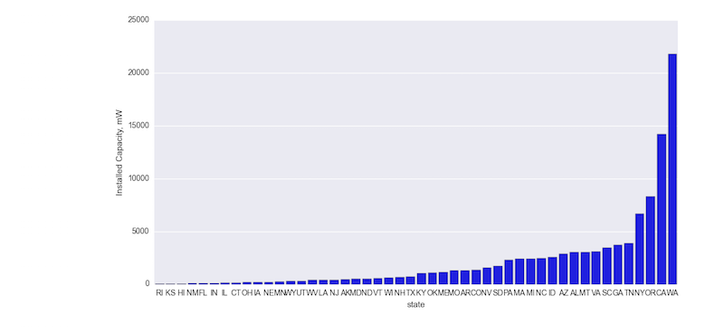
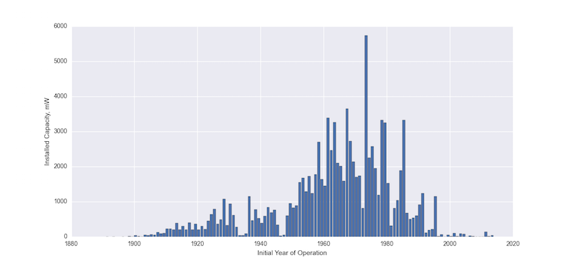
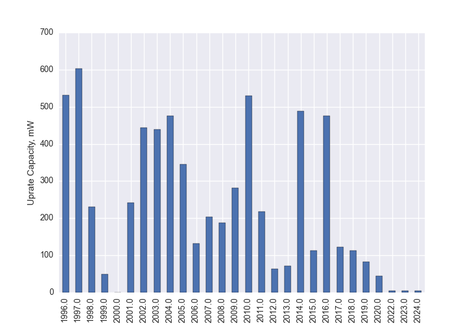
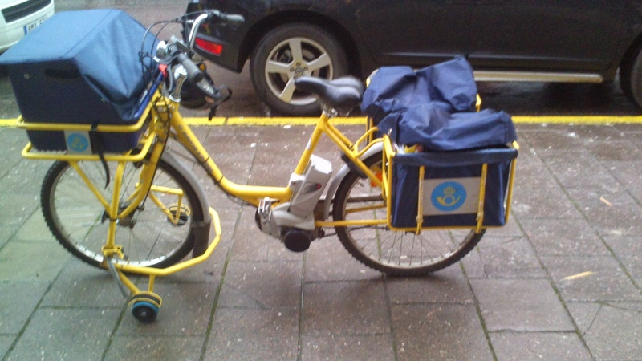
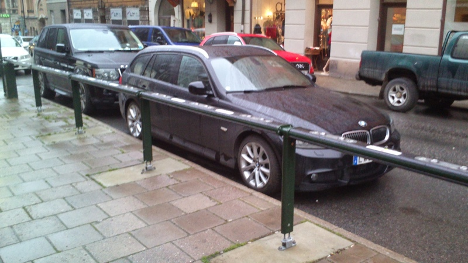

The great loss of agency
February 2020
My sometimes-tyrannical 2 year old has many opinions, which can seemingly change because of a slight shifting in the direction of the breeze. Suddenly, the blue shirt he has been wearing contently the entire morning, is now completely out of the question. He must get it off RIGHT AWAY! We count ourselves lucky if he chooses another shirt to put on before we have to go out the door to pre-school. Sometimes he just wants to put on his swimming shorts and snorkeling goggles.
My wife blames me for my son’s occasional petulance. She claims that I display some of the same traits, though hopefully in a slightly more dampened form. I just want to do things my own way. I certainly don’t want other people telling me what to do. I can’t argue with my wife. I am not a good yes-man.
Perhaps my son and I are a bit extreme, but I get the sense that most people get some satisfaction with being able to be there own person, and decide for themselves what they want to do. Most people don’t like having a boss—at work or otherwise.
Sociologists and pyschologists have a term for this: Agency. And they tend to find that a good deal of a persons contentment and satisfaction with their lives is wrapped up in their feelings of agency.
I am lucky to have a life where I feel like I have a lot of agency. I live in a rich, free country, where I can choose to express myself without fear of a despotic government. Getting enough food and water is barely an after thought, rather than something that something that dictates my day. I have a high degree of independence in my job. I am mostly free to come and leave the office when I wish, and I have a free hand in most decisions involving my teaching and research. In terms of agency, I have it pretty good.
But it is also easy to get wrapped up in areas of our lives where we do not have much agency. In my research, I am free to choose what I research, how I write my research articles and where I send those articles. But besides trying to ensure that I write articles that are interesting and of high quality, I have a limited degree of control over what publication ultimately accepts my paper. This is especially the case in the most prestigious journals, where they receive many more high-quality articles than they are willing to publish. So if I get wrapped-up in the game of valuing my worth as a researcher by which prestigious journals I have published in, I am essentially giving away a good chunk of my agency.
I think the same applies in a lot of other professions. It is easy to get wrapped up in extrinsic rewards and measures of prestige, which you as an individual have limited control over. Instead of focusing on doing a good job for the sake of doing a good job—which you have full control over—people seek validation in awards, promotion and appointments.
We also hear that there is an epidemic of anxiety among youth, and I wonder if it is not at least partly due to a feeling of losing agency. We seem to put ever more pressure on our kids to compete for various extrinsic rewards: Winning awards, getting into a prestigious university, working at a prestigious firm. Perhaps a lot of youth feel that they have less and less control over their own lives.
A youth spent on social media probably doesn’t help things. Suddenly, we subject even our most mundane pleasures—eating a good meal, taking a vacation—to the tyranny of likes and retweets.
So the people that work on being more in the moment, spending less time on social media, and focusing on the work rather than the extrinsic award are on to something. These are all things that let us assert more agency over our lives. My 2-year-old would be pleased.
The Existentialism of Endurance
February 2020
I have been on an endurance sport binge recently. Mind you, not actually doing that much running, biking or swimming. Instead, I have been reading about people (well, men really) exercising for ridiculously long periods. In my defence, I did recently buy two pairs of running shoes.
The two books I have read were Becoming Ultra, by Rich Roll (yes, apparently his real name) and Eat & Run, by the noted ultra-runner Scott Jurek. Both books at points suffer from the ailments of the typical sports memoir. There are cliches and glibness: Things like I gave it all I had, and I went past my limits — many athletes seem to have a strange, technically incorrect definition of limit. And ironically, I was unable to finish either one of the books. At a certain point, listening to one more story about running (or biking or swimming) a grueling race just became unbearable.
But neither of the books was without content or completely vacuous. They both tell interesting personal stories. Roll had been a competitive swimmer in college, but had become an alcoholic, and then after getting sober, lived an unhealthy sedentary life. He was nearly 40 when he started exercising again and eating better and 41 when, middle aged and out of nowhere, was a top finisher at an Iron Man competition. Jurek doesn’t have the same hollywood-ready story arch, but he also has a story to tell. He grew up in Northern Minnesota to a mother with multiple sclerosis, and a demanding father, whom he becomes estranged from. He is the misfit valedictorian on the cross-country ski-team who improbably becomes good friends with the athletically talented town trouble-maker, and together start entering ultra-long-distance races.
Since we have been going largely vegetarian in our household for the last few months, it was interesting to hear both of the authors credit a plant-based diet composed of lots of vegetables, fruits and whole-grains. For both, they seem to tell a story of a diet-change coming first, and athletic success following. After a couple months of mostly avoiding meat and milk products, I am still far from feeling like I could run a few marathons in a day, but nor is that a goal for me.
I also found interesting the way both athletes try to separate out the competitive, external incentives of entering endurance races, and the internal motivations that they both claim is the real reason that keeps them running past the 50 mile marker. The enjoyment of the actual running (or swimming or biking) is what really keeps them going, even though both are clearly competitive people who want to win the events they enter. They both emphasise the importance of being in the moment, rather than focused on a goal. There seems to be a broader lesson here. In our careers, we should perhaps try to focus more on what we find meaningful or enjoyable about our work, rather than focus too much on the career goals themselves, which can lead to lots of stress and disappointment. We could say something similar about our family lives and relationships. Being more in the moment is a bit of a cliche, but perhaps one that has a lot of merit.
The Power of Infinity
I remembering walking out of high school calculus class and feeling dazed from the experience of trying to get my hands around the concepts of calculus. There was a mix of wonder along with mental exertion that left a feeling of enjoyable exhaustion.
I’ve been using and teaching calculus fairly regularly ever since, and it has sadly become a little blasé. Reading Infinite Powers by the mathematician Steven Strogatz helped rekindle some of that wonder. More so, I have gotten a deeper understanding of both where calculus comes from and a deeper intuition for the mechanical calculations I now do almost automatically.
This is not a book intending to teach calculus, though I wish I would have had it handy 20 years ago when I was learning. Instead, it is meant to express to the lay reader some sense of how beautiful and useful calculus is, as well as giving a non-technical explanation for what it is.
Strogatz, a math professor at Cornell University, is one of my favorite writers of popular mathematics books. That might seem like faint praise, but he is genuinely good with the pen, which is sadly not the case for all mathematicians.
What I really appreciate about the book, is that he tells the story of calculus from so many different angles. There is the historical perspective, where he goes all the way back to the ancient Greeks and their struggles to estimate such things as the area of various shapes.
This tangents (pun intended) nicely into a geometric interpretations of calculus. The secret sauce to calculating the area of circles and other non-angular shapes is to pretend you can divide the circle into infinitely many parts. This fiction of dividing into an infinite number of parts, which the ancient Greeks found appalling, links directly to the modern concept of the limit, which is the first big stepping stone to calculus. At various times, he also uses numerical, algebraic and mechanical examples to make the concepts clear.
Of course, calculus really comes into its own when trying to understand movement, forces and interactions: What mathematicians would call dynamics. Strogatz gives a wonderfully intuitive and enjoyable overview.
The mathematics of motion of course begins with Isaac Newton. Usually, when we hear about Newton, we learn that he both discovered the universal laws of motion and discovered calculus, as if these were two independent things. In fact, they are closely related. Strogatz expresses the wonder at how nature seems to follow mathematical laws. A mathematician can make correct theories about the physical world, not just through close observation, but by deriving the calculus. This has amazed generations of mathematicians.
I took a differential equations course in college, the direct descendent of Newton’s mathematics, and I remember hearing the chatter among the students about how boring and difficult this course was. The course was taught by a young, apparently very bored mathematician. I managed the class fine. I remember a lot of work going into learning about the motion of a spring, without every really grasping why this was an interesting problem. In hindsight, I really wish I could have taken the course from Prof. Strogatz. Perhaps he has his course videos online?
10 percent human
I have been listening to the book 10 Percent Human, which is a popular science book on role of the microbiom—the bacteria that occupies our bodies—in human health. It is eye opening. From the way the author tells it, many of the modern worlds most pressing health problems have their root and perhaps solution in the makeup of the bacteria in our bodies.
I had been curious about this research since I had heard a handful of accounts of the near miraculous curing of chronic intestinal problems, obesity and most amazingly, autism, by transplanting healthy bacteria to a patients gut.
I had also started hearing about the health benefits of switching to a high-fiber, plant-based diet that lowered inflammation in the body, and that this had something to do with how the bacteria in the gut processed the food.
Up until recently, the idea that bacteria in your gut could be responsible for everything from maintaining a healthy weight to avoiding autoimmune disease seemed far fetched. But the author goes convincingly through the evidence.
I am not sure this book will have a big impact on the way we live. But that is mainly because we had already started making the changes that the author recommended: lots more plant-based food that is high in fiber. But in any case, it was a fascinating and well-written account of a poorly understood part of human biology and health.
I heart email
I was at an office retreat in the beginning of the month. If you dont know about office retreats, they are how bosses try to trick their employees into going to extra long meetings.
I can’t blame the bosses. If they told the truth, no one would come. Attention: We will be having having a two-day meeting. Instead of going home to your comfortable, highly mortgaged home after the work day, the meetings will continue into the evening. We will generously provide you with food. If you have any food preferences, you may want to consider not eating. We will also provide a serving of alcohol. You will thereafter feel pressure to continue buying overpriced alcohol and consuming it with your professional colleagues. What could possibly go wrong? You will be assigned a cell, I mean a hotel room for the evening. At breakfast time, you are invited to make awkward small talk with the boss while hungover because of the previous night’s alcohol.
In all seriousness, all this is true. There are, though, people who seem to enjoy retreats. These people are strange. I guess I am a little strange then, because I did actually find myself enjoying parts of the retreat. We had it in Røros, which is a genuinely wonderful place. With its 18th century industrial old-town well preserved in the midst of mountainous nature, Røros seems straight out of a Disney film. Literally: the scenery in Frozen was partly inspired by Røros.
During the free-hours, while everyone else either was out skiing or visiting the pub, I just wandered around the old town. I got out of the most central market area, and walked among the old wooden residential homes. I would discreetly peer into the windows, taking a peek at what people were up to on a quiet January evening. That’s not creepy, right?
And I even found some of the meetings, the very long meetings, interesting. But maybe not in the way the bosses had meant. I am captivated by how, despite 50 years of huge technological advance in communications technology, office communication is so awful.
During one of the meetings, we got information that the meeting notes for the monthly office meeting is put out on Teams. Someone else asked why they are not put out on Workplace. Well, because workplace is for internal communication, and not for file sharing. I trust that my colleague was right in saying that Teams is better for file sharing. I wouldn’t know personally, since I have never been on Teams. I was on Workplace once. Workplace is made by Facebook, and looks and functions much like Facebook. Facebook is often criticised as an addictive time-waster. Just saying.
Later there was a discussion about responding to student questions and queries. Here, students can use Itslearning to send us a message. That is if they don’t instead send us an email or a message on our work issued iPhones. We should probably check all three, regularly.
So in this one meeting (albeit long meeting), we covered work communication on 5 different plattforms. I couldn’t have been the only person in the room who saw the problem there, but no one pointed out the naked emperor in the room.
This meeting made me do something I hadn’t done for a very long time: Appreciate email.
I remember getting my first email address as a teenager. It was really cool. Now I could send written messages to anybody else with a computer, a dial-up modem and one of those internet company CD’s you got free in the mail that gifted you multiple hours of free internet access. (I think those free CDs in the mail are a generational thing. Anybody born after 1995 probably has no idea what I am talking about).
I also remember some disappointment, firing up the old inbox, and seeing an empty page. There just wasn’t that much incoming mail for a 14 year-old in 1996. I was at inbox zero way before it became a thing.
I still use email, usually daily. On reflection, I prefer it over other communication platforms in most cases.
For one, it is an open platform. You don’t need to sign-up for a gmail account to send me a message, and I don’t have to sign up to whatever faddish, privacy-destroying service you use in order to send you a message.
Email can be both short and long form. You can shoot off a short invitation to dinner, or sit down to compose a long update to a friend who lives far away. At least for me, email doesn’t elicit the false urgency of a text message. With an email, I feel I can take my time to reply, thinking through what I want to write.
At its best, email preserves some of the ritualised courtesies and politeness of old-fashioned letter-writing. Maybe some people think writing things like Dear, and Sincerely is all very quaint. But I think that a little bit of formal politeness only makes the world a better place.
Of course, the phone call out-dates the email by almost a hundred years, and it still has its place. I can talk on the phone with my wife and some close friends and family. But otherwise, it can feel stressful, intruding, and often inconvenient. As the saying goes, the best time to call is email.
So go ahead, send me a message on teams, workplace, messenger and whatsapp. There is a good chance I will never see them. But send me a long, old-fashined email, and I’ll be overjoyed.
Slow-math with Joseph Kadane
This semester, like many in the past, I have tried to learn a little more statistics or mathematics. This semester I picked up The Principles of Uncertainty, by Joseph Kadane. But I tried a slightly different approach to learning this book.
Often times I have had as a goal to finish a book. This has meant going quickly through chapters and skipping most exercises. But with this book I decided to take it slow. Working through only a few pages per day, and trying all the exercises. The book was organized in a way conducive to this type of learning. Exercises were placed after each short subsection. I could read a little bit and then work on a handful of exercises. It was slow-going, but I definitely got a much fuller understanding for the material.
As for the book, it is the type of book on probability that I have long sought after. It is rigorous, with plenty of equations and math, but at the same time spends time discussing the meaning and interpretation of the probability equations. The author is a proponent of a subjective Bayesian perspective, and motivates the basic tenets of probability through the idea of making bets based on probability of beliefs. It is an intuitive and believable approach. I suspect that this perspective also encourages a focus on interpretation, rather than just the mechanical maths. Here is one more reason to be a Bayesian.
My wife cuts my hear now.
January 2019
Today The Wife cut my hair, for the second time.
The Wife loves to go to the hair dresser. Or is it called the salon? In any case, she loves it. It is like a mini holiday for her. She gets to chat. She gets her scalp massaged (I had not idea that was even a thing). She gets served a cappuccino. She comes home relaxed and happy. Well worth the... Well, I don’t know how much it costs. For some reason, she is never willing to tell me.
On the other hand, I really dislike getting my hair cut. I try to avoid it as long as possible. At its worst, I start looking like a combination of Boris Johnson and a poorly groomed golden retriever. I don’t like spending the money, that’s one thing. I don’t like having to take time out to go to the hairdresser and then wait until they are ready. I don’t find it relaxing getting my hair cut. In fact, I find it downright stressful.
Making small talk with the hairdresser is the worst. First, they always ask about me. I have been trained to not talk too much about myself. That is obnoxious behavior. But it feels strange to start inquiring too much into the life of this complete stranger cutting my hair. But, how are you doing? Do you like your job? How is your marriage going? How do you feel about Jesus?
In Norway I find small talk especially hard. First, I always get the same question. They inevitably ask, where are you actually from?
You see, I was born in Norway and Norwegian was my first language and only language. Then my family ruined my future hair-cutting experience by moving to the US, where I spent the next 26 years.
Norwegian is very regional. Every region, sometimes even every town, has their own dialect. So when the hairdresser hears me speak, they might first think I just come from another region. But then I make some silly grammatical mistake that no long-term Norwegian would make. I use the wrong gender form of some word, lets say. Or I use the wrong pronoun. Then they catch on. Where are you actually from? As if I have been trying to deceive them. Darn it!, you caught on. Then I have to go through the whole spiel of explaining, that no, I am not Dutch or German. I was born here, then my family moved, blah, blah, blah.
I end up telling my whole life story to a total stranger. All for the pleasure of paying someone an exorbitant amount to operate a clipper for about 15 minutes.
So no more! Now my wife would have to learn the art of the clipper. I bought a clipper with an old fashioned wire and electric plug. I have one with a battery from before. But here is the thing about a pair of clippers with a battery: They will inevitably run out of juice in the middle of the haircut, leaving you looking like a punk rocker or a self-flaggelating monk from the Middle Ages.
Of course, I wouldn’t just let my wife take a pair of clippers to my head without proper training. She watched a 5 minute YouTube video ahead of time. See, there, fully trained!
Learning how to cut hair is apparently a process of trial and error. But I have had buzz cuts before, and in the worst case scenario, I could just have one again. Plenty of men my age go with the buzz cut—though often it is because there isn’t that much hair to buzz in the first place.
There was a learning curve. Making it look like she hadn’t just put a bowl over my head and shaved around was a surprisingly delicate task.
So how was the end result? Well, too put it this way, the marine corps would probably be mighty impressed with this first-time cut. It gets the basics right of a short haircut. It’s pretty good blended and even on both sides. The Fab Five might not be so impressed, but it is unlikely they will be dropping in any case.
The Wife’s New Years resolution this year is to learn to how to do more practical things. So she was an eager and willing participant in all this. The economics text books talk about specialization, and rationally I should probably just pay to get a professional to get my haircut. I have a modestly well paying job, I can afford it.
But there is something undervalued about doing it yourself or within the family. It gives a feeling of mastery, self-sufficiency and pride of work. I don’t know if my wife is feeling all of those things after this first hair cut, but as long as she is willing, I’m more than happy to let her continue cutting my hair. As long as she doesn’t start asking me, so where are you actually from?
Taking a tech Sabbath
January 2019
I have been reading 24/6, a book centered around the idea of taking a sabbath from tech, one day a week. The author, Tiffany Shlain, takes the idea from the Jewish tradition (she and her husband are both Jewish), which in some cases can be quite strict and inconvenient. The same is true for Shlain’s tech version of the sabbath. Absolutely no screens. They make their plans ahead of time: Print out maps, make lists, and set up appointments ahead of time. Instead of Spotify on a phone, they recommend a record player. Instead of calls on a phone, they recommend getting a old-fashioned land line.
I can see the attractiveness of one, absolute screen-free day a week. In some ways, absoluteness of the rule makes it easier to follow. No grey areas (though Shlain admits that they are forced to make exceptions a few weekends where they have to work). One day a week you are transmitted back to a simpler time (like my childhood), without smartphones, iPads, and always-on connectivity.
At the same time, I am not tempted to try it. Part of it is that I have become genuinely dependent on new technology. I don’t even know if it is possible to order a new land-line in our apartment, which was built just last year. More so, a lot of technology makes our lives genuinely better, if only we can learn how to restrict the more addictive aspects of it.
So my approach, which is more piecemeal and ongoing, is to try to restrict the technology that I have. I use the program freedom to restrict apps on my computer and phone. I have deleted most of my social media accounts, with the exception of twitter (which I restrict with Freedom). I have deleted most news apps from my phone.
I have also toyed with the idea of ditching my smart phone and getting an old fashioned Nokia - good for calling and texting. I would still keep my old iPhone SE, but mainly as an iPod—no SIM card, and mainly to have around the house to listen to music, podcasts and audio books (which is what I mainly use my phone for these days).
Why I hate Porsche SUVs
December 2019
My wife knows that I can get worked up just by seeing a certain type of car. A while ago we were taking a walk, and a large Porsche SUV rolled by. Ahh, I hate that car! I grumbled. Of course, the car parks a little ahead of us, and my wife says, oh, that is one of my colleagues. I hoped I hadn’t said that too loud.
I have given some thought to why I dislike that car so much. I don’t much like cars in general. I especially don’t like SUVs. And with good reason, I feel. They are fuel hungry, they take up space, and their elevated stance helps them clear not only rocks and shrubs when off-roading, but also pesky pedestrians loitering on the street.
But for some reason, the Porsche SUV, and similar luxury SUVs have a special place in my gallbladder, or wherever it is we store irritation-related emotions. I think it is something to do with the message the car is trying to send. Driving around a Porsche SUV has all the subtlety of a guy going around telling people, Hi, I’m Tom. I’m doing quite well.
People have of course been using cars to try to tell a story about themselves since Karl Friedrich Benz created his first horseless carriage. What the Porsche SUV seems to lack is plausible deniability. Plenty of people ride around in expensive SUV’s or pickup trucks. But they can usually come up with some plausible sounding excuse. I need it to get to the cabin, I carry supplies for work, It snowed here once.
People with sports cars can also come up with some plausible excuse, unrelated to the size of their ego. Usually, it is something to do with their love of the mechanical elegance of a finely tuned rocket on wheels. Or, as the strange sports car category name suggests, the owners see themselves participating in some strange competition, requiring the athleticism of operating a sew machine.
But the Porsche SUV has no plausible deniability. It is pure ego. Pure showing off. From a societal point of view, it may not be any worse than a Ford og VW, but it sure feels that way from the sidewalk.
Extreme Economies, by Richard Davies
The premise of Extreme Economies, by the British economist and journalist Richard Davies, is that extreme societies can tear down central economic concepts to their most elemental, and in the process also give us an idea of what the future might hold for the rest of us. It delivers on its premise, and is both entertaining and engaging, as well as thought provoking.
Each chapter showcases a society characterised by some combination of extreme or unusual situation. How markets function or fail to function in such societies are used to illustrate some key economic insights.
A notorious Louisiana jail is used to show the functioning of currency. Contrasting refugee camps illustrates both the power of free markets and the difficulty of central planning. The Congo is used to show the resiliency of markets in a non-functioning state.
But what I liked most about this book, was that Davies manages to show the power and resiliency of markets without fetishising them. Corruption and lack of institutions greatly limits economic potential of The Congo. Free markets lead to bad, even potentially catastrophic outcomes in the Amazonian rain forrest.
What I appreciated most was his dive into the importance of informal relationships and social cohesion, which are too rarely dwelled upon by economists. Davis writes about the break down of the once great industrial city Glasgow. The cities economic decline was most directly caused by the loss of competitiveness of its ship-building industry.
But poorly thought out city planning worsened the societal breakdown. Working class Glaswegians traditionally lived in cramped, centrally located tenement housing. These may not have been ideal, but there was a strong social cohesion among the residents and high level of trust. City planners who moved residents out to larger, more modern block-apartments on the city outskirts had good intentions. But they ruined this community. People were left physically and socially isolated.
Of course, in different forms, cities around the world have been making this mistake. Building out and emptying out city centres in exchange for far-flung suburbs and exurbs, leaving people dependent on cars. The modern epidemics of anxiety and loneliness has a lot to do with bad city planning.
A tragedy of errors: Midnight in Chernobyl by Adam Higginbotham
A certain subset of people will gladly tell anyone willing to listen how stupid it is to be against nuclear power. This emissions free source of electricity is plentiful. More than plentiful actually. Theoretically inexhaustible, at least at any reasonable human scale. Countries that have completely de-carbonized their electricity system, like France and Sweden, have done it largely on the back of nuclear power. Few examples (yet) exist of countries kicking carbon with renewables. More so, historically, nuclear is incredibly safe. It is responsible for far fewer deaths than coal, gas, oil, even hydropower.
At a logical level, all these arguments still hold after reading Chernobyl. The book appears incredibly well researched, and large parts read like a fast paced thriller. The author fair-handedly discusses the many advantages of nuclear power in a concluding chapter. But the reader can't help but to understand the deep, instinctive skepticism to nuclear power.
The engineers, fire fighters, and conscripts that were exposed to deadly radiation met an invisible, odorless, and silent killer. They could be exposed to a deadly dose of radiation, without realizing it. The deadly effects only took effects made themselves apparent only hours, even days or weeks later. It is like something out of a horror movie. Worse than a horror movie.
Chernobyl was terrible, but what was really horrifying was the real possibility that it could have been so much worse. The engineers working to contain the disaster were worried by a scenario they referred to the China Syndrome. This was the idea that the exposed nuclear core would burn through the concrete base, burrowing down to the ground water long underground, and then contaminating huge swaths of modern day Ukraine and Belarus for hundreds of years. Maybe longer. This was one of several horrifying possibilities in the immediate wake of the explosion.
The soviet experts who designed the Chernobyl reacted insisted, even decades after the accident, that the reactor design was safe. It was operator error and a freak, one in a million confluence of events that led to the accident. It is hard not to make comparisons to modern-day western experts confidently expressing the safety of nuclear power. This is perhaps an unfair comparison, but easy to make nonetheless.
I have been lukewarm on nuclear power, something this book only helped reinforce. But this has been primarily been on economic grounds. Pouring resources into nuclear, a technology that seems to get more expensive with time, seemed to be like walking against the wind in a period where wind, solar, and battery costs have been plummeting.
Nuclear proponents, like those of coal with hypothetical carbon storage technology, seem to be wedded to the status quo of huge power stations dispatching power through wide transmission system. The few new nuclear power stations that have been started in the western world have ended up years, sometimes decades delayed and hugely over budget. Even China seems to have problems scaling up their nuclear power build-out. Abandoning these ambitions these ambitions seems like it could lead to both a cheaper and cleaner electricity system. Citizens may get the added bonus of a little extra peace of mind as well.
Best 10 books I have read this year.
I see several people posting their favorite 10 books this year, so I thought I would do the same. These are not necessarily published in 2019.
- The existential guide by Gordon Marino.
I can not get this book out of my head. Part philosophy, part memoir, Gordon Marino, a philosophy professor and former boxer, distills the essence of the existentialist school of philosophy into chapters exploring the range of human experience and emotion. Every time I get sucked into a spiral of negative thinking, whether it be about my career or family, I come back to the lessons of this book, and it puts me in a better place. Not many books can do that.
- Kochland by Christopher Leonard
A well researched and fair history of Koch industries and the brothers who built it into its modern colossus. The book is damning in showing how money has an undue influence on politics in the US. But the redeeming sides of the company and its owner-brothers also comes through. Many, myself included, might come away surprising by how likeable the Kochs are.
- Adaptive Markets by Andrew Lo
Economists have long stolen mathematical models from physics and chemistry as the basis for their models of markets and human interaction. This book makes the case that biology might be a more realistic source of modeling.
- Digital Minimalism by Cal Newport
Get off social media, delete most of your apps, and gain control of your life. A solid guide to how to deal with digital overload.
- Educated, By Tara Westover
A story about growing up with a religious extremist and abusive family, but also about succeeding against the odds.
- Extreme Economies, By Richard Davies
One of the best economics books I have read. Davies extreme case-studies to showcase sentral issues in economics. He shows the importance of institutions by describing The Congo, and how informal social institutions can hold together a community by describing the downfall of Glasgow. What I liked best: He acknowledges the resilience of free markets without fetishising them.
- Superpower, By Russell Gold
Wind and solar power have become cheap. This is a frustrating, but telling story about how government actions stands in the way of better making use of these new and economical energy sources.
- The Underground Railroad, By Colson Whitehead
One of the few literary novels I have read this year. In a world where racist ideologies seem to be having a comeback, it is useful to be reminded of the horrors of slavery.
- Rest, By Alex Soojung-Kim Pang
The American (and Korean, Japanese, British, etc) preoccupation with long hours has a flaw. History is full of examples of highly successful people who make time for rest. In fact, as Pang argues, rest is completely central to the success of many with creative professions.
- Why We Sleep, By Mathew Walker.
As someone who has always had problems sleeping, I found this book on the ongoing science of sleep to be fascinating. As we should all know through experience, a good nights sleep is essential to being happy, successful and healthy. Also includes lots of solid tips on getting a good nights rest.
Bill Bryson’s The Life and Times of the thunderbolt Kid
I have read a handful of Bill Bryson’s books. They are usually funny, oftentimes insightful, and always enjoyable. The Life and Times of the Thunderbolt Kid is basically a collection of stories about his childhood in 1950’s Des Moines Iowa. I listened to the audiobook version, oftentimes in bed before going to sleep. I am sure that my chuckling disturbed and annoyed my wife, who was trying to sleep. There were a few things that struck me while reading.
You could write it off as just nostalgia, but Bryson makes the case that things were better in the 1950’s - at least in an upper midwest mid-sized city like Des Moines. He talks about a vibrant city centre with lots of unique independent shops. It seemed like the young Bryson and his friends could roam freely around town, and this forms the basis of many of his fondest childhood memories. In the decades that would come, the city centres in the US often became hollowed out, as families moved to far-flung suburbs, and independent stores were replaced by national chains. Something was lost in this transition, which hopefully can be partially recaptured as city centres become revitalized.
Bryson also makes a point that by the 1960’s, most middle class families could essentially afford to buy everything they needed. Consumerism after this point consisted of buying more and bigger versions of what they already had - cars, homes, tvs, etc. The 1960’s was more than 50 years ago, and the amount of consumption has increased by huge amounts since then. If middle class people were more or less satiated already then, then it basically means a large portion of modern consumption is largely wasted. Looking around a modern US suburb filled with McMansions and multiple trucks and SUV’s parked in the garage, this doesn’t strike me as absurd.
Finally, there was a point towards the end of the book where Bryson tells about how his father—a sports reporter for the local newspaper—who had, at different points of time, offers to work in other cities, with bigger sports markets, and much more prestige. But each time, his father had decided that family life was good in Iowa. And besides, they wouldn’t be able to afford as nice a house in one of those bigger cities. Bryson laments that his father—somone he clearly admires as a writer—could have been one of the great sports reporters. But I found myself admiring Bryson’s father. And I wonder if those priorities—family, community and joy of work over prestige and climbing to the top—is also something more common to that time.
The Man Who Solved the Market by Gregory Zuckerman
November 2019
The Man Who Solved the Market by Gregory Zuckerman is about the billionaire mathematician and investor Jim Simons and the hedgefund, Renaissance Capital, that he founded and ran. A good biography tells a lot about the times and environment of a person, and this is very much the case for this book. This book is not just about the life of a billionaire investor, but more importantly how finance has moved from a clubby world where trades were done based on a good story and intuition to a world dominated by computers, math and algorithms.
There were a few things that I thought were especially interesting about the story of Simons and Renaissance. The first was that Simons was an established academic mathematician and passed forty before he started his firm. His firm didn’t really start gaining success until he was nearing 50. In a world where the 20-something entrepreneur is seen as the standard and forty is over the hill, this provided a striking counter example. In fact most new firms are started by people in their 40’s and 50’s. Life experience does, after all, count for something.
The second aspect I found interesting was that the firm was built up based on hiring people who lacked the traditional qualifications of working in finance. Instead of MBA’s, they hired math PhDs, computer scientists and physicists. Their particular experience or skills weren’t that important. They just wanted people that were smart, and figured they could figure out what they needed on the job.
This strategy was based on the idea that they just wanted really smart people. But I suspect that they benefited in another, equally important way: They got people with diverse experiences, ideas and knowledge. Had they hired only people who had PhDs in mathematical statistics (which most of their modelling was based on), they may have gotten an equal number of smart people, but I doubt they would have been as successful. They wouldn’t have had the same breadth of ideas floating around.
The last chapters of the book had a focus on politics. Simons became a major contributor to liberal causes and democratic candidates in his retirement. But more famously, Robert Mercer, who succeeded Simons as CEO, was a major backer of Donald Trump, and arguably did more than anyone else to help him get elected. Mercer appears to have had a long affiliation with fringe ideas, conspiracy theories and even far right-wing racial ideologies. His ideas tended to raise the eyebrows of the people he worked with, but he was generally seen as harmless until he helped elect Donald Trump. If you needed a good example of the harm that can be done when money and politics are allowed to mix too freely, you could almost not find a better example.
More from Less By Andrew McAfee: An intriguing idea, but a disappointing book
November 2019
Andrew McAfee’s book More from Less has at its heart an intriguing observation: In our modern economy we are producing more while using fewer raw materials. McAfee’s favorite prop to make this point is the smartphone, which replaces at least a half dozen gadgets: telephone, music player, camera, pager and the list goes on. He goes on to argue that this is not just a single case, citing statistics that show declining use of a whole series of raw materials.
I was looking forward to an in depth and well thought out analyses of this trend. But on this front the book largely disappoints. The author makes an argument about the inherent push of capitalist systems to cut costs in the face of competition, thereby reducing inputs of raw materials. Point well taken, but then instead of going further in depth, the author largely moved on to a hodgepodge of tangential issues.
The author discusses climate change, increasing inequality, the opioid crisis and a who’s-who list of other big modern issues. But I was often left wondering how it all related to the main argument of the book.
And while he seemed to veer far off course, I felt there were a lot of interesting questions and issues he could have taken a stab at. Besides pointing to the iphone, he barely discussed the role of information technology in reducing our use of raw materials. The amount of raw materials we need to create and store knowledge must be the most dramatic examples of doing more with less. There are also glaring exceptions to the trend of less raw material use. Take the trend of people driving huge SUV’s around cities.
And finally, I find the modern sanguine approach of modern economics to the big problems of our day as off putting. Capitalism will not solve climate change on its own, a fact that McAfee admits. But at the same time he seems to down play the the real threat that climate change poses. Perhaps that is because focusing too much time on the massive market failure that is global warming would detract from his main argument, which seems to be something like capitalism sure is swell.
The Life and Times of Robin Williams
November 2019
I picked up a biography of Robin Williams recently, “Robin” by Dave Itzkof. Celebrity biographies are usually not something that I read. But I was curious about Williams. First, having come of age in the 90s and 2000s, Robin Williams was one of the most visible stars, for better or for worse. He managed to make an impression in both his typical zany, comedic roles as well as his more dramatic, somber roles. There was also the contrast and even seeming contradiction between the zany outward persona and his death by suicide.
Given how much our culture idolises and glamorises movie stars, I was surprised by how uninteresting I found most parts of his biography. Certainly, there were dramatic moments in his life: His first big breaks in entertainment, marital conflicts and substance abuse problems. Yet, a lot of the biography reads something like “Then he did this movie, some anecdotes from other actors, the movie was critiqued/lauded, made money/lost money, and so on.”
To me, the biographies of scientists and entrepreneurs that I have read have tended to provide more compelling stories. This might be because these biographies often are about the interaction of the person and the society and ideas around them. The biography of Steve Jobs is also about the computer age. A biography of Einstein will be intertwined with european interwar politics and the dawning of the nuclear age. Perhaps the biography of an entertainer could say something about the times that they live in, but I couldn’t seem to find much in this biography.
William’s suicide seems to still be shrouded in some mystery, 5 years after his death. The biography seems to provide a medical explanation. Based on his third wife’s account, Williams had a brain disease similar to parkinsons. This both dulled his famously quick comedic reflexes, while also slowly affecting everything from his mood to his movements. The cause of his death, it is intimated, could well better be ascribed to brain disease, and not suicide.
It doesn’t seem everyone close to Williams accepted this explanation. Behind the grinning mania, Williams seemed to have some depressive tendencies. He was sensitive to critiques of his films, and was crushed by the thought that he was being surpassed by a new generation of comics and actors.
I think there is a general lesson there. Williams had a tendency to sacrifice most other things in his life to his entertainment career. He left two failed marriages behind him (though he appeared to have maintained a loving relationship with his children). He conquered the highest career peaks of his industry, yet his singular focus also left him exposed to the inevitable descent from those peaks. Putting all your eggs in one basket is a risky strategy, even for hollywood stars.
The Underground Railroad by Colson Whitehead
November 2019
It has been a long time since I read a real life literary novel, but I recently finished Colson Whitehead’s The Underground Railroad. The plot is straightforward. The protagonist is a slave in a brutal Mississippi cotton plantation. She stands out all her life as being different, odd, even crazy and potentially bewitched. Together with another slave, who had the rare ability to read, she plots an escape with the help of a sympathetic white local.
After an initial sprint through the swamps, she finds herself in the local branch of the Underground Railroad. In a novel mostly defined by brutal realism, the Railroad is a notable element of surrealism. It is portrayed as an actual underground railroad line with tracks and locomotives.
The novel follows her path from station to station, with her hopes of establishing a fresh start as a free person being continuously crushed. She is pursued by a ruthless slave hunter, who seems equally motivated by some deranged principle as by the actual payoffs from capturing the runaway slave.
This is a brutal novel. But in a time where white nationalism and other racial ideologies seem to be emerging around the world, it is useful to be reminded of the horrors that such ideologies can bring.
Mostly plants: a few weeks as a mostly vegetarian
November 2019
A few weeks ago, my wife got me to watch a documentary on Netflix about the benefits of a “plant-based diet”, which appears to be what people call vegan who don’t want to be associated with that word’s hippy connotations. The focus of the documentary, which was called “Game Changers” was on the athletes who claimed that a mostly plant based diet had actually boosted their performance. But there was also some attention paid to the health benefits of going vegan. I fact-checked some of these health claims after watching the documentary. Especially the claims when it comes to heart-health seem to have quite a lot of credence. I have some heart-disease in my family. My mom has to take medication for high blood pressure and had a scare in her late 40’s. My dad also had high blood pressure and died of an aneurism in his early 6o’s. I am in good health overall, but I am also getting old enough to admit that I am in fact not invincible.
My wife suggested that we try a week as mostly vegetarians and I was ready to give it a go. We mainly decided to try to cut out meat, while still giving ourselves the option of eating dairy, eggs and butter. But I still wanted to cut-down on all those things. I am lactose intolerant, so switching from milk products to soya- and oat-based substitutes isn‘t a drastic change.
We also agreed that we would make exceptions for things like visiting friends and family. We don’t want to be THOSE vegetarians. Last weekend I took my son and visited my family that lives in Stavanger. I in large part took a break from vegetarianism during this visit.
I should also say that our son in large part is already a vegetarian by his own volition. He likes pasta and vegetables and fruits, but has rarely wanted to eat meat. His diet has not really changed.
The verdict after a couple of weeks has been largely positive. To the great credit of my wife, who has taken it upon herself to find recipes, the dinners we have had have been really good. This is something I have noticed before. When you impose the restriction of no meat, you are sometimes forced to put a bit more effort in getting flavorful and varied food. The default meat and potatoes is not available.
I have not really missed eating meat. It was my time to do the grocery shopping this week, and it struck me how much of the grocery shelves were filled with meat and animal products. But it was a pure joy loading up on colorful vegetables and various beans, nuts, seeds and pastas. The great variation of plant foods comes into contrast when you look away from the bland pinks and reds of meat.
Another benefit that both my wife and I have noticed is that our grocery bills have come down a bit. Initially I thought the extra costs of more fresh vegetables, fruits and nuts as well as substitute soya-yogurt and the like would outweigh the cost of meat. But even after loading up on these things, our weekly grocery bill seems to have gone down somewhat. Not dramatically, but noticeably.
We will continue our experiment. The disadvantages and costs seem to be modest, especially when we maintain a practical and flexible perspective. The advantages, on the other hand seem to be great. We have been eating varied, tasty and enjoyable meals while actually spending less money. Research seems to suggest a host of health effects, with little potential downside as long as you maintain a good mix of vegetables, whole grains, legumes and nuts, with a multiple vitamin thrown in for good measure.
And then there are the other benefits. Cutting down on meat is an important way of reducing climate emissions and other pollution. Many modern animal farming practices seem both unsustainable and unethical. Images of genetically modified chickens crowded together in filthy cages and injected regularly with both hormones and antibiotics is enough for many to go vegetarian.
What's wrong with Economics? Too much smart.
October 2019
Academic economics has a well known cultural problem. The profession is heavily tilted towards white, male and straight. Recent studies have pointed to a sometimes nasty environment for women and minorities at conferences and at many departments. Popular message-board like websites catering to economists are well known cesspools of incivility.
In some ways, this is puzzling. As far as I can see, there is nothing inherent in the field of economics that invites this nastiness. In the departments I have known that have a hard time attaining and retaining female and minority candidates, I usually have not gotten the sense of any outright sexism or racism (though, it is possible that there is plenty that I don’t see). Individually, most of the departmental members seem good intentioned and likeable.
But I have a theory of how a more subtle, seemingly benign cultural trait can foster a lot of unnecessary nastiness: An over-emphasis on being smart.
I was having a conversation with a couple of friends of mine not too long ago. Both are economists, and to be clear, in addition to being exceptionally talented researchers, they are kind, warm and open. And, both are female.
But there was something that caught my attention in our conversation. I had just presented a paper. And I was grousing a bit about what I had felt had been overly aggressive questioning and commenting by one of the seminar participants. Aggressive questioning is also a well known trait in economics departments.
One of my friends agreed that the questioning had been overly aggressive. But, she assured me, the guy was really smart.
A bit later I was again gossiping a bit, explaining how I found one of my economist-colleagues a bit haughty. “But he’s smart, right?”, my friend asked.
I didn’t think much about these comments then and there. But later it struck me how strange they were. A persons perceived smartness seemed to outweigh other negative traits. Being smart gave you a pass on anti-social behavior.
This reminds me of some studies of businesses with star cultures. An investment bank, for example, where certain traders gain star status by making big bucks for the firm. The finding of this research is that firms and organisations with such cultures have a tendency to develop toxic environments. They become competitive, as people strive to obtain star-status. Those that do obtain star-status are given wide latitude to mistreat others and ignore social norms.
Economics departments foster such a star system. Partially, it is through an over-emphasis on publications in a few elite journals. But also through evaluation based on a narrow and poorly defined trait: “smartness”.
When economists say that someone is smart, I get the sense that they have not thought particularly hard about what exactly that means. I get the sense that many define it as the trait of being mentally quick. Able to, for example, quickly solve a math problem. Or, able to, on-the-fly, find some flaws in research being presented at a seminar.
From the moment someone takes the first step of the academic economist career ladder, they are faced with this bias towards smartness. American style graduate programs bombard students with technically demanding mathematical economics, especially in the first year. If you can succeed with this, you can succeed as an economics researcher, the thinking goes.
At the US graduate program that I started (but left after having completed the requirements for a masters degree), the point of the grueling first year was quite explicit. The program accepted an incoming class that was 2 to 3 times as large as that they had the resources to support through a PhD. The weak would be weeded out, and the strong survive.
Perhaps this emphasis on smartness, as defined by quickness of thought or a natural technical proficiency could be defended if it were a dominant success factor in doing economics research. But I’m far from convinced that is the case.
Certainly, some ability to tackle a bit of math and a few technicalities is important to the modern economics field. But my impression is that the narrow definition of smart as quick, is far from the most important trait in being a successful economics researcher.
I am not particularly quick. I am slow with math. And I am definitely not the one catching flaws in people’s seminar and conference presentations. But these things don’t seem to impede me writing research papers. Here I feel there are a mix of traits and skills that are equally if not more important than pure smarts. Curiosity, doggedness, creativity and the ability to make connections between ideas are all things that I think have been more important for me in writing decent research articles.
I am no research superstar. But I suspect that even those that are would readily admit that the skill set required is much more than just smarts.
The downsides to selecting and evaluating economists on this narrow traits are then many. In addition to contributing to a potentially toxic professional environment, the profession risks missing out on lots of diverse talent, whose strength as researchers lies outside smartness. It is striking that in studies of what demographics are usually described as being smart, it tends to be heavily biased towards white and male. My sense is that a lack of outward diversity is often also a sign of a lack of intellectual and creative diversity.
Finding meaning in life's blows, my review of The Existentialist's Survival Guide By Gordon Marino
October 2019
I started my freshman year at the smallish Minnesota liberal arts college, St. Olaf College, now almost 20 years ago, a fact I find somewhat shocking to think about. For some reason, I still tend to have an image of myself that more closely resembles the young college student that I once was, rather than the established, married, parent/adult quickly moving towards middle-age that I in fact am.
Though I don't see myself as overly anxious, the realization that I have moved into a new phase of life does occasionally induce some squirming. In fact, it has led me to do something I almost never did before: read a philosophy book.
But The Existentialist's Survival Guide is luckily not a typical book on philosophy. Gordon Marino is a professor of philosophy at St. Olaf College, the little liberal arts college I went too. I didn't take any courses from him -- though I wish I had. But I still knew of him. This was not just a typical philosophy professor, Marino is a former boxer, a boxing trainer and boxing writer. People who contradict stereotypes are often interesting and worth listening to.
Part of the book is autobiographical. And the outlines we get of Marino's life are fascinating. Enough so that I would gladly have read a clean memoir. Working class kid first becomes a boxer, but struggles with substance abuse and depression and gets into plenty of trouble. Somehow, nearly miraculously, a philosophy professor sees promise in him, and sends him down the road of becoming an academic.
But Marino's purpose is not to write a memoir. Nor is it a purely intellectual analyses or description of existentialism. Instead, it is exactly what the title suggests: a personal guide to the philsophy of existenialism.
Existentialism, as he describes is, is not a philsophy for the good times in life. It is a philsophy that is concerned with life's hard knocks: Anxiety, depression, death and loss. He mines his own life for examples. By his own telling, his temperament is gloomy. It is clear that studying Existentialism has not just been an academic pursuit for him, but has been a source of dealing with his inner deamons.
Existentialism is a philosophy particularly suited for the modern world. People spend hours on social media, often trying to concoct a facade of happy, smiling success. This all leads to an inauthentic world where life's inevitable downers seem to have no place.
In contrast, existentialism does not just acknowledge life's difficulties, but essentially says that these difficulties are what really define us, make us authentic, and as Kirekegaard says, helps us discover our "true selves". We do not have much control over how we feel at any given time, but we do have the power to control how we relate to those feelings and what we do with them. The message seems to be, bad times are not something to just get over, but rather something that is essential to building character.
I struggled trying to parse exactly what finding my "true self" actually means. It sounded a bit wishy-washy. But after a while, I think I started to get an inkling that this ambiguity was part of the point. Existentialism is a philosophy that has its root in the difficulty of finding meaning in the modern world. The existentialists don't provide A tidy definition or presciption, and neither does Marino.
One particular concept that spoke strongly to me, and helped clarify the idea of a true self, was the constrast with the ideal self. The ideal self is a concept Marino meets often in the classroom: The student who sees getting into a good med school or law school as a defining goal in their life. And of course, it doesn't stop there. There are then the career goals of getting promoted, becoming an executive, or otherwise trying to gain prestige. I see plenty of this in my own academic career. Not just in my students, but also other academics who are hyperfocused on getting lots of publications in the right journals.
But this quest to realise an ideal self--the happy, succesful, wealthy, admired person we want to promote on facebook--is a distraction from the more important job of finding the true self and discovering what actually matters in life: loving, caring for, and helping others.
Here was a powerful message in dealing with all the inevitable failures and disapointments in life. They are an opportunity to step back and think: Well, it wasn't that important. Now, what should I do to become a better person?"
Breadth over depth: my review of Range: How Generalists Triumph in a specialised world by David Epstein.
September 2019
The gist of David Epstein's argument in his book Range is that depth is overrated. Epstein comes from a background as, among other things, a sports writer. And this is also where he starts out in his book. He begins by contrasting the hyper-specialized training of Tiger Woods--primarily by his father, with the more varied training of Roger Federer. Federer, as Epstein tells it, was not particularily pushed into spending huge number of hours on the tennis courts at an early age by his parents. For a while, infact, he was more interested in playing football.
Both Federer and Woods became top-of-their-game champions. So a fair point could be that either a hyper-focused approach, or a broader, more varied approach towards a goal can gain results. The author did not mention diverging late-career paths of these two athletes. He probably didn't need to. Woods spiraled downward in a combination of injuries and self-induced personal scandal. Federer, approaching 40, is not as dominant as he used to be, but still plays at the top of his game and is still a contender at the big tournaments. Almost strangely, after 20 some years of playing in the notoriously grueling pro tennis circuit, he seems to still be having fun.
This is a Big Idea book, and both a feature and a problem of such books is that they cover so many distinct concepts and topics. Sometimes it is hard to keep track of how exactly everything hangs together. Success in sports is one of the topics that the author takes up. He notes how many top athletes have a varied sports background and many started in the sport they became known for relatively late- as in teens as opposed to the 3-year old tiger woods putting away.
The jump is then made to creative fields like music and visual arts. Here again the author lists examples of famous artists who initially wandered and did not start intensively with the work they are most known for until relatively late. The same basic story is told of well-known scientists: First came wandering, and then sustained success.
The reasoning that the author uses to tie all these stories together is that being a genaralist--wandering through the desert for some years, lets you pick up skills and inspiration that are in the end useful in your main occupation. By having a broad background, you have more tools to reach for, more analogies to create understanding, and perhaps a willingness to approach problems from a different perspective.
I wonder about the cause and effect in some of his stories. Is Roger Federer a great athlete because he competed in several different sports, or was he able to compete in different sports because he is such a talented athlete? The same questions could be asked of the scientist who makes contributions in several fields.
Sometimes Epstein goes too far in his arguments to the detriment of giving sustained focus and practice its do. Federer may well have gained some competitive advantage by also having played other sports. But it would be hard to argue that his success is not at least to some respect a result of a sustained, focused training regime.
As usual, the truth lies somewhere in between. Being hyper-focused on a single sport, goal, scientific field or professional career can leave you unbalanced, unable to adapt and blinded to creative solutions. At the same time, to succeed at almost any endeavor, a sustained effort is required.
Malcolm Gladwell is a Bayesian
I just finished the audio version of Malcom Gladwell's new book, Talking to Strangers. Gladwell is a gifted storyteller, and this is no exception. I have heard some social scientists complain that Gladwell's books glide over the nuances of research. Perhaps this is true, but I think it is largely beside the points. He tries to make a big-picture point, and he tries to use the available social science to help him do this.
In Talking to strangers he juxtapositions to ideas. The first is what he calls Default to Truth. This is the idea that humans are extraordinarly bad at catching liars and cheats. Even those trained to detect deception are lousy at it. He tells a handful of stories to make his point: A cuban spy who infiltrated the CIA and the Bernie Madoff ponzie, among others.
Reading through the first few chapters, you get the idea that this is the big idea. We are bad at judging other people's intentions and can be too trusting and easily deceived. We should be tougher and more skeptical of the intentions of others. But he throws in a twist.
The twist is that gives us a few glances into the lives of people who do not default to truth. These are people that are always on alert and trust no one. The Bernie Madoff example again comes up. Harry Markopolos was the analyst that had warned against Madoff nearly decade before the ponzi scheme was uncovered. While uncovering Madoff made Markopolos famous, his untrusting personality seems also to have made him miserable: paranoid and fearful that someone was always out to get him.
The punchline of the book, is using this contrast to understand the spate of police shootings of african americans. The argument is that the mind-set of broad-based stop-and-frisk policies, where police use minor infractions in order to try to uncover larger crimes leads to bad outcomes.
Police are taught to look for signs of things that are amiss in such stops. They are taught to be suspicious. Yet, outside of a few criminal hotspots, the chance of uncovering a major crime by pure chance is very small. Even in the face of signs that there may be something amiss--a nervous suspect, out-of-state licence places, etc--the police would be better off defaulting to truth. Giving the suspects the benefit of the doubt. Better yet, not stopping people for minor infractions at all.
It is hard for me to judge the sosiology and criminology of this argument, though it seems plausible. But as an example of Bayesian reasoning, it is pretty good. Bayes rule says that the probabilty of an event--say a person has committed a major crime--given evidence--like a nervous demeaner--consists of two parts. First, the probability of the evidence given the event. That is, what is the probability that a criminal will display nervous behavior. Maybe that is high--say 80 percent. That is where the thought process stops for many people. Criminals are nervous, this person is nervous, therefor...
But Bayes rule says you also need to consider the base probability- or the prior in Bayesian-speak. What is the probability that someone stopped at random is a criminal? Maybe .1 percent, or even lower? this base probability will dominate the overall probability in the face of all but the most damning evidence to the contrary. Malcolm Gladwell's big idea is Bayes rule.
Life with a bullitt: Electric cargo bikes are the future
September 15th, 2019
I can't remember when I first became aware of the danish cargo bicycle brand, Bullitt. But I do remember thinking that they were unusually cool, especially for being a utilitarian bike meant for carying loads or extra people. They were sleek, and came in a range of colors. They were designed to be the cargo bike that could go fast. I started daydreaming of getting one, but there were a few big problems. This, like all cargo bikes, work best in flat landscapes, where their extra weight matters less. I was at the time living in Bergen, which is not hilly, but rather mountainous. More so, there was no place to buy such a bike in Bergen, or for that matter any sort of cargo bike. Using a bike to get around this rainy, hilly, cobblestoned place was fringy enough.
Oh, how things have changed. The popularisation of e-bikes--bikes fitted with a small electric helper motor and battery--has made hills a non-issue. We live in Trondheim now, which is ranked as the best bicycle city in Norway after several years of investing in improved bicycle ways and other infrastructure. The combination of e-bikes and better infrastructure has lead to a big increase in the number of bicyclists. Last I heard, bicyling had about a 10\% modal share in the city. With better bicycle infrastructure, and better technology in the form of electric helper motors, there also came a wave of shops offering a range of both normal electric bikes and all sorts of cargo bikes. Just in Trondheim, I count 5 shops offering various cargo bikes for sale. Including the Bullitt.
I had been talking about getting a cargo bike for a while. When my wife told me she was pregnant, she did it by saying that I now finally could get a cargo bike. The cost is significant, and I felt I couldn't quite justify it as long my son was too small to ride as a passenger. But just after he turned two, I put in my order for the red Bullitt.
A good cargo bike with electric assist costs quite a bit more than most people think is reasonable for a bicycle. But as a car replacement it is downright cheap. The depreciation of a new car after one year alone would cover the cost. And for getting around town and doing normal errands, the utility is in many case better. My bullitt is rated to carry up to the 100kg, in addition to the rider. And it carries heavy loads well. The center of gravity of the bike sits low, so it is stable. The cargo hold also sits low, so extra weight has at worst a modest effect on the handling.
But carrying things around town is rare. The most common load I have is my 15kg child. He generally enjoys riding in it. He can see all around him, and it is possible to chat with him and keep an eye on him. I bought the optional seat and kalasj, which also means that he is within an aluminum frame. It feels safe. The seatbelts are the only negative point here. They are a simple hip belt with cheap looking plastic fastener. Many of the competing cargo bikes have a more sturdy seeming three-point fastener.
An electric cargo bike is a super-cheap car replacement, but in a lot of ways, the utility of a cargo bike goes well beyond that of a car. For one, it needs a lot less attention. it takes up a bit more space than a normal bike, but you don't need your own parking space. We have a parking space in our building that we rent out. I can similarily park pretty much anywhere in the city that I am going. Today, I took my son swimming. Most people have to pay for parking at the under ground parking garage. I pulled up my bullitt right to the bicycle parking by the front doors. When we were done, it was time for my son to take a nap, which he can do in the bullitt with a big pillow strategically placed next to him. After riding a bit to get him asleep, I pulled up to the local cafe, parked right by the window, and could enjoy a coffee while keeping watch of him right outside.
In fact, I would say that most places we want to go with him within the sentral parts of the city are more accessible with the cargo bike. We can pull right up to any of the dozen or so parks in the area. We can bike through some of the trails in the forrest to get to a nearby lake. And we can bike to visit friends without worrying about street parking.
It has been so freeing to be able to zoom around on the electric cargo bike, that my wife now has bought her own electric bike so that she can come along more often as well. She has also been an avid bicycle commuter, but big hills or long distances would often mean her taking the bus and meeting us some place. Now she can ride along side us.
Of course, being able to so efficiently and safetly get around by cargo bike is not always easy. We are lucky to be able to live in a place with such good bicycle infrastructure. I probably also would not dare to ride if I had to share the road with speeding car traffic. This is what is so frustrating with the debate around building for bike lanes in so many places. So many people in any given town may want to start using a bike or cargo bike to get around, improving their health, happiness and environment. Yet local governments deny people this opportunity by failing to make bicycling safe.
Apathy is underappreciated
September 7th, 2019
We hear a lot of talk about passion and engagement. And that is all very well. But more and more, I have been thinking about apathy, and how it is underappreciated. Don't get me wrong, I don't think apathy is an appropriate default atitude towards the world. But instead, I think that in order to expend energy and focus on those things that matter most to me, I need to practice apathy towards less important things.
Part of the problem is distraction. Social media lets us keep up with everyone from co-workers to old high school pals. But at a certain point, with many hundreds of "friends", the potential is for all of our attention and empathetic energy to be sucked-up. I feel it is better to show some apathy towards many of my acquaintances by unfollowing or even quitting social media alltogether, and focusing on important relationships. Since a period of my peak social-media a few years ago, I have been gradually shutting down and deactivating accounts. Facebook was hard, since so many things are organised now via facebook groups. But I recently deactivated my account, and I don't miss it. My only remaining active social media account is twitter, which I find to be a good source of links to things that interest me, both professionally and personally.
Today's politics also makes for turning on a bit of apathy. The daily drama from populists in Washington and London, among other places, leads to political burn-out, even among political junkies. I don't think it is good for someone, neither mentally nor physically, to be constantly riled up by whatever is happening in the day's politics. Most, after all, seems to be noise. I have heard this from several corners. Some have even mentioned it as a potential source of defeat for Donald Trump in 2020: People are just burned out by him.
It is maybe at work where I am most aware of the advantages of practicing some apathy. The hot catch-words lots of places are inclusive decision making and constant feedback; both from manager to employee and the reverse. And true enough, a lot of people are offended and get worked up if they are not constantly included in decision making.
At my work I make a conscious decision to disconnect from a lot of the issues and decisions not directly related to my job, and even some that are directly related to my job. My primary motivation is that this frees up a lot of time which I can use for teaching and research, which is after all what I am supposed to be doing with my time.
Besides the time savings, there are other advantages. For one, I think I am more satisfied with my job. I don't get drawn into tangential controversies that can leave me in a bad mood. About a year ago an internval evaluation report about research goals and rewards was being passed around. The gist of it was that the school should more heavily incentivize publications in elite journals. This managed to get me a bit riled up. Yet the policy was not implimented in anything approaching the suggestion of the report. And in any case, there was not really anything I could do about it. I would have been better off not having been aware of the report at all.
As my colleagues sometimes remind me, there are disadvantages of not staying in the loop. I might miss out on information, or the chance to influence decision making. Fair enough. Most important information is also distributed in some form through email, which I will usually quickly scan. But there may still be things I miss. If I had shown up to a meeting, I might also have had some influence in a decision that effects my job. Both these things I just need to accept. I can't complain about not being informed or not having a say, if it was my choice not to show up. On the other hand, having fewer reasons to complain at work may not be that bad of a thing.
When I am told I need to be at a certain meeting, I of course show up. If it is a meeting or event that is important for maintaining office moral, I will also try to show up. You can become a lot more efficient at work by down-prioritising lots of meetings, but being an office pyranah can also be energy sapping, not to mention making the workplace a generally less pleasant place.
The Importance of rest
September 2nd, 2019
I don't much care for typical self-help books, neither of the personal nor business type. But I have a soft-spot for books that go against the grain of our sometimes over-worked, distracted society. I have reviewed a handfull here, including Rework Digital Minimalism and Deep Work. These books all argue against the long-hours, always-connected, always-on-call mindset, and for a more focused and less distracted work-life.
Rest: Why You Get More Done When You Work Less by Alex Soojung-Kim Pang fits well into the mold. The author talks about the advantages of deep, concentrated work, but the focus of the book is about the importance of the time away from work. The book mixes anecdotes of the rest-habits of famous artists, scientists and leaders, with references to modern research that explains why rest can be so important.
There are lots of interesting points that are made. For example, the author has a whole chapter about the advantages of taking long, contemplative walks, allowing the sub-concious to work through problems. I was receptive to this idea. I have been an enthusiastic walker since my freshman year of highschool, when I found the idea of continuing to take the yellow school bus too odious and started walking the 4 km to school and back every day, even in the depths of Minnesota winter with the temperatures plunging. It wasn't meant as a productivity hack, it was just the most pleasant way of getting to and back from school. As a shy and often anxious teenager, it was also a wonderfully calming break before and after all the hubbub of an american high school.
Walking has been an important part of my daily life ever since. It is most of all a practical way of getting around. You almost always have the equipment you need to walk: Your own two feet, and a pair of shoes if you insist. I walked maybe most when I lived in New York. I walked 30 minutes across harlem to get from my apartment to the metro-north train station which I took to get to my job. Getting almost anywhere else also involved substantial walking. For shorter distances, it was often more pleasant and almost as quick as taking a bus or subway.
I still walk a lot, and I feel good that we are instillng our son in the habit of using his legs to get to places, even though walking with him can sometimes involve many detours to inspect puddles, sticks on the ground, and every passing cat. But maybe that is a part of why walking is so valuable. We do it automatically, without any conscious thought. Our minds are free, either to go inwards and wander, or to better notice our surroundings.
August 30th, 2019
Koch Industries and the radicalisation of the US economy: My review of Kochland by Christopher Leonard
I just finished reading Kochland: The Secret History of Koch Industries and Corporate Power in America. On the outset, I was a bit suspicious that the book would be a one-sided hit job on the Koch brothers and their eponymous company. I get the sense that the author is critical of the Koch’s outsize influence on politics in the US, but for the most part I felt it was a fair and evenhanded portrayal of the company and it’s long-time CEO, Charles Koch. As I wrote in the previous post, the book portrays many aspects of both the CEO and the company culture he created sympathetically.
Some of the most interesting aspects of the book have to do with broader shifts in industry and the economy. The book tells stories of how unions have gradually lost power and negotiating leverage, leading to stagnant wages, even while these same workers were becoming more efficient. Meanwhile, more wealth accumulates to owners and white-collared workers with specialised skills. Koch initially hired engineers to become traders in their commodity trading divisions, and they tended to pay them as engineers. But as they started to see their best traders poached away to financial firms, they had to match the wages of the outside bidders. The book acts almost as a fable for the major developments in the US economy over the last 40 years: Stagnant blue collar wages, rising inequality, winner-takes-all rewards, and politics dominated by moneyed interests. The book is a success story about a company, but what it says about the US economy is troubling.
August 25th, 2019
They aint that bad, and other nice things to say about the Koch brothers
Maybe one of the more surprising things that comes from reading Kochland, about the massive and sprawling Koch Industries run by Charles and David Koch, is that it is hard not to admire aspects of both the company and its sometimes vilified owners. The Koch brothers have become boogeymen for progressives in the US for their political work. I think it is completely appropriate to be chagrined by their seemingly cynical work at undermining the science of climate change and overturning Obamacare among other things.
At the same time, it is hard not to come away from the book with some affinity for both the company and it’s long-time CEO, Charles Koch. There are times I have even thought that it might be a place I could enjoy working, politics and much else aside. Koch has worked diligently in building a modest workplace culture that prizes greater goals and the good of the company rather than elevating individuals and producing stars. Koch recruits many of their white-collar workers, not from fancy ivy-league schools, but from places like Kansas State University and Texas A&M university.
Charles Koch is consistently described as polite, modest and genial. He is a boss with high expectations, and who himself sets the tone for hard work by arriving early and staying late. But at the same time he is described by countless employees as being approachable and completely lacking in arrogance. Many of his employees appear to be genuinely in awe of him.
The company seems built to be particularly good at sniffing out new opportunities and turning bad businesses into good ones. When Charles Koch took over from his father in the 1970’s, Koch Industries was a modestly profitable mid-sized company. He turned it into a vastly profitable goliath. The company also seems good at learning from its mistakes. In the 90’s the company was ensnared in a series of investigations because of infractions on environmental rules. After this, the company instituted a “10.000” compliance policy: 100 percent compliance 100 percent of the time (100 times 100 is 10,000). This appeared to be more than just a slogan, and was backed up by hiring a cadre of lawyers who ensured compliance at Koch’s work sites.
Had the Koch brothers not become so associated with their politics, I imagine they might more regularly be compared to other wise titans of business like Warren Buffett or Bill Gates.
August 22nd, 2019
Koch and the perils of management by measurement
I starting reading Kochland by Christopher Leonard a few days ago. So far I am enjoying the book. I have a tangential personal connection to one of the book’s early stories. In the 1970’s, not long after Charles Koch took over Koch industries from his father, he worked at breaking the back of the sometimes militant union at the companies’ Minnesota refinery. This refinery is in the same town I grew up in - Rosemount. I have driven by the refinery countless times, and a childhood friend of mine had a father that worked there. Rosemount has grown into a relatively large suburb of Minneapolis and St. Paul, crowded with McMansions. But in the 1970 it was mainly a farming community, where jobs at the refinery were some of the best paid in town. The conflict between the unions and Koch was not really about pay or benefits. Rather, Koch wanted to rest control over operations from the unions, which had in place extensive rules from everything from overtime pay to who could do which job. The unions held out for 9 months, with some members resorting to sabotage and even violence. But Charles Koch and his lieutenant who was put in charge of the plant refused to budge and in the end forced the unions to cave. I had never heard anything about a big strike in the refinery in the 70’s. But by the time we moved to Rosemount in 1988, it was already history.
Another interesting story that is told has to do with Charles Koch’s admiration for what might be called management by measurement—following the methods of efficiency consultant W. Edward Demmings. Every process should be measured, analyses and optimized in order to ensure maximum profit. While this certainly had the desired effect of helping make Koch Industries into a highly efficient and profitable enterprise, it also had some big negative side effects.
One of Koch’s businesses was something called oil gathering. This basically meant that they traveled around to various small fields owned by others and collected pumped oil from tankers in order to transport it to a refinery. Some Koch employees then had the job of checking the level and gravity of the oil in the tankers in order to calculate how much was taken, and how much Koch would pay. According to the book, and an FBI investigation, there was good reason to believe that Koch had their employees systematically understate how much had been taken. In effect, they were stealing oil.
It is not clear whether an explicit order came from the top of the organization to underreport oil that was being taken. At the same time, it is not hard to imagine how even a benign insistence on management by metrics could have led to such a fraud. A manager, say, is evaluated by the quarterly profitability of their division. If that division is in charge of measuring oil levels, then that manager has an incentive to press his employees to underreport. I can imagine similar chains of incentives and actions in more recent scandals, like the Wells Fargo case, where bank employees were under such pressure to generate fees, that they falsely created accounts for customers who never asked for them.
My best guess is that it is not the use of metrics themselves that is the problem. But instead the dominance of the metrics in the decision process. More wholeistic and qualitative forms of assessment are completely cast aside, and a few metrics are given undue prominence. This inevitably leads to gaming, and in the case of Koch, illegal behavior.
News ever-adapting: My review of Merchants of Truth by Jill Abramson
August 8th, 2019
The last decade or two have been tough on the news industry. Not so long ago, journalism was a fairly safe, prestigious and sometimes exciting profession. Newspapers often were profitable and maintained local monopolies or duopolies in their markets. If a local store or business wanted to advertise, the local newspaper was oftentimes the best bet.
The internet has upended this cosy existence, and the news business has struggled to survive. But this has also been a period of new entrants who have both disrupted and innovated, for better and for worse. The incumbents in turn have needed to adopt and change. The Merchants of Truth, by a former executive editor of the New York Times, Jill Abramson, chronicles this landscape through the stories of four news organizations. The incumbent New York Times and Washington Post, and two of the new disrupters: Buzz feed and Vice.
The story arc for the New York Times and Washington Post are similar. The leaders of both institutions saw the potential and perhaps the peril that the internet brought. But neither institution was able to move nimble enough to avoid a crisis. This reminds me of other once proud brands that stumbled badly in the face of technological change: Think Kodak or Xerox. Just as Kodak had seen the digital disruption coming (they had made and patented the first digital camera), the leadership of both the New York Times and the Washington Post understood that the internet required a fundamental change in the way they ran their businesses.
Despite this, neither of the institutions managed to make the necessary changes early on. Part of the problem was that a wholesale refocus on the internet threatened the lucrative print advertising business that traditionally stood for the majority of the papers income. Another problem was that both institutions were overloaded with senior staff, that had neither the inclination, nor perhaps the necessary skill-set to make the transition to the digital world. Not until that revenue source had nearly disappeared—Google and Facebook now soaked up much of the country’s advertising dollars—did the papers make serious changes. Even then, both papers tottered on the edge of bankruptcy following the financial crisis, only to be saved by billionaire titans. In the case of the New York Times, it was a loan from Mexican billionaire Carlos Slim. More dramatically, the post was bought by Amazon founder Jeff Bezos.
The road to financial salvation was not easy for either institution. Abramsom makes clear her unease with many of the compromises that the New York Times had to make with its principles. No longer would there be a strict wall between the business side of the paper and the editorial side. Brands and advertisers could co-create sponsored content for the papers that sullied the line between journalism and advertisement. A New York Times sponsored cruise with some of the companies well known columnists smacked many as being gaudy. But eventually, the Times and the Post were able to shore up their finances in a more preferable manner: they found out how to convince people that online news was worth paying for. Ironically, both papers were helped enormously by the news-spinning presidential campaign and subsequent election of Donald Trump.
In the period that the Times and the Post were heading for crisis, a host of new “content providers” were expanding quickly alongside the rise of the internet. Buzzfeed and Vice were two of these new media companies. In a way, their rise were a mirror image of the travails of the traditional papers. They started out as peddlers of highly profitable fluff and low-brow internet content. Eventually, they expanded into forms of serious journalism, often at a loss, in order to try to gain a measure of legitimacy and heft.
As journalism outlets, Both Buzzfeed and Vice were unfettered by both the ageing and well paid legacy workforce of the papers, as well as the traditional mores of serious journalism. Buzzfeed, and especially Vice were unafraid of deploying “sponsored content”, basically advertising masquerading as actual journalism. This would have been seen as a major breach of journalism ethics by traditionalists at the Times and Post, but even the Times would end up experimenting with forms of this in order to try to pump up their dwindling revenue streams. The standards and level of verification that the traditional papers held themselves to was also slacker at these new outlets. Buzzfeed’s bar for dropping stories before being properly fact-checked put them well into a journalistic grey-zone. Vice would send off their young correspondents to some of the world’s most dangerous places without proper training or even contingency planning should something go wrong, which they inevitably did. But fact-checking and contingency planning is time-consuming and expensive. These new actors were more interested in breaking stories and making their owners money along the way.
There is a nice symmetry contrasting the fates of the Times and Post on the one side and that of the up-start Buzzfeed and Vice. After being rescued out of their financial crisis by their respective billionaire backers, the papers recover both their relevance and a modicum of financial health through covering Donald Trump. Coverage of the election and subsequent chaotic administration led to a surge of online subscribers. Ironically, Donald Trump’s haranguing of the “mainstream” media, and especially the “failing” New York Times, was a huge gift to the papers’ financial well being and influence. On the other hand, Buzzfeed and Vice, who had experienced astronomical growth and profitability ran into rougher seas. At a time of increased scrutiny of journalists and “fake” news, these outlets were heavily criticized for putting out stories that turned out to be less-than fully verified. The frat-boy culture at Vice led to several sexual harassment lawsuits, while low pay for the rank and file combined with ostentatious spending by the now very wealthy founders bred discontent. Both Buzzfeed and Vice entered a period of slowing growth, increasing costs, and generally poor financial health.
Abramson makes a noticeable attempt to give a balanced verdict of both the traditional newspapers striving to make it in an online world, and the rowdy newcomers. But it is often clear where her greatest sympathies lie. While she had many positive things to say about the innovative ness and energy of Buzzfeed and Vice, she makes clear her disdain for their haphazard razing of journalistic standards and ethics. This is understandable, and for the most part, probably right. But there were times where I wondered if maybe she was overestimating the importance of some of these norms, and underestimating the contributions of the new-comers.
I also wish Abramson would have given over more space to talking about the digital transformations of the New York Times and Washington Post. Besides being a subscriber to the Times, I also have a very tangential connection with the paper. A friend of mine works as a graphics editor and what might be called a data journalist at the times. Through him, I have met a handful of other, mostly young-ish and extremely technologically savvy employees. I read stories from the times almost daily, mostly through their excellent iPhone and iPad apps, and occasionally through the website. As opposed to the picture sometimes painted of a technologically backwards New York Times, my picture is actually of a technologically savvy company. Clearly, this was part of their transformation and an essential part of the paper remaining financially solvent and culturally relevant. But it felt like this technological transformation gets relatively little attention. Her attention seems firmly placed on roles of the traditional journalists and editors. In an otherwise illuminating description of the changing media landscape, this seemed like a significant shortcoming.
Who knew transmission lines could be so exciting: My review of Superpower by Russell Gold
July 21st, 2019
I have a special interest in the energy world, and the renewable energy world in particular. Partly because that is my main research topic as an academic. But beyond that, I find it is just an exciting market, with lots of dynamism and lots of interesting characters (think, Elon Musk). It is mildly surprising then that there hasn’t been a non-fiction, character-driven page-turner on the subject, in the mold of Michael Lewis’ The Big Short or Moneyball. Until now, that is.
Russell Gold is the Wall Street Journal’s main energy reporter. He has earlier written a book on the fracking revolution and the major characters behind it. It says something about how mainstream and big business wind and solar power have become, when a Wall Street Journal reporter is writing a book on it. After all, in the business world, you don’t get too much more main stream than The Wall Street Journal.
The storyline of the book dances around the fundamental problem of solar and wind power. The wind does not always blow, but just as importantly, the wind does not always blow where people need the electricity. Wind and solar power have become cheap. This alone might surprise many readers of the book, and it might in itself be a worthy take-away. But the central story line of the book is instead around the need to transport electricity from where it is produced to where it consumed. If you have enough transmission, the intermittency of solar and wind stop being such a big problem. Some places will always need some electricity if you produce too much, and other places can always send you some if you have too little. You just need to make sure these places are connected.
This is easier said than done. And Gold explains why through the conquests and travails of his central character: An idealistic, renewable energy entrepreneur (I have a hard times remembering names in real life, and I have an equally hard time remembering names in books) who dreams of connecting wind farms in Oklahoma and the Texas panhandle, where the winds are strong and land cheap and plentiful, with the grids of the highly populated South Atlantic states.
This seems like a no brainer. Transport cheap, clean energy from a sparsely populated place to a part of the country with lots of people and plenty of demand. But the devil is apparently in the details. Traditionally, transmission of electricity has been something regulated at the state level. So building transmission lines across several states involves a thicket of overlapping regulations, political priorities, and insular utilities. In the case of the line that the book's protagonist wanted to build between Texas and Tennessee, there was also the enthusiastic opposition of a US senator, irrevocably against anything that had to do with wind power.
I won’t give away the ending. But in a way it was a fitting story arc for renewable energy. An unremitting march onwards, with progress coming in many small steps forward, but also with some big setbacks along the way. Gold is a gifted storyteller, and the book is a pleasure to read. I also learned quite a lot. For instance, I had always thought of storage and transmission as substitutes. But at one point, Gold explains in the book how researchers find that increased storage capacity for renewables actually tends to increase the demand for transmission: you can store the energy in order to transmit it at a time with higher demand and prices. They are compliments. There are happily many such nuggets. Not bad for a summer read.
A theory of everything: My review of The Three Pillars, by Raghuran Rajan
July 21st, 2019
Much of traditional economic politics is arguing about the trade-offs between state and market. The right wants to see a heavier role for markets, while the left opts for a heavier hand by the state. Raghuran Rajan argues in his wide-ranging book that this binary view is thoroughly incomplete. To understand many of today’s big problems and to provide effective policy solutions, you have to acknowledge and understand a third pillar of our society: The community.
This is not your typical economist’s popular non-fiction. Rajan draws on a broad swath of knowledge and scholarship, far outside of the typical bounds of Economics. The book starts with a history lesson. He describes how emerging nation-states and markets replaced the feudal structure of medieval times. The nation state, with relatively free trade within its borders was a precondition for effective markets and capitalism. At the same time, powerful kings (and occasionally queens) relied on the tax revenues from a thriving market economy in order to fund their war machines. Market and state were not opposing forces in their origins, but rather mutually supportive.
But the rise of the nation state and accompanying capitalist system had a destabilising effect on the time’s feudal society. When a person’s labor could be freely bought and sold, the traditional bonds between Lord and peasant were broken. This of course could lead to increased freedom and perhaps also better material well-being for the peasant, but at the same time the Lord’s traditional sense of obligation towards the peasant vanished. In other words, the community of that period was destabilised and weakened. This does not mean that the community disappeared or became irrevocably damaged, but it underwent a period of turmoil.
The historical perspective that Rajan brings is insightful. He argues that the end of feudalism came about because of a technological innovation: the cannon that could destroy virtually any castle wall. A Lord could no longer protect their relatively small fiefdom from a powerful army simply by building a wall (someone should tell the presidents). Thus a powerful king with a big army could control large swaths of land. The nation-state became possible. The implication is that today technological change is also changing markets and institutions, and by implications traditional forms of community. Income inequality, populist politics, skyrocketing opioid abuse and overdoses are all symptoms of the same problem: changing market structures and state institutions, and resulting stress to communities.
His policy prescription for many of the modern world’s ailments are then similarly focused on strengthening communities: what he calls creating empowered, “inclusive” communities. In practice, this means delegating more power from the international, federal and state level, down to the most basic community level. It means letting communities have more say over their own affairs. Rajan recognises the downsides and limits to this. Local communities with power over housebuilding tend to set up rules and regulations to keep supply of housing low and raise the price of existing housing. Rules have to be in place to avoid such abuse. This is where the “inclusive” part of inclusive communities comes from.
This is an ambitious book. Rajan not only chronicles big historical trends, but also tries to summarize and explain many of the modern worlds big issues and provide a blue print for how they might be solved. This ambition makes the book interesting, but at some points I also felt it could be a liability. There are points where it felt like he was straying far from his central thesis of the importance of communities in society. Nonetheless, to those who think the economists view point as being narrow and limited, Rajan provides a powerful counter-example.
Baloney, malarkey and nonsense: My review of Bullshit Jobs by David Graeber
July 2nd, 2019
Most people of a certain age have experienced doing some job or at least parts of some job that has seemed completely meaningless. During college I had a part-time, work-study job in the school’s media lab. I don’t quite remember what the intention was for that job. I vaguely remember trying to figure out some advanced-for-the-time website-making software. I don’t ever really remember making much progress, and I don’t recall ever helping anybody else with a project.
That is the thing with bullshit jobs, as the anthropologist David Graeber describes; it is not that you are doing nothing, but rather that you are seemingly assigned tasks with no purpose or value added. A large part of Graeber’s book is to simply document all of the different meaningless jobs people are paid to undertake. This was done in a notably unscientific fashion: simply asking people to write into him after an initial essay was published. Reading stories about all the various meaningless jobs people did, and how it affected them is strangely entertaining, in a schadenfreud kind of way. And I have no problem believing that large swaths of people feel that they do society little service with their jobs. Graeber has some interesting ideas of why this is, but the attempt to give a unified theory of why so many bullshit jobs exists felt half-baked.
Graeber is most convincing in arguing the main point of his book. This is simply to document that large swaths of the labor market consists of useless, “bullshit” jobs, and this constitutes a major societal problem. Again and again, he notes how people wrote into him, not to express how lucky they are to be able to essentially get paid for doing nothing, but instead how the absence of meaning in their work-lives left them depressed and miserable.
Many of those engaged in what they themselves identified as bull-shit jobs, chose to change careers, of course. Here, Graeber identifies another curiosity. Jobs that involve meaningful work, often pay poorly. Think pre-school teacher, or any teacher for that matter. Graeber explains, not without merit, how employers feel that they can pay considerably less to those working in jobs that leave them feeling fulfilled. The market system leads people to compete away good wages in order to do meaningful jobs.
The author often uses a hypothetical free-market economist as his straw-man. The free-market economist would argue that bull shit jobs should not exist. Rational firms and employers would not tolerate paying good wages to someone not doing anything meaningful. On the contrary, Graeber argues, free market capitalism encourages the creation of bull shit jobs. His argument seems to be that we have not socially or culturally adopted to the modern economic and technological world that we live in. In medieval feudalism, power was defined as having many underlings, toiling away at arduous, but necessary tasks. Technology and automation has obviated the need for such toiling and for such hierarchies. But those with power and capital still want underlings. Thus, the creation of multitudes of jobs, with little real function.
This part of his argument I actually found to be fairly convincing, at least to a degree. People I know who have or have had important leadership positions often define their stature by talking about how many they having working directly under them. In one case, I remember someone explaining the reason for quitting their job was that their staffers were taken away.
Graeber takes also takes aim at my own sector. Academia, as Graeber notes, has become inundated with administrators, often with high salaries. Some do essential roles: advising students on courses and requirements, setting up schedules, and make sure us humble faculty get paid on time. But these are humble jobs with humble pay checks. The high-paid administrators spend their time on such things as strategy documents and networking with other top administrators. Universities, as well as most organisations probably need some administrative leaders, but as Graeber says, the first thing a powerful leader wants is a staff directly under them. These leader-staffer positions often come with prestigious sounding names, like senior advisor, but often have diffuse job descriptions.
In explaining the increasing number of administrators in academia, Graeber also, rightly in my view, points out to the growing sets of goals and metrics that universities strive for. No longer are universities purely places of learning and scholarship. Universities seek to be near business and to influence policy and society. These all seem laudable, but they create competing goals and initiatives, which creates an artificial need for administration. It may also have the effect of diverting the attention of the faculty from their main tasks of research and teaching.
But it is also in trying to explain the existence of bullshit jobs, where I found Graeber’s arguments most lacking. While his anthropological analysis certainly has some merit, I think he was entirely too dismissive of the contributions economists could make to explaining the phenomenon of meaningless work. One problem seems to be that he treats all economists as free market fundamentalists, who insist that markets always lead to the best outcomes. This is far from the truth, especially when talking about labor markets. In fact, much of the most interesting work in economics from the last 30 years has involved analysing some form of labor market imperfection or failure: from bias and prejudice, to shirking and large-scale unemployment.
I get the feeling that the parts of economics that deal with the theory of firm and corporate finance might also have some interesting things to say about the topic. Managers who over-hire underlings sounds a bit like the story of “empire-building” managers who do not face adequate oversight by their shareholders. This problem of a managers incentives not being aligned with that of owners is a principal topic in corporate finance. Here the anthropology could potentially explain why managers seek to hire underlings who do essentially nothing, and the economics can help explain how those managers get away with it.
Another cause of bullshit jobs, which Graeber somewhat obliquely refers to, are misaligned incentives and poor contracts. Graeber tells the story of a miserable junior employee of a big auditing firm. This firm is payed according to billable hours. The management then has an incentive to throw as much meaningless work at their young hires as possible in order to maximise their revenue. Thus these young hires face a combination of long hours doing useless work. I suspect that this might be overstated by the author, but here too, economists could have a lot to say: incentive incompatible contracts and the effects of oligopolistic firms (the “big 4” auditing firms), are far from ignored in the economics literature.
Another problem with the book is that it seems to have too broad of a stroke when defining bullshit jobs. Accountants are invoked several times as an essentially useless profession. While I have no doubt that there are accountants out there who feel their jobs lack meaning, saying that the accounting profession as a whole has no important role to play in society is a simple display of ignorance about what accountants actually do. Creating a firm’s financial statements, and making sure that they conform to an agreed upon standard is an extremely important job in the modern economy. Among other reasons, exactly in order to hold a manager with empire-building ambitions accountable. Thus an accountant or auditor should be considered the front-line soldiers in the battle against bullshit jobs. I don’t doubt the existence of bullshit jobs, but I suspect that there are many fewer of them than Graeber believes.
The many energy transitions of the past, my review of Energy by Richard Rhodes
June 26th, 2019
In writing a history of energy, a historian could likely go back nearly to the beginning of humanity, if not further. Humans have, of course, always been making use of their own caloric energy and that of animals. Making use of fire must also be considered a watershed moment in human’s use of energy. But Richard Rhodes limits himself to a history of industrialized energy use, starting with the first mechanical steam engines that powered the first industrial revolution in Great Britain starting in the early 1700’s. The book combines the personal stories of the inventors, engineers and industrialists who brought new innovations to the market. But most interesting, from the perspective of today, is hearing about the numerous energy transitions that took place throughout the last 200 years.
When hearing about the invention of the steam engine, the name James Watt automatically jumps to mind. So I was mildly surprised to learn that the story of the steam engine started nearly a century before Watt’s innovations. Coal has a recurring role in this history of energy, including here. The first steam engines were designed for a very specific purpose: To pump ground water out of coal mines. The first steam engines were large, cumbersome and inefficient. They were also subject to a key design flaw. The engine is of course based on the principal of heating steam in a cylinder, thus making a piston move up. The cooling of the steam in the same cylinder then allows the piston to return, ready for a new cycle. The problem is that this system loses a lot of energy to heat since the metal cylinder is heated and cooled along with the steam inside. The key innovation that Watt introduced was adding a separate cylinder for cooling and condensing the steam, allowing the main cylinder to remain at running temperature and thus using more of the heat to move the piston. This design change, along with a series of other small changes made the steam engine both smaller and much more efficient. This increased the number of uses for the steam engine: to mills, factories, and eventually the killer application of the day: Locomotives pulling trains on tracks.
It is hard not to see the parallels to technology of today. Early wind turbines and solar power panels were also cumbersome and expensive. But they found some niche markets and gradually got better. Eventually, as the technology improved and prices came down, they expanded into more and more uses. Even 10 years ago, many people believed these technologies would never be suited to wide scale electricity production, but these two technologies have stood for half of new generation capacity around the world the last few years.
Liquid fuels seemed to have undergone a somewhat different historical chain of events. The original application for liquid fuels was all important lighting. Tallow—basically animal fat—was one of the original fuels used for lighting. Eventually whale oil was found to be a more economic choice. I suppose this had something to do with the economies of scale of extracting the oil and fat from the largest mammals on earth. Perhaps transport was also at play. Ships could deliver the raw product direct to the major population centers along the coast in the US and Europe. Whaling became a major industry, especially in places like Nantucket, where it was the dominant industry. The highly efficient whaling fleets came close to wiping out much of the stocks of whales, but that was not the immediate reason for downfall of the fuel. Instead, we learn, the breakout of the Napoleanic wars in Europe led to the seizure of much of the whaling fleet.
Because of the breakout in war, lighting switched to relatively plentiful, but dirty coal gas and eventually kerosine, cracked from petroleum. Before the automobile combustion engine gained prominence, it was lighting that was the main market for petroleum. Eventually, of course, the market for lighting was electrified. Electricity could provide cleaner, brighter, safer and cheaper lighting than petroleum.
Today, it is the automobile—and perhaps transport in general—that needs to get off petroleum. Electrification also here seems like the most likely candidate to replace petroleum. It certainly is cleaner. And electric motors have several technical advantages over internal cumbustion ones like fewer moving parts, no need for carbeurators or complicated gear boxes. The cost of batteries, and to a lesser extent, a charging infrastructure are the the main constraint. But costs are coming down quickly. Still, history suggests that these transitions are sometimes delayed beyond when the engineering and economics suggest they should be, and often it takes a political or military crisis to jolt the transition into place.
The author brings us to the present day and offers up some analysis of the present climate crisis. This, unfortunately, lands with a flop. He poo-poos renewables as being too intermittent and not reliable, while hitching his wagon to nuclear power as a savior. He seems to ignore the fact that most new nuclear power plants built in the US and Europe end up massively over budget, delayed by years, sometimes decades, and simply can not compete economically with renewables. Meanwhile, wind power and solar power continue to get more efficient and cheaper. Wind power is spreading quickly to the seas, where the wind blows more steadily, and the engineering and environmental obstacles to massive wind turbines is less. Floating wind turbines that tower as high as the Eiffel Tower will soon be dotting the seas along europe and North America, and hopefully Asia as well.
But it is solar power that has shown the most growth and the most potential. It is the ultimate scalable technology, able to power a single home or an entire town. It’s economics are similar to that of the semiconductor industry, with factories continuously upgrading both the efficiency of the cells and lowering the costs of production. Intermittency is indeed a problem, but markets are already adapting: thousands of companies and utilities are researching, testing and investing in all forms of storage: from lithium batteries to pumped air storage and creating hydrogen from electrolysis. The rise of renewables and all it means for the modern energy world is easiest the most exciting and interesting development in the energy world in the last 20 years. The author misses a huge opportunity in not giving it its due respects, and putting it in context of past historical energy transitions. This was a disappointing conclusion of an otherwise fascinating history of modern energy.
Montreal, a conclusion.
June 2nd, 2019
Montreal is a varied, and exciting city. It has a lot going for it. Lots of culture and history, relatively cheap housing, some great universities and lots of greenery. Before my visit, I was thinking of Montreal as a place I could perhaps bring my family for a sabbatical year. But after 5 days of visiting, I am not sure. My biggest objection is the cars undisputed dominant role in the city.
There are bright spots to the city’s transport system. The subway worked relatively well, parts of downtown were in the process of being pedestrianized and city has installed a handful of protected bicycling lanes. But most of these efforts felt like half measures. Getting around the city without a car was, on the whole, time consuming and sometimes frustrating. A single city bus line connected the downtown with the airport. When I took it back to the airport, I ended up standing for the entire 40 minute ride. This was both somewhat uncomfortable, and seemingly dangerous when traveling on the highway. A few times I tried to get from one side of the Mont Royal park to the other to meet friends, a distance of only 7 or 8 kilometers. But this could take me more than an hour from door to door.
I could easily have traveled this distance in 25-30 minutes on a bicycle. But I would not feel safe getting around mostly by bike in Montreal. The protected bicycle lanes are few and stop suddenly, sending bicyclists into the sea of cars. I did see some people bicycling, but it seemed mostly for the young and foolhardy. I certainly would not want to have my son along for a ride.
As it happened, the weekend I was in Montreal they closed off many of the streets for a massive family bike ride through the town. And this happened every day during the weekend from Friday evening through Sunday. It was loads of fun seeing families given the right of way to enjoy cycling through the streets. Perhaps this is a sign of the cities ambitions. Perhaps many residents have also gotten their eyes opened for the possibilities of getting around by bicycle. But the city has a long way to go.
To be fair, it is not hard to name cities in North America that do a much worse job of transport than Montreal. Compared to US cities, Montreal is probably in the top decile, at least. Just by having a metro system, they automatically are vaulted to the top. But after living in the Nordics for a decade now, I am used to being able to get around quickly and efficiently without a car. It feels foreign and downright incompetent when a city cant seem to get it right.
Montreal, first impressions
May 31, 2019
I arrived in Montreal a few days ago to attend a conference. I came here with a set of expectations for the city that have been turned out to be, if not completely wrong, at least exaggerated. In many ways, I was thinking about Montreal as a European city that happened to be in North America. I mean, they speak French here. There is a lot to like about the city, but this expectation probably was not realistic. Even just arriving at the airport, I recognized the city as very much North American. The airport was not run down by any means. But like many airports in North America, it felt slightly dated. It is nothing like the sleekly designed, steel, glass and wood airports you find in the Nordics. I knew there was a metro system in Montreal, but it turns out that this does not extend to the airport. Instead there was only one option if you weren’t being picked up or hailing a taxi: a city bus that took an hour to drive into the city centre. This was the first indication that, like most North American cities, the car dominates the transport world, with knock-on effects on all other aspects of city life.
When that is said, there is nothing obviously wrong with the transport system in Montreal. In fact, it seems to work pretty well from my experience. I could buy a three day pass at a machine at the airport for 15 Canadian dollars—cheap relative to Norway. The bus seemed to come often, and was able to get to the city centre without getting stuck in traffic, even at rush hour. I have used the subway a bit the last few days, and it seems to cover a good chunk of the city—if you are OK with walking a bit.
But I had read somewhere that Montreal was supposed to be a good bicycling city—at least by North American standards. I have seen a few scattered bicycle lanes, but I would not feel safe bicycling in the city. The roads are wide, and the cars drive fast, and sometimes aggressively. Crosswalks are intimidating. Street parking, even on busy thoroughfares, is the norm. Clearly, city planners fear the wrath of lazy motorists who demand plentiful and free parking, at the expense of better uses of that road space. When many European cities have been working hard at making life better for pedestrians and cyclists, it is disappointing that supposedly progressive North American cities have made so little progress.
The car-dominated street grid aside, their is a lot of charm in the city. The neighborhood around my hotel is filled with low-rise apartment buildings on leafy and green streets. There is a lot of green space and parks. In the downtown, there is a lot of exciting architecture, including modernist apartment blocks and art-deco skyscrapers. In the old town, the streets were narrower, and there was a distinct European feel to the city. But it was still crowded with cars.
In about three years time, I am eligible for a sabbatical year. I have thought of Montreal as a possible destination. I know a few people here, and culturally it would be an interesting place to stay. It is also relatively cheap. So far on this trip, my enthusiasm has waned. Having a car probably would not be strictly necessary, but it doesn’t seem like the kind of city where it is easy for a family to live without one. That’s a shame.
Biology as a better metaphor for finance: My review of Adaptive Markets
May 21st, 2019
The standard academic frameworks for explaining how financial markets work has always seemed unsatisfactory to me. Rational expectations and the efficient markets hypothesis say that markets are efficient and the prices on those markets reflect all available information. There are no 20-dollar bills lying on the sidewalk and no one should count on being able to make sustained above-average returns. Fair enough, but the problem with this tidy, mathematically tractable frameworks is that there are so many seemingly glaring real-life anomalies. The large swings and occasional crashes in stock, bond, currency and derivative markets hardly seem to reflect efficiency. Nor do the consistent above-average profits of star hedge-funds. This is the main problem Andrew Lo, a professor at the MIT Sloan School of Business, addresses in his book, “Adaptive Markets.” But rather than just criticise rational expectations and efficient market hypothesis as unrealistic, Lo presents an alternative and attractive theory: Like a species encountering a new environment, markets adapt.
By way of introduction, Lo tells the story of how as a young assistant professor of finance, he presented a paper at a prestigious conference that showed empirical results for the stock market that seemed to contradict the efficient markets hypothesis. The senior academic assigned to be the discussant brushed the paper off, explaining that the paper implied unbounded opportunities for arbitrage-profit in the market (it didn’t) and that the authors must have made a coding mistake (they hadn’t). It was a nice anecdote, one which Lo repeatedly comes back to, which demonstrated how ingrained the efficient markets hypothesis is in economics and how difficult it can be to mount a critique.
Of course, much has happened in the decades since Lo presented that paper. Most notably, the field of behavioural economics and finance has become mainstream. Lo covers some of the important concepts in behavioral economics: prospect theory, probability matching, and the grab bag of human biases and heuristics. Reading this early chapter made me a bit impatient. I’ve read so much about behavioral economics and social psychology that I am getting a bit weary about it. Luckily, Lo wanted to take the reader beyond just pointing out the psychological quirks of humans that make them consistently swerve from the perfectly rational, to an understanding of why humans display this trait in the first place.
The answer is of course that humans have evolved to display this behavior. Lo discusses simulations that show how populations that employ probability matching—that is they vary their predictions based on the base rates, rather than just choosing the optimum prediction—are better suited to survive and grow in the face of systemic risk. So, if there is a 60 percent chance that it will be a good year for barley, and a 40 percent chance it will be a good year for wheat, you would plant barley 60 percent of the time and wheat 40 percent of the time, rather than the optimum: plant barley, which would always give a higher expected value. But if a Barley fungus occasionally wipes out the Barley (a systemic risk), then survival is predicated on having variation in choices. Similar evolutionary logic can be used to explain other behavioral traits that seemingly stray from rationality. Lo argues that evolution and biological adaptation provides a well-defined theoretical alternative to rational expectations, that better explains observed behavior.
But the place of evolution and adaptation in this book is not just in the literal, biological sense. It is also used to explain changes in markets. It is what Lo calls evolution at the speed of thought. Just as animals and species evolve in response to a changing environment, markets too evolve to changing environment. Lo uses the example of hedge funds as motivating examples. A lesser known (at least to me) fact about the financial crisis, was that in it’s run-up, a large number of hedge-funds went belly-up. Hedge funds that deployed arbitrage strategies that had over decades consistently led to high and steady returns, were suddenly losing huge amounts of money and subsequently closing their doors. Hedge funds that were fine tuned to take advantage of “normal” market conditions, were in many cases unable to cope with the turbulence of the financial crisis. In the years following the financial crisis, the exodus of hedge funds continued. It seems like the financial environment has permanently changed, and the hedge fund ecosystem changed with it.
Lo is convincing when he argues that adaptation and evolution are useful and appropriate models of complex financial and economic systems. While economics and physics have traditionally had what Lo calls “physics envy”, he argues that biology may be a much better suited source of inspiration. I saw parallels to my own research in electricity markets. Electricity markets are undergoing major changes with the introduction of large amounts of renewable and intermittent energy. Seeing this market as an environment undergoing major changes, where the actors are slowly evolving and adapting, or alternatively dropping out, seems like a much richer and more realistic representation than any pure efficient market model.
Lo concludes his book with a chapter on financing medicines. This seemed like a bit of a tangent to the rest of the book, but it was still interesting, and clearly a question he is passionate about. The basic problem is that there are huge costs and risks associated with developing new drugs. This can mean problems with acquiring financing for research and development of new drugs, especially for rare diseases. Lo puts forward the suggestion of creating a type of index fund for drug development. An investor would not need to invest in one big idea, but rather could spread their money across many different medical research, and in the process radically reducing the risk. In turn biomedical companies would get access too much lower cost capital. The available financing for important biomedical research would expand greatly.
Adaptive Markets has been on my reading list for a long time, and in a lot of ways it exceeded expectations. It was written in an informal, personal style, which was engaging and made for a relatively easy read. We learn, over the course of the book that Lo grew up in a working class neighbourhood in New York to a single mother, that he had problems with math as a young school child, that he is lactose intolerant (hey, me too!) and has allergies. That he manages to convincingly tie all of these peronal anecdotes into an explanation of his academic work in finance and economics is a sign of a good storyteller. But more importantly, he lays out a frameworks for economics and finance that is more realistic and flexible than the reigning rational expectations. Unlike many critics of rational expectations and academic economics and finance in general, he is within the mainstream of the profession. Refreshingly, he spends more time and energy building up the alternative than desecrating the status quo. Maybe the most complimentary thing I can say about the book, is that it inspired me to spend some time looking at the research evolutionary economics, and think about how I can use the models and metaphors he writes about in my own research.
Digital Minimalism
April 25th, 2019>
I recently finished listening to the audio edition of Cal Newport’s Digital Minimalism. Newport is a computer scientist who writes books on productivity on the side. I had read one of his earlier books, Deep Work, where he expounds on the importance of deep, concentrated work. In the modern, connected, networking world, this is a strangely counter-cultural argument. In a way this book was an extension of the themes of that book. In Deep Work, Calport talked about how he did not have social media accounts, because he found the advantages to be far outweighed by costs of distraction. In Digital Minimalism he takes a deeper dive into the question of the costs of always being digitally connected, and discusses some strategies in order to wean yourself from digital distraction.
The part of the book that I found most interesting was some of the on-going research into the effects of smartphones on wellbeing and society at large. Clinically diagnosed anxiety among college students has historically been rare. However, coinciding with the popularisation of smartphone use, anxiety has skyrocketed. I think anyone who has felt the almost irresistible urge to check mail or social media can understand how being constantly tethered to a smartphone could effect a young person’s pyschological well being. I haven’t read the research first-hand, but I can imagine that there may be other things going on as well. I remember feeling stress and anxiety both in my high school and college years, even though this was a good number of years before the smartphone. In fact, I didn’t even get my first mobile phone until I was done with college. The first iphone was not announced until three years after I graduated. Perhaps the corrolation is more coincidence. Anxious students were less likely to seek and get a diagnosis a decade or two ago.
Newport also talks extensively of the importance of solitude--tracing this line of thought back to Thoreau’s escape to his cabin by Walden Pond. The argument here is that unconnected solitude is necessary for us to maintain a good psychological stability. Smartphones that keep us always on can eliminate the moments of quiet that keep us sane. I would have thought there was some research in the psychology field on this, but I don’t remember Calport referencing any. Instead, a main reference seems to be a book by a law professor. That doesn’t necessarily mean it is not legit, but here I felt the scientific backing could have been a bit more robust.
I am receptive to the idea that the smartphone and constant internet access can often do more harm than good. I have for years been a user and customer of software that is called “Freedom.” In the first version of this software, that I remember paying 5 dollars for when I was trying to write my PhD thesis, the software simply shutdown your internet connection for a set time period, forcing you to restart your computer if you needed to get back on again. The newer version, that is sold as a monthly service, is more sophisticated. It allows you to block certain websites and set daily schedules. I have at this point set a complex schedule of periods with and without access to certain websites.
I also agree that smartphones are an especially tempting distraction with potentially big negative side effects. I have been enthusiastic about the advantages of having an all-in-one type device like a smartphone. And I still am. I get a great degree of utility from my smartphone. The maps function I find to be indispensible, and has been one of the main reasons I would not get rid of my phone. Increasingly, a smartphone has also become a nearly required part of functioning in society. I buy my bus and train tickets with apps on my phone. I check in to my flights. I hail a cab, when I need to. I even pay for the waffle that I buy our son after he is done at his baby gymastics on saturdays. It certainly would be possible to do all of these things without a phone, but it would be more inconvenient and expensive. I probably use my phone the most as an audio device. I listen to the audio version of The Economist every week, go through a few audiobooks (including Digital Minimalism), and a few podcasts that I like. I can do this while washing dishes, taking my sun out for walks in his stroller and other breaks in the day. My evening are short now that we have a son that wakes up around 5am in the morning, so I value being able to get in my “reading” at other points.
But I see that social media has become the most used app on phones. I see it when I teach my courses. When students are asked to work on an exercise, many pull out a phone and check instagram rather than struggling with the equations. It is probably the students that most need the practice that end up too easily tempted by the smartphone. The ability to concentrate on something seems completely absent. I won’t go as far as say that this is a completely new problem. Many poor-performing students have always had difficulty in concentrating. Yet distractions have never been so easily accessible. I worry about the effects smartphone use has on the marginal student. I could imagine a student who 15 years ago may have thrived given the right academic set-up and teachers, but who now simply can’t muster the concentration necessary to succeed, no matter the efforts of educators.
Newport’s advice on smartphones seems sound. He advises deleting all social media , mail and messaging apps from your phone. The effort of having to sit down at a computer to check social media or email is for many enough of a barrier to encourage a healthier use of internet and social media. I followed this advice after reading a New York Times op-ed Newport wrote, and I have not regretted it. Actually, I had already years ago deleted social media apps from my phone. Partly because of the distraction they induced, and partly because of privacy concerns. But I found that also deleting email and some news apps, further helped alleviate the impulsive desire to pick up the phone and check it every few moments. The phone feels now more like the powerful and helpful tool that it is, rather than an addictive attention killer.
For the most part, I came away nodding at most of the points Newport makes. But there are parts where I feel his own hyper-organized, uber-ambitious personality gets the better of him. He restates earlier advice he has given about creating weekly, monthly and yearly schedules and goals. As someone who is more relaxed on such things, and not much of a list-maker, I found this advice over the top. I generally have a rough idea of what I want to do during a day or week, and I keep a to-do list so that I keep on top of my tasks. But I have good days and bad. Days where get to the office with little sleep. It would be unnecessarily anxiety inducing to keep such a detailed schedule. Sometimes you just need to go with your feelings.
Newport is a clear writer and he gets his points across. But I know of many non-fiction authors that wield the metaphorical pen with greater skill. This is perhaps not a big surprise. Newport is writing these books in his spare time between being a computer science professor and parent. A technology journalist, who writes full-time and can devote more of her time to researching such a project might be able to produce both a more literary and well-researched book. Until such a book comes along though, Digital Minimalism serves as both a clear warning about the dangers of hyper-connectivity and provides some sound advice on how to take back control.
Three Memoirs
March 11th, 2019
In the first few months of 2019, I have been reading, or more precisely, listening to three memoirs. Born a Crime, by Trevor Noah; Becoming, by Michelle Obama; and Educated, by Tara Westover. Noah, now a well known television host and comic, grew up poor and mixed-race in apartheid South Africa. Michelle Obama, grew up in a lower-middle-class family on the south side of Chicago. Besides gaining degrees from Princeton and Harvard and then continuing on to become a successful corporate lawyer and hospitable executive, she is also married to a former President of the United States. Tara Westover recently finished a Ph.D. in history at Cambridge, after attending Brigham Young University in Utah. Impressive, but at first glance not the stuff of best-selling memoirs. But a combination of a dramatic backstory and a novel-like writing style made this the most compelling of the three.
I found connections between all three stories, even though I started listening to the audiobooks more or less at random. I expected to find many connections between Trevor Noah’s history of his childhood and Michelle Obamas description of her life. Race and race relations are certainly topics that have shaped both of their lives. But the contrasts in their life stories were actually more interesting.
The title of Noah’s memoir is not figurative. In South Africa, under apartheid, blacks and whites were not allowed to have relationships. So when Noah was born to his black mother and white, Swiss expat, father, he was literally a crime. Throughout his childhood, he risked being taken away from his family for this digression. When his mother wanted to take him out to the park, they had to ask a coloured (the official apartheid term for light-skinned africans that have some european in their blood-lines) friend to come with them. Noah would walk with the coloured friend, while his mother would walk behind, giving the impression that she was a maid to any onlookers.
In a society strictly defined by race, Noah describes a deep feeling of being an outsider. This is a theme of all three memoirs, at least at certain points. But Noah has felt like an outsider all his life. He identified as black, but to outward appearance he looked coloured, and he had a white father. As always with questions of race, it is not just a question of hue. Coloured was both an official racial category as well as an ethnic group that had built up a separate identity, culture, and even dialect.
Appearing to be coloured did not mean automatic acceptance into that identity. This came into stark relief when Noah spent a few days in jail after driving his step-fathers un-registered car. In the holding cells, he was forced to choose between his racial identities. Apparently, coloured gangsters are notorious in South-Africa. Noah had no confidence that he could pull-off a convincing cultural and accent imitation to convince the group of coloured inmates. While he identified as black, approaching the black group also seemed out of the question for fear of starting a race war. Why is the coloured guy hanging out with the blacks? Is he too good?, etc, etc. So his game-theoretic solution was to hang out with the group of white inmates, mostly there for white-collar crime. While this might appear strange to the other inmates, in the hierarchy of apartheid, it would not be interpreted as a slight to any group. He would be safe.
A question that I came back to again and again with Noah’s memoir is, how did he survive? And not just survive, but end up thriving? The constant perils and near-misses he was exposed to in his childhood seem almost destined to leave him permanently in the ghetto as an adult, if he survived his childhood at all. The apartheid state and police were a constant threat, ready to pull him apart from his mother and into an orphanage. It didn’t help that he was a self-described “naughty” child. He accidentally burned down the house of a white family, whose nanny was the mother of one of his friends. Shop-lifting at a local mall was for a time an enjoyable diversion, for which he only escaped punishment because the security cameras darkened his light skin. After finishing school, he spent a couple of years adrift, hanging out in the poor ghetto, dj-ing parties with illicitly copied music and peddling in stolen merchandise. Serving as a shadow throughout the book, there was an abusive step-father, who ended up shooting his mother in the head.
The question of how Michelle Obama thrived is more clear cut. As she herself puts it, it is a stereotype that African Americans from inner cities come from broken families. And she definitely breaks from the stereotype. Both Noah and Westover point to certain people that were key in guiding them in the right direction and giving them support when they most needed it. For Noah it was his strong-willed mother. For Westover, it was an older brother. Michelle Obama was surrounded by such pathfinders. She had strong, hardworking, supportive parents. She had an older brother who she both admired and whose footsteps she followed. And she had an extended close-knit web of family close by who provided all manner of support.
In a way, much of Michelle Obama’s memoir was relatively unremarkable. She faced challenges many readers could probably relate too: questioning her career-path, balancing a career and motherhood, and dealing with everyday sexism and racism. Barack Obama sometimes feels like a bit player in this tale: popping in and out of the narrative, but rarely dominating any portion. This sometimes felt odd, since it is her relationship with Barack Obama that has made her a public figure in the first place.
At times, Barack Obama’s absence played a bigger part of the narrative. There were the years early in their relationship where he was away finishing law school on the east coast while she continued with her career in Chicago. Shortly after their wedding, he flew off, by himself, to an isolated island in Indonesia for a couple of months to finish a book project. As a state senator, he spent days on end in the state capital in Springfield. Time at home was the exception rather than the rule during his unsuccessful run for congress and successful runs for senate and president.
It was Michelle Obama, also a Princeton and Harvard trained lawyer, who was left with seemingly 100 percent of the house duties and child-rearing. As upper-middle-classers, they could afford help with both cleaning and childcare, but still the inequality in duties is glaring. She talks about this more than once, including describing a period where they sought couples counselling. Yet, her epiphany from this, she claims, was that she could not require him to harness in his ambitions.
This part I had a hard time swallowing. It seemed like a convenient after-the-fact explanation. They had decided jointly to start a family. They were both successful, ambitious people. And early on, it would hardly have been obvious that Barack Obama’s career would take off. There was nothing pre-ordained that he would become President, or even Senator. After all, he lost his first congressional run. Yet she was, again and again, left to put limits on her own career in order to raise their kids and run their household.
Perhaps I am too ingrained in modern Nordic culture that puts increasingly high emphasis on parental equality in child rearing and other household business. But the asymmetry in their marriage in this respect must have felt deeply unfair to her.
Educated was the most novel-like of the three memoirs. In some ways it can be seen as a coming-of-age story, of finding one self and freeing one self from parents, a community and a rigid culture. But it explores broader themes. Memory and truth for one. She is the only one of the three memoirists that considers that events may not have unfolded exactly as she remembers. In fact, part of the process of getting away from her abusive family was learning to remember events in a different, and perhaps more truthful light.
And getting away from her family was the often frustrating main narrative of her memoir. She grew up in rural Idaho where her father ran a metal scrapping business and her mother was an unlicensed midwife and made herbal remedies. Her father was a survivalist and religious zealot, convinced that the end of days was right around the corner. He actively discouraged his 5 children from getting schooling. While some of the older children had gone some years to the local school, Tara, the youngest, had never set foot in the classroom.
The children were instead put to work, often times under dangerous situations. One son suffered severe burns after a half-filled gas tank that was to be scrapped exploded. Tara also had her fair share of injuries, though luckily none as serious. A common factor was that the hospital, or really any modern form of medicine, were shunned in favor of herbal remedies and faith healing. This included two serious car accidents that may have left his wife with permanent brain injury, and a serious fall that almost certainly left one of his son’s with a brain injury.
The father comes across as eccentric and at times mentally unstable. He certainly is guilty of neglect when it comes to his children, though seemingly out of mistaken beliefs and his own mental problems, rather than out of malice. He never crosses the line into becoming a monster, animated by evil intentions or some deep-seated self-loathing.
The role of monster is instead played by her older brother, who goes by the sudonym Shaun in the book. At the slightest provocation, Shaun could be whipped up into a rage that had its outlet in severe physical abuse, including holding Tara’s head in a toilet, and pinning her painfully by distorting her rist backwards. But it was more than just a bad temper, in her telling. He was calculating in his cruelty, making a point of humiliating her when she brought home a boyfriend, and thinking up cruel and manipulative games to play with both her and the women he himself dated.
Incredibly, she was continuously drawn back into the relationship with her older brother. She managed to convince herself that his acts of cruelty and abuse were just a game. Her coming to terms with the un-reformable awfulness of her brother becomes a crux of the story. The path to breaking contact with her brother as well as her parents who steadfastly defend him becomes the motivating narrative in the latter part of the story.
She does eventually escape both the neglect of her father and abuse of her brother. Not only does she escape, but she comes to thrive. Another older brother, who left home as a teenager to go to school, was the main inspiration for her to leave and seek broader horizons. As she told it, at certain key times, he tipped the scales by encouraging and supporting her.
But for the average person, such a lifeline may not have mattered much. Indeed, both an older sister and a sister-in-law became trapped. What is really striking is the incredible amount of grit that she shows at all stages. Without any formal schooling, she managed to score a high enough score on the ACT exam to gain entrance to the highly competitive Mormon university, Brigham Young. She passed and eventually excelled at college courses, of which she had not even an elementary foundation in. She describes studying long hours into the night in order to try to catch up. Still, predictably she met many failures early on, both academic and social. Even among the Mormon students at Brigham Young, she was seen as overly zealous and religious.
The organisational psychologist, Angela Duckworth, has studied and written about the concept of Grit and its role in success. Her argument is that this willingness to work hard and overcome adversity is a much more important trait than things such as natural talent or even overall intelligence. It’s an argument I buy. Even the most talented and intelligent person will face adversity. How they deal with that adversity is key to success in the long term. Do you learn and move forward after a failure, or do you let it set you back and dial back your ambitions?
It is clear that Westover has grit in spades. What I can’t quite decide is whether this is mainly a character trait, inherited and part of her genetic makeup, or something learned. An argument could be made either way. Her father, while mentally unstable and eccentric, was nothing if not dogged and goal oriented. That she inherited these traits, or learned them are equal parts believable. A sensible narrative is that the isolation and even neglect that she experienced taught her to be self-reliant. A combination of a gritty personality and some key people providing support at key times allowed her to take advantage of that self-reliance and inner drive.
In addition to her older brother that was an original lifeline, Brigham Young seemed to provide a much needed institutional support network. She received counselling from the school Bishop—the Mormon equivalent to a chaplain—and got both academic and moral support from professors and eventually friends who recognised both her needs and potential. The university comes out of this book in a positive light. Colleges and universities with a religious affiliation will often strive or claim to strive to nurture both the mind and the soul. Brigham Young seems to have hit upon a formula that worked well, at least in the case of Westover.
The importance of grit combined with support from some key people and institutions is a uniting theme of all three memoirs. Though all three memoirists worked their way up from lower rungs of society, none of the stories is a “pull yourself up with your bootstraps” narrative. All three clearly are hard workers with abnormal amounts of grit. Still, failure, or at least mediocrity would seem to have been an equally likely outcome for all had it not been for interventions and guidance at some key times as well as a fair bit of luck.
Billion Dollar Whale
December 17th, 2018
I guess this is the year of the financial fraud books. Two of the most praised financial books that came out this year were Bad Blood, about the Theranos fraud and collapse , and the story about the theft from the Malaysian 1 MDB fund, Billion Dollar Whale by Tom Wright and Bradley Hope, which I just finished listening too. There are some similarities between the stories. They both feature young can-doers who end up blinded and deluded by their own ambition. Both books also describe frauds that were succesful essentially because of a confidence trick: they surrounded themselves with famous and powerful people, which encouraged confidence and deflected suspicion. Both books are also written by Wall Street Journal journalists who played roles in in uncovering the frauds.
But the differences between the stories are just as telling. Billion Dollar Whale was a more frustrating book to read. Bad Blood has protagonists throughout; high-minded employees, regulators and outsiders who saw the fraud for what it was and tried to do the right thing. Billion Dollar Whale had a noticeable lack of such characters. Almost nobody comes good out of this story. Even the people that ended up helping expose the fraud seemed to do so out of motives of greed or vengeance, not any sense of righting a wrong.
The fraud centers around a young Malasian party boy named Jho Low. He is described as a financier some places, but this seems generous. By gaining the trust of some of Malaysias political elite, including it's prime minister, he managed to raise billions of dollars of debt for a Malaysian sovereign wealth fund called 1MDB, which he then proceeded to pilfer.
A good chunk of the book is used to describe the excesses which Low used his pilfered cash for. He put on elaborate parties where expensive champagne was sprayed into the air. He bought cars, a jet and a huge yacht, which he escaped to when the authorities finally started closing in on him. He paid generously for celebrities to appear at these parties. He paid for groups of models and escorts to come, though he was too awkward and shy to even try having a conversation with them. I found it distasteful just reading about all the nonsense. Eventually, I also began to find it repetitive. The authors make their point with a jackhammer: Low spent a lot of other people's money doing ridiculous things.
Low had grown up wealthy, but not mega-wealthy in Malaysia. But he was sent to fancy boarding schools in England and later to Wharton Business School. Here he mingled with the sons of ultra-wealthy oil-soaked mid-eastern shieks and princes. The authors try to explain his massive fraud as an attempt to try to keep up with his peers, to fit in with the mega-yacht crowd. In some ways this reminded me Elisabeth Holmes of Theranos, who perpetrated her fraud in an attempt to emulate the silicon valley titans she admired.
But I see little to admire in the sheiks. In some ways, I see little difference between the illegal fraud that Low committed, and the pilfering that the mideastern princes and sheiks do of their countries natural resources. The only seeming difference is that Malaysia is a democracy where pilfering from the state by insiders is a crime.
The 1MDB scandal is still unforlding. Goldman Sachs, which seemingly facilitated the fraud, or at best looked the other way in order to gain a fat pay check, is being sued by the Malaysian government. Low is in hiding, presumably somewhere in China.
The whole story was grotesque. There is no neat parable about a basically good persion whose ambition took them over the red line of fraud. The story was just about greed and theft in order to partake in conspicuous consumption.
Impressions of Northern Italy
December 17th, 2018
I'm on my way from my conference week in the north of Italy. I feel like I have done a poor job of putting together a coherent travel schedule. The advantage is that I have seen a fairly good chunk of Northern Italy. Today, starting from Pisa, I took the train to Florence, and after an hour of walking around, took the train further to Bologna. I was able to walk around Bologna for about an hour as well, before I hopped on the bus for the airport. So, a few observations.
1.) My impression of Italy has improved, and I found much that was interesting, impressive, and generally likeable. I found things orderly. All my trains were on time, were easy to use and seemed to be run efficiently. I could pay most places with a bank card--I had thought cash would be king. Lots of people knew some English, and everyone I interacted with was polite and helpful.
2.) Italy is an old place. Italy, more than any other place I have been, is the old world. History seems to be all around you. I flew into Venice airport and we flew over the old town, jutting out into the sea. You could picture the midieval and renaissance traders loading their ships. Taking the train north towards Bolzano, you could imagine the forboding feeling that medieval Italians had seeing the alps in the distance. On the other side of those mountains were the uncivilized tribes (my people!)
3.) I don't think I saw a single building that looked like it was built in this century. The italian economy, if I remember the statistics correct, has not experienced real positive growth since about 2000. And I guess that is what zero economic growth looks like. I noticed myself walking around thinking about what the reasons were for the lack of growth. Dysfunctional politics or weak institutions? Culture? Or a whole host of other things? I started wondering if too much history was bad for economic growth. Can a country become so overwhelmed by their historical civilization, that they lose the ability to continually transform their own civilization? This is what economic growth often entails. I think of the famous example of the Rome subway, which has been under construction for decades, but gets nowhere because every meter of drilling leads to new archeological finds.
4.) Italians have good reason to be immensely proud of their historical heritage, and they undoubtedly are. I find it strange then that they allow car traffic to ruin so much of their historic city centres. I felt like I was breathing diesel fumes all the time. The places I visited were all compact, relatively flat, and had mild weather (compared to Trondheim, at least). Yet only Bolzano was a good bicycling city. The sidewalks were also often stingy: the cities instead preferred to prioritize parking.
Italy, so far
December 15th, 2018
I have been in Italy for about 4 days now to attend a pair of conferences. I had only been to Italy once before, a weekend trip to Rome while I was on exchange in Berlin as an undergraduate. I don't have fond recollections of that dip into Italy. Rome was crazy. Lot of zooming traffic and excitable people in a hurry. If I remember right, it was around february, and the weather was damp and cold.
This time, I am staying firmly in the North of Italy. After flying into the Venice airport, I took the train to the town of Bolzano, on the border to the Swiss alps. This had actually been an Austrian town up until the first world war, when it was awarded to Italy. The austrian heritage is obvious. Italian was the language I heard most, but otherwise everything about the town was reminiscent of a Austrian alpine town.
I really liked Bolzano. You could see the snow-peaked dolomites not far in the distance. Bicycling was clearly one of the main ways of getting around, and cars were banned from large portions of the old city centre. There were lots of cozy, narrow streets to wander around. Since it is December, it was also fun to visit the Christmas markets in town. Before my train, I walked up a trail that snaked up one of the mountain sides that surrounds the town. I had to turn back to make sure I made my train, but it looked like you could follow it quite a while. Culturally, it was a nice mix of Italian openness and German/Austrian orderliness. When I was about to cross a street, cars generally stopped for me - a sign of true civilzation if you ask me.
I am now in Pisa for another conference. Pisa is also a manageablely mid-sized town. It definetly felt more authenically italian from the beginning. Life seemed to go a little faster here in Pisa. People drive a bit more faster and aggressively. I need to pay more attention when trying to cross a street. The city is still beautiful, with plenty of narrow old streets to wander in. Small boutiques, shops, pizzarias and cafes are around every corner.
In a lot of ways, Pisa would be a great walking and bicycling city. I think they get fairly mild weather year round. The city is mostly flat and geographically small. But cars definetly dominate a big part of the street scape, and I feel that I am constantly exposed to diesel fumes. If feels like such a wasted opportunity.
Thoughts on midlife
An unmistakable sign that I am zooming beyond the moniker "young" and into the great unknown of "midlife", is that I am starting to read books on midlife. I have been intermittently reading from the book Midlife: A Philosophical Guide by the MIT philosopher Kieran Setiya. I didn't find the book very engaging. It seemed to confirm my view of the field of philosophy as outdated: superceded by modern fields of psychology, economics and sociology, not to mention the modern natural sciences and mathematics. I found the language in the book to be abstruse, and much attention is lavished on giving specialized names to concepts.
The last chapter was however somewhat redeaming. Most of the book explores airy questions like, if we fear the nothingness of dying, why do we not feel the same agony over the nothingness before our birth? These type of discussions seemed mostly pointless to me. But in the last chapter, the author finally comes to the point. The big question of midlife is: How do we come to grips with a life which is now not fully forward-looking? The answer, as the author sheepishly admits, is a bit of a cliche: to live more in the moment. Instead of focusing on striving for the next goal: a certain job, an income level, or prestige, we should instead focus more on the present day. I take this to mean not just the cliche of ditching the office in order to spend time admiring the leaves in the forrest, though some of this is probably warranted. Instead, it means focusing on the work you are doing as intrinsically meaningful and even joyful, rather than focusing on where that work can get you.
I am very receptive to this point of view. The people I admire the most are not necessarily the ones who have become rich and powerful. They are instead the ones who have a craft or trade which they take pride in. In my world, these are the academics who continue to do research long after they retire. They are the lecturers who do 500 hours of classroom teaching with great quality and amazing energy. On the other hand, I spare litte thought for the career climber, spending their time in meetings and apearing to make important decisions. I think the world has too many of those. And I wonder if they are left feeling a deep void with such a path.
The deeper revelations of Bad Blood
I just finished Bad Blood by the Wall Street Journal journalist John Carreyrou. It is the story about the rise and fall of the blood-testing company Theranos and its founder Elisabeth Holmes. It is a really good read (or listen, if you take the path of the audiobook, like I did.) I knew somewhat vaguely about the story of Theranos from before. I remember the hoopla as its valuation balooned. And I remember hearing about the scandal engulfing the company when it was revealed that their supposedly groundbreaking technology didn't really work. But even though I knew the ending, the book was a page turner.
Part of the addictiveness was that Holmes came across as a true villain in the story. She was bullying, vain and seemingly void of empathy. You wanted her to get her comeuppance. I was left wondering how much of this was a fair description. The author himself states that he does not think Holmes intended to be malicious. Instead she got caught up in her own ambitions, power and vanity.
She was 19 years old when she dropped out of Stanford and started a company. Not only did she have little experience about biotech, she really had no experience with business, management, engineering or grown-up life in general. I cringe at some of my own bouts of arrogance as a 20-something (or even occasionally as a 36 year old). Supercharge that with lots of money, magazine covers and being surrounded by fawning yes-men, she was almost destined to become a monster of sorts.
You probably don't need to use mental illness or an armchair diagnosis of being a sociopath to explain her weird and often awful behavior. The serial lying, faking a deep voice and copying Steve Jobs traits (down to wearing a black turtleneck) can just as easily be explained as being the result of a young person being completely out of her element. Lots of 20-somethings spend time exploring new personas and identities: that is called college. She did it as the boss of a startup valued in the billions.
I wonder if there was another side to her that didn't come out of the book. How was she as a teenager in high school? What about her family? Did they see another side to her when she let guard down? She must have some redeeming traits. This book was not an in depth biography of Holmes with a deep dive in to her psyche. The book didn't seek to understand her complexities. The focus is on her role as a founder and manager of an ultimately fraudulent company.
Holmes is not the only one that ended up looking bad. A long list of who's who came away with their reputations tarnished thanks to their association with Theranos and Holmes. Big name professors at Stanford vouched for Holmes and the company in the start, without really having much insight into what she was doing. The board of the company was suspiciously lacking in anyone with experience in biotech or blood testing. But it did include luminaries like former secretary of states George Schultz and Henry Kissenger and current defence secretary General James Mattis. In addition, Holmes managed to charm and extract investments from the likes of Larry Ellison and Rubert Murdoch. All of whom apparently did not suspect anything was wrong.
Of course, the big names go a long way in explaining how the fraud went so long without being caught. Of course the company must have a revolutionary technolgy, why else would Larry Ellison or Rubert Murdoch put so much money into it. Theranos is yet another clear example of how society's tendency to put an inordinate amount of trust in the judgement of people with wealth and status can go awfully wrong. The Madoff fraud and financial crisis are two very recent examples of this.
Thankfully, the story does have some protagonists: some big, some small. I think their similarities say a lot. This was a medical company and it attracted lots of idealistic scientists who genuinely were interested in advancing research and helping people. Carreyrou tells the story of at least a dozen employees of theranos who either resigned or were fired after bringing up concerns about company practice or technology. What many of these people had in common was what they were not: they did not have money or fame or the associated egos. A scientist set off the downfall of the company by tipping off a blogger about inconsistencies in the lab work done at Theranos. The blogger in turn tipped off Carreyrou at the Wall Street Journal. One of the most important sources that Carreyrou used was 20-something Tyler Schultz, a recent engineering graduate from Stanford, who provided information and documentation on the fraud despite pressure from his family and his grandfather, George Schultz.
I think this points to some broader message. I work at a business school, and there is constant talk of leadership. I wish there were more focus on having a profession and on pride of doing a job. I feel that this trait could describe all of the protagonists in the book: They were people with professions and pride for the work they did. Everything from scientists who were repelled at the thought of misleading patients about the accuracy of tests to advertising creatives who were suspect at the hyped claims coming from the company. By all accounts, Holmes had a convincing vision that could be entrancing. But in the end, there was nothing behind it.
The story of Theranos should perhaps lead to some much deserved skepticism of silicon valley stereotypes. The young dropout founder is the obvious one. Steve Jobs was indeed a college dropout. But Jobs was at a best a mediocre programmer. He was lucky to have the genius of Steve Wozniak (bachelors in electrical engineering from Berkeley) to actually put together and create the first apple computers. Jobs was also a pretty horrible manager in his youth. Sergey Brin and Larry Page also dropped out, but they dropped out of a PhD program. Google, as well as facebook also hired experienced managers to be "adult supervision" as their companies grew.
I find stereotypes of millenials to be be rather nauseatingly over-worked. One of them is that many millenials have been brought up to have a very high belief in themselves and that they are inordinately special. While it is obnoxious to try to paint an entire generation with this trait, it certainly applies to Holmes, and she is an example of how this over-hyped self-esteem can go wrong. Instead of people telling her that she could do anything, what she probably needed most as a 19 year old was someone that said that trying to will an advanced biotech company into existence as a college dropout was probably a bad idea. The author tells the story of how a young Holmes emphatically dismissed the idea of doing a PhD. That rout, while perhaps seeming less glamorous to a 19 year-old would have provided more meaning in the long run.
Review of Reality Is Not What It Seems Carlo Revelli
I remember reading A Brief History of Time by Stephen Hawking as a teenager and being awed by the near magical qualities of modern astro-physics. And so it was with subsequent popular science books on the subject that I would pick up occasionally: I was amazed by the subject not despite the fact that I couldn't really grasp it, but because it seemed so radically unintuitive and difficult. Time that is warped? Mass that compresses into infinitely small, infinitely dense points? How both fantastic and incredibly unintuitive the world is!
Carlo Revelli's Reality is Not What It Seems is in the same genre of popular astro-physics. And there was plenty of incredibly hard and unintuitive science to wonder at. At the same time, the book diverged from the genre. Revelli doesn't start his book with Einstein or even Newton, but instead starts with the ancient greeks. In one of the more interesting flourishes, he ends up connecting lines of thought that the ancient philosophers had about the existence of a underlying, unifying indivisible unit, to the latest research in physics suggesting the existence a similar quantum field particle.
The purpose of the book is to give a popular snapshot of the current state of leading-edge physics research. But the first half of the book, tracing the path of fundamental understanding of the universe from plato to Newton to Einstein.
A refreshing part of this book, is how the author describes how the latest research in trying to unify quantum theory and general relativity has lead to an understanding of the universe that, in some ways at least, gel better with our intuition.
Science is more than just hypothesis testing. There is also an exploratory, visionary part.
Love at Goon Park
I recently finished reading "Love at Goon Park: Harry Harlow and the Science of Affection" by Deborah Blum. Goon Park is the nickname given to the old Psychology building at the University of Wisconsin, Madison where Harry Harlow transformed the understanding of the role of affection in primate development. When Harlow began his research career in the 1930's, the scientific concenses said that affection was not only unnecessary, but perhaps directly harmful to child development. Parents were warned that codling children would lead to needy, dependent adults. Institutions such as orphanages and childrens wards at hospitals reflected this viewpoint, and tended to be cold and sterile places.
Already before Harlow, some researchers began to question the status quo. Researchers who followed children who were put into orphanages, where little in the way of adult affection was provided, noted how the children quickly became withdrawn and anxious. This was in stark contrast with children who tended to thrive when they were put into loving foster homes. Even for the smallest of children--premature babies--evidence of the power of affection was emerged. An observant physician noticed that babies who were allowed even modest amounts of time with their mothers tended to be better at fending off infection.
But it was Harry Harlow, through his rigorous, and sometimes controversial primate studies, who turned the tide of scientific concenses. He showed that baby monkeys deprived of a mother became withdrawn outcasts. He also showed at what lengths baby monkeys yearned for a loving monkeys. Harlow designed substitute mothers made of either soft cloth, or hard wire frames. The baby monkeys still clung to the passive mothers. He even devised evil mothers, designed to inflict some pain or trauma on their "offspring." One mechanical mother flug her baby across the cage, while another had a rod that would shoot out to punch her offspring. The babies still returned to seek solace from their abusive mothers.
Part of what made this book fascinating was the contrast betweeen Harlow's professional career and his personal life. Harlow became one of his time's most accomplished academic psychologists by promoting the importance of affection. Yet he seemed to be a complete failure in his personal life. He ignored his own children and spent most of his time at the office. His first wife, with good reason, left him. A heavy drinker throughout his adult life, he became a full blown alcoholic after his second wife died of cancer. A man who spent his career showing how important personal relationships were, was aflicted by a deep loneliness.
I think you have to read some books at the right stage of life. I may not have thought that this book was so very interesting 5 or 10 years ago. But today I have a todler in the house. I see the deap-seated desire our son has for affection and connection. Even though I have been an active father, it is the relationship with his mother that is strongest. I don't know if this is hard-wired into children's brains or the result of the unique relationship between mother and child that results from breast feeding. To in any way intentionally deprive my son of his motheres affection would seem cruel to me. Yet before Harlow, withholding affection was standard advice to mothers. It is both a wonderful and horrible example of the danger of un-tested hypothesis masquerading as expertise.
On busyness
October 19th, 2018
busyness has been on mind lately. After becoming a parent, one of my goals was not to complain about always being so busy. And in a way, the first year really wasn't that busy. Being a parent certainly leads to moments of great joy and contentment. But a lot of the time being a parent can be a bit boring. What some people maybe call busy, I think of more as just restrictions. Less going out, fewer conferences, no more late nights at the office.
Now that our son has started pre-school, I am back to a normal work day. Especially recently, I see the temptations that can crop up to take on more roles. There are things I should perhaps do for a whole host of reasons: to be social with colleagues, to advance my career, to network. What all these things have in common though is they are not central to my job. Doing them would eat time and make my schedule more hectic, without actually helping me do my most important work: teaching and doing research.
I recently discussed with an academic friend applying for research funding. There is a call coming up for grants for young researchers. This is the last year I am eligible (7 years after PhD). Some time back I thought that I would perhaps send in an application. But as I was thinking about it now, I changed my mind.
The minimum amount to apply for was 4 million kroners, or about 500,000 dollars. This is a lot of money. So, a big part of an application would involve explaining how you are going to use it. Things like: Getting a PhD student, organising workshops, visiting other institutions, etc. There are certainly advantages to many of these things. But they would, necessarily, take up time I could otherwise use on of my two main job duties: teaching and doing research. So on top of the application itself taking a good chunk of time to put together, If I got the money, it would mean less time teaching and doing research.
Doubtless, getting such a grant would be seen as a major milestone for a (relatively) young researcher. It is prestigious to get such a grant. Putting together workshops and flying to partner institions in other countries is also prestigious and can be fun. Doubtless there are real benefits. Perhaps this will lead to meaningful collaborations. But it all comes at a cost of increased busyness. I think it would stress me out. And I don't think I would get as much done.
I think such traps exist in lots of workplaces. There are incentives to load up on tasks outside of a worker's main function. A committee here, a meeting there. They all serve to fragment a person's time. I think many people flit around during the day, feeling busy and perhaps stress, without actually having completed any concrete tasks. Without actually having done much useful work.
It is perahps strange to feel the need to say it, but I always want to spend most of my time doing actual meaningful work. I find silly the idea that career progression always leads to a type of management role. This is true for large swaths of academia. You become a full professor, and suddenly you spend your time getting funding, and sitting on committees. Lots of nice dinners, flying, and meetings.
These thoughts are not particularly original. Jason Fried and David Heinemeier, who run a softare company called Basecamp have written a book (Rework, see review here) on banishing busyness from the workplace. One of their mantras that I most admired was that everyone works. The founders and current managers still get their hands dirty with the programming. They don't just spend time in meetings and think of tasks for others.
The academics I admire the most are not the one that have the most papers or the most prestigious publications. I really admire the academics that show a true passion for doing the research. They continue to write and publish papers well into the last decade of their career and often beyond retirement (or emeritus, as they call it.) They don't get too wrapped up in all the prestige things, they just continue with the research.
Review of Statistical Rethinking
October 19th, 2018
I am someone who has learned lots of math and uses lots of math, but I have not considered myself to be particularly good at math. What has often frustrated me when taking a math course or reading a mathematical text is the atitude that the math speaks for itself. Here is a method. Here are the derivations. If you can't follow the math, here are some references.
I have always appreciated when math is explained in a "talky" way. Mathematical concepts are explained in words and metaphor. Even better, applied examples are worked, and computer code is present in the text.
Richard McElreath's Statistical Rethinking is just such a talky math book. And it is great. The book is meant as an introductory course on applied Bayesian statistics. It is a course not a reference, so it should be read from beginning to end. This is what I did. Much of the book was in some ways review for me. I have read several more advanced texts on bayesian statistics, and have a good chunk of experience with Bayesian modeling at this point. But I downright enjoyed reading McElreath's explanations of concepts. Many with a strong technical and mathematical background have a scorn for the humanities. McElreath clearly does not, and mixes in references from history, mythology and social sciences in his prose. As a college double-major in both history and math, I liked this. It made me think about how much more enjoyable learning mathematics could be if all mathematicians could write so well.
An aside: Some of the best written mathematical texts I have read tend to be from Bayesians. The Gelman and Hill text on hierarchical models is also a good read. Information Theory by the late David MacKay, which can be used as a text on Bayesian Analysis, is pretty technical, but also lucent and written in a direct style. If good writing is good thinking, what does this say about Bayesian methods? Partly I think there is a connection here. One of the things I appreciate most about Bayesian analysis is the direct connection between the modeling and probability. You can talk about models and results in a straight-forward way, rather than the convoluted language of hypothesis testing and frequentism.
I had several "a-ha" moments when reading the book. His explanation of hierarchical models versus fixed effects models is in itself worth the investment of reading the book. He describes a fixed effects model as essentially having amnesia: not "remembering" results from one group to another. Hierarchical models can use all of the information across groups for each estimation. Before I could have said something about partial pooling and shown some equations, but this was a much more elegant explanation.
I also learned some completely new things. Gaussian Process is something I have heard plenty about, but I had a hard time figuring out what it really was, and what it was good for. McElreath's has a short section on the subject. He gives them a concise explanation: random effects for continuous variables that can be given a distance interpretation. The section was light on the math, but I can find that other places. Now I have a place to actually start thinking about this.
The Blind Side, and class in the south
April 22nd, 2018
I just finished reading The Blind Side by Michael Lewis. I remember when the movie came out, and how the plot: an upperclass southern white family adopts a homeless black teenager from the ghetto with football talent, made me uncomfortable with its implications. But I hadn’t realised Michael Lewis, who always manages to craft a page-turner, was the author.
There are a lot of themes that run through the book: football and the changing markets for different players and of course, race. But there was also a few passages about class in the south. The south isn’t just a place separated by race, but also by social class. You have the well-off, sophisticated portion of white society, and, well, the red-necks. They had different neighbourhoods, different school and even different universities. The upper class went to Ole Miss while the hicks went to Mississippi State (formerly Mississippi A&M).
This struck me. Maybe a cultural shift in the politics of the south was beginning? In some of the big political upsets in the south over the last year, the big shift has been in the well-off suburbs, which have been less enthused with Trump and his ilk. I wonder if this cultural wedge is part of it. If Trump and supporting republicans begin to be seen as part of the hick culture, that could push the well-off away from their traditional support of the republicans. I suppose November will provide clues.
How Chicago was made
April 8th, 2017
I’m fascinated by cities. I have lived in a handful, and I always wonder about how they came to be. Who decided that this place should become a hive of human business? “Natures Metropolis: Chicago and the Great West” by William Cronon takes a look at the formation and growth of one of the great cities in North America. I have never lived in Chicago. As a teenager, I applied to one of Chicago’s local universities, and in connection with that I visited with my mom and older sister. We drove in from Minnesota, and one of the things I remember was the changing landscape as we drove towards the city centre. Farmland gave way to suburban rings and then mile after mile of industrial land. It was this huge hinterland of industrial space that made the biggest impression on me. This, more than the skyscrapers, seemed to tell me that this was truly a big city. I felt it in my stomach.
The theme of this book then had some resonants with me. The city and countryside, the author argues, are not distinct and separate. Instead they are closely intertwined. Chicago’s growth can not be separated from the great hinterland that spread out from the city. Chicago is also closely linked to one of the great technological forces in the 19th century: the railroad.
Perhaps unique to a urban history, the chapters of the book were organised by commodity market and trade. Grain played a prominent role in the cities development. Before the railroads, most grain had to be shipped by water. Grain was filled into bags from individual farms, and sold directly to buyers on the east coast or abroad, passing through river and port towns like St. Louis and New Orleans. Two technologies changed that. Railroads allowed for a more direct route to markets on the east coast, and almost all those railroads passed through Chicago.
A less obvious, but perhaps equally important technology was the grain elevator. Loading bags of grain individually into and out of river barges was labor and time intensive. With a grain elevator, sellers could simply deposit the grain, and thereafter it could be loaded into railroad cars. But this efficiency required that grains from different producers were mixed into a certain number of standardized grades. A farmer no longer would sell his wheat directly to a buyer, but instead deposit the grain, which would then be judged to be of a certain quality and would receive a bill of deposit, entitling the farmer to a payment. This abstraction soon led to the establishment of trading of bills of deposits, and in turn other financial instruments based on these bills of deposits. In turn, the Chicago Board of Trade was established to handle this new financial trade. Chicago quickly became the centre of commodities trade and finance, which it remains today.
The story of how a combination of the physical links between city and country by railroad and the invention of the grain elevators led to the formation of commodity financial markets was really one of those a-ha moments. The author ties together geography, technology and economics in a way which I have rarely come across. It gave me a new appreciation for commodity markets and how they are different from markets for other goods.
The story of how Chicago dominated the grain trade made the biggest impression on me. But subsequent chapters on the lumber trade, Chicago’s role as a goods supplier to rural supply stores, and manufacturing all carry on the same theme. Chicago, perhaps to a unique degree, was a city that grew and depended on the great western hinterland. Changes in technology and environment at times forced massive shifts in the rural economy and in turn Chicago’s role. The establishment of the mail-order catalog had a profound effect on rural supply stores and rural residents who now saw orders of magnitude increase in the selection of goods they could get. Not coincidentally, the dominant mail-order companies of Montgomery Wards and later Sears, were based in Chicago.
The story of the mail-order companies connects the historic Chicago to the present day, with city’s iconic skyline. These companies built some of the first sky-scrapers (a Chicago invention), as they needed to both be centrally located in Chicago and to have their thousands of employees and massive inventory together. The Sears tower (now Willis tower), built in the 1970’s as Sears reached its peak, is still the tallest building in Chicago and one of the tallest in the US. But Sears as a company is a shadow of itself. Amazon has taken over as the dominant disruptor of the retail trade. And while Amazon has made a huge impact on its home city of Seattle, it is arguably a company much more independent of space and geography. They have fulfilment senters all around the US and the world, and they can deliver to essentially anyone in the US. I wish the author would have spent some time discussing this: the relevance to the present day. The dominance of automobiles and the investment in the interstate highway system seems to have eroded some of the connections between city and country, geography and economics.
Why I need negative software.
April 8th, 2017
It is fairly easy for me to choose my favourite piece of software. It is complimentary to all the other important software I use. It gives me time to do more of the things I love. And it helps me get more work done in a shorter amount of time. The software is called Freedom, and it accomplishes all this by taking away functionality from my computer and smart phone. Negative Software. Freedom lets me choose to limit my own access to certain sites on the internet or to turn off internet completely.
Freedom was originally called MacFreedom, since it started out as a Mac-only app. I think I payed about 5 dollars for the original app download. The full version of the most recent version costs around 70 dollars. But it is well worth the cost. You can set repeating cycles of internet availability. I have different settings for work and for the evenings. I can check facebook, twitter and most news sites only between 5am and 7am in the morning and between 5 and 7pm in the evening. During work I want to be concentrated on getting things done. In the evening I want time to read, relax and write.
What I have found is that I have actually been making my schedules more strict. I used to start limiting website at around 8am, but I found I wanted to get started right away with productive work. I have also added more restrictive settings that I activate when I particularly want to stay focused. The last few weeks I have been turning off access to email the first 4 hours of work. Now that I am on 50 percent parental leave, I focus on trying to get my important writing and programming work done in this period, and I want to have as much focus as possible.
The 5-dollar original version was much simpler. It shut down my internet. This was still useful. I would shut it down when I needed to get some writing or concentrated reading done. But it was a bit too ham-fisted in an age when the internet is fairly central to a lot of my job. When I am stuck on how to do some programming, I search for answers. I look up articles that I want to read or cite. Email is still my main tool for communicating.
I guess it says something about willpower and the addictive nature of many websites. I need to pay for software that limits the functionality of the internet. It is a modern version of strapping oneself to the sails. But this is perhaps what it takes to regain control when the largest, most profitable companies on earth are built on capturing all your attention. Google and Facebook, and a host of smaller media companies make money by keeping people hooked.
Back when I was single and doing my PhD. I might come into the office at around 9, but not really start to get any work done for another two or three hours. I might read and answer some mails. Scan the news. Look at twitter. Look at facebook. I could maybe justify some of this activity. I got some links to some relevant materials or new ideas from twitter. The same goes for following up on some local financial news. But I could have gotten more done with less time in the office by having focused work.
And there was a toll on my happiness as well. Spending a couple of hours surfing, left me anxious as I started berating myself about not having gotten much done that day.
It seems strange. In theory, it seems straight forward to simply stay on task and not get distracted. But the internet is incredibly addictive. Where concentrated work can be deeply rewarding, it can be hard to get started. The internet always has the promise of a quick dopamine shot. An interesting news story, an email with some new tidbit, or window-browsing some online store. Especially dangerous at work, is that some of this time-wasting can be vaguely defined as work.
Negative software hasn’t completely cured me of time-wasting. Some days I get into work tired, or just without direction. It then becomes especially easy to waste time on the websites I haven’t restricted. But on the whole, it has helped me stay focused and do the work that gives me long-term satisfaction.
Are the simple life and the family life compatible?
December 7th, 2017
We are approaching 9 months with a baby. Siri has a had a good maternity group that has hit it off well and who all enjoy each other’s company. The groups are initially set up by geography and time of birth. So basically you get into a group with people who have given birth close in time with you and who live close by. The sad thing is that most of Siri’s group is moving away. They all plan to move out of the city centre, where they can afford a house, a yard, and a garage.
But we are staying put, more or less. We have bought an apartment about a kilometer from our current, centrally located place, still within easy walking and biking distance from the city centre, but also a bit closer to the trails out to the woods. The apartment, with two bedrooms, should be perfect for a small family. And while we get a parking space, we have no intention of getting a car. We have entertained the idea of putting a camping van down there and using it as a guest room for visitors, but we don’t know how people will react to being placed in an underground parking garage.
We can understand why people who get kids want to upgrade and move out to where you can get a little yard and a spare bedroom, but we don’t want that for ourselves. We like the simple life in the city, not despite the fact that we now have a kid, but because of it.
Here are some of the advantages:
Money.
Having a kid is expensive. We have been lucky to be able to inherit a lot of clothes and some toys. We try to buy things used as well. But having a baby is still expensive. Even if we buy clothes American baggy and oversized, they end up being Italian slim fit within a month or two.
But here’s what we don’t spend money on: Gas, parking, rapid depreciation of a car, a spare bedroom we never use, repairs and upkeep, a lawnmower, and the list goes on. Living in an apartment in the city centre does cost some in rent, but we get a lot of that back in lower living costs.
2. Time.
This one is related to #1, because, as they say, time is money. That became quite literal right after the summer. I started my 50% paternity leave at the same time Siri was still on full leave. We got to spend more time together and Siri got to have some relaxation time before she started working. Of course, this meant a considerable drop in income for our household. But because we live frugally, we could fairly easily cut back on our income without too much stress.
But we save time in more ways that that. Or to put it another way, we can use the time we have in more meaningful ways. My commute is not spent stuck in a car, but in the fresh air, either biking or walking. It is not far to work - about 20 minutes to walk or 10 minutes to bike - but it is a nice start and finish to the work day. Since our apartment is relatively small, it is relatively easy to keep clean, and things are generally acceptably tidy. The same goes for a lot of other housework: we really don’t do too much of it.
3. Not getting bored
With a baby in the house, I end up walking a lot. For a while, putting him in the pram and walking was the only way to get our son to take the long naps that he needed. So I would walk and walk and walk. Living in the city centre gives me quite a lot to look at and explore. We can go see the people going from store to store. If it is really bad weather, sometimes I will bounce between the three small shopping malls in the centre. I can walk up the residential neighbourhoods in the hills, or the formerly industrial area that is quickly gentrifying. Out in the suburbs, there is a lot more monotony. Things don’t change from one block to the next like they do downtown.
To Jerusalem
August 23rd, 2017
I haven’t given Jerusalem much thought. I heard about it in Sunday school growing up, and occasionally I will hear some mention of it on the news when the latest conflict in the region bubbles up. But it was never a place that piqued my curiosity. It has never occurred to me to be interested in the place.
But sitting on my kindle was the book Jerusalem: The Biography by Simon Sebag Montefiore. It was long and intimidating. I had bought it years ago, after my history-buff uncle had recommended it. I had started it a few times, but never came farther than the first chapter. But this summer inspiration struck.
The inspiration, oddly, came from a book about economics and psychology. Michael Lewis’s biography about the friendship and productive collaboration between the Israeli psychologists Amos Tversky and Daniel Kahneman. Both academics had started their careers at Jerusalem’s Hebrew University. Both men had also served in the Israeli army. Kahneman had devised the personality tests used, to this day, by the armed forces. Tversky had been in the airborne division, eagerly jumping out of airplanes and into combat. But what I found almost shocking was that later, as established academics in the US, both immediately jumped on a plane to Israel at the start of the Yom Kippur war in 1973 in order to assist the Israeli army.
It occurred to me that I didn’t know much more than the general outlines of the history of Israel nor for that matter the city of Jerusalem. What place could inspire two academics with prestigious, comfy positions at big time North American universities to drop everything and fly into a war zone?
Montefiore’s “biography” starts with the siege of Jerusalem in AD 70 by Titus, the future Roman emperor. The city was then ruled by Jewish rebels. Much of the city was leveled and the temple of Jerusalem was destroyed. Not for the last time, the city’s Jewish population was forced into exile all across the Mediterranean. This was the last time until the creation of the State of Israel that the Jews had a homeland or controlled Jerusalem.
The siege is an important symbolic event in the history of Jerusalem. But it was by no means unique in its historical significance or its barbarity. The earliest times are, like most of ancient history, wrapped in mystery. The history of the period under the King of David is a mix of myth and legend with only a kernel of historical truth. Archaeological evidence suggests that the mythical kingdom did probably exist, though more than that is difficult to ascertain.
The time-line of Jerusalem thereafter reads like a cross-section of western civilization. Every important empire of the western world seemed to wipe across Jerusalem. The ancient Egyptians ruled the city before the independent kingdom of David. After David came the Assyrians, the Babylonians, the Persians, the Greeks, the Romans, the Byzantines, The Muslim Arabs, the Turkish Caliphate, the Crusaders, and the Turkish Ottomans that bring Jerusalem into the modern era, eventually ceding control to the British empire. Each empire seemed to bring both destruction and at least a partial rebuilding and rebirth.
The most important, and most interesting part of this history is seeing how each of the three great monotheistic religions—Judaism, Christianity, and Islam— lay claim to the city. This of course is helpful in understanding the modern conflict that nearly defines the city. I was raised as a Christian--Sunday school and all. Reading an historical account of the city at the time of Jesus had a mix of both familiarity and newness. Strikingly, Jesus’ movement was far from unique in the period. A host of offshoot religious and social movements got some traction, but most petered out or were stomped out by the Roman rulers. Why did Christianity spread across the region, and eventually the world? This is well outside the scope of the book, and Montefiore does not provide much speculation, but perhaps Christianity was just a fluke?
The book covers a lot of ground, and the details could get a bit overwhelming. I regularly lost track of the cast of characters. Keeping track of the time-frame was also difficult when jumping centuries in a single chapter. These are hazards of reading a history of a city with 4000 years of rich history.
I do think I have a somewhat better idea of why Kahneman and Tversky flew back to Israel at the start of the Yom Kippur War. They were certainly aware of the historical significance of a Jewish homeland, with a spiritual and historical center in Jerusalem. They were certainly also aware of how fragile such a homeland was for the Jewish people.
A friend of mine who is Jewish and lived in Jerusalem for a period and visits family there regularly told me that I needed to visit now, this year. I had read the book, had a sense of the city, and now is as good a time as any, he argued to me. With a baby at home, I’m not so sure that is such a good idea. But Jerusalem certainly has risen on the list of places to visit.
Does work need a rethink?
August 18th, 2017
The recipe for staffing a tech company, or for that matter any high-performance workplace, is well-known. You higher a lot of young, ambitious people with degrees from elite schools and then encourage them to essentially abandon all semblance of life outside of the office. People should be in the office all the time, constantly interacting and collaborating.
Jason Fried and David Heinemeier Hansson, the founders of the software company Basecamp, think otherwise. In their book, Rework, they argue that working long hours is not sustainable and leaves staff exhausted and unproductive. Constant meetings and interaction steels time for concentrated, focused work, that is where most people actually get things done. Hiring people with degrees from state schools or even without degrees is fine. The ivy educated are overrated. A fun fact: among fortune 500 CEO’s, the most came from the University of Wisconsin.
I am not the target market for this book. I am not starting a business and my work as an academic spares me from many of the more obnoxious trends in the business world. No open work spaces, and apart from my teaching, I can pretty much organise my day as I wish. But maybe because of these freedoms I enjoy, I was happy to see someone going against the grain of the going business orthodoxy.
For one, I share the authors’ disdain of meetings. Actually, let me pull that back a bit. As a post-doc, I was a representative on the department board. I didn’t mind these meetings. Perhaps it was partly because it felt a bit like being on the inside. I wasn’t really though, the real decisions were made either before or after in the office of the chair. But in any case, these meetings were run efficiently. We received an agenda in advance, and usually we were done after 15 minutes. There were no chatty grandstanders who insisted on meandering through topics of little to no interest to most of us. Unfortunately, this seems to be the exception to the rule, and the authors of Rework recognise that most meetings are unnecessary, expensive, and kill concentrated work time.
Talking of concentrated work: the author’s recognition that this is in fact how a lot of the hard work gets done is refreshing. I am at the same time dumbfounded that so many workplaces seem to deny the importance of and get in the way of concentrated work. I hear stories from friends forced into open landscapes with constant noise and distractions, while days are cut up with meetings and appointments. The modern buzzing of all sorts of notifications on phones and computers certainly does not help matters. Perhaps if you are working as a broker or are in sales, this is the way things get done, but not if you are an auditor, researcher, programmer or one of a thousand other professions that requires significant deep concentration.
Finally, when it comes to leadership and management, their rule is that everyone is working. No one is sitting around thinking of tasks for other people to do. I appreciate the thought behind this simple rule. The managers and bosses I have had most respect for are the ones that have themselves contribute actively. On the other hand, I have have little patience for superiors who want to sit around, providing sage advice on how to do all the hard work while they do more glorious things, or nothing at all. There are, by the way, plenty of those among the ranks of senior professors in academia.
How to motivate
August 10th, 2017
Motivating someone is straightforward, as the standard economic view on the subject goes. If you want someone to do something, pay them. If you want them to do something better, pay them more. Daniel Pink, an author and journalist, takes an axe to this premise in his book Drive: The Surprising Truth About What Motivates Us. While pay can be a prerequisite to get someone on board, he argues that in itself it is a poor motivator. In fact, the whole artifice of the modern, micro-managed workplace can act against its intention: demoralising employees and turning them into satisficers. What works is giving people autonomy over their jobs, their time and even their teams.
The book suffers from the standard pains of this type of business/how-to genre: repetition and some hand-waiving when it comes to ambiguities. But on the whole, I enjoyed the book, and I think it did a nice job of bringing together several branches of research on the subject.
I was easily sold on the premise of this book. As an academic I have an unusual amount of autonomy over both my day and my tasks. For my courses I have a set literature I have to cover, but how I choose to teach that literature is mostly up to me. What I choose to research is also entirely up to me. I just need to publish, on average, a certain amount over a given timeframe. Pretty nice, huh? So with this much leeway do I try to shirk off, and maximise my free time. Not at all. I am motivated to do a good job, because I really love my job. I want to do a good job teaching, because I find it meaningful. Doing research and writing papers gives me the sense of creating something new, which is incredibly motivational.
Pink digs up research suggesting that I am not alone. Artists who are commissioned to do a piece tend to produce inferior work than those free to follow their own fancy. Call-centre employees who were allowed some autonomy in their jobs—like not having to follow a script—showed considerably more satisfaction with their workplace, and the centres showed considerably less turnover.
Monetary incentives can sometimes have directly pernicious effects. The book mentioned one of my favourite studies: the Israeli kindergarten study. An Israeli kindergarten had a closing time of 5pm and parent’s needed to pickup their kids before that. But there was no direct consequence if the parents were late: other than, perhaps a frown and a reprimand from the kindergarten director. The standard economist reaction would be to say that if you want a certain behaviour, like picking up your kids on time, you should have an appropriate incentive. But when researchers tested this, implementing a fee for late pickup, they saw the opposite of what they expected. Late pickup’s increased. Picking up the kids late had gone from a social taboo to a service that could be paid for.
If I were going to poke holes in the book, I would do so in the following manner. One: The author uses almost exclusively research from psychology and behavioural economics to back up his points. That is fine, but contract theorists make some of the same points. If you substitute metrics for goals, then people will go after, and inevitably manipulate the metrics. This is not (necessarily) because of a psychological hiccup, it is cold rationality.
Two: Certainly there are ambiguities. A commission encourages an insurance salesperson to sell. Perhaps a higher wage might encourage me to work harder, who knows? I know there is a huge literature in economics showing how different incentives effect how people react. For example, paying students to go to school. I wish more of this would have been fished out.
Of course, this type of book is not meant to present a balanced and nuanced discussion. The point is to hammer home the idea that micromanaging and detailed incentives based on metrics are a bad idea. On the whole, I’m ok with that message.
Review of Yuval Noah Harari's Sapiens
August 9th, 2017
Sapiens sets out the modest goal of being a history of humankind. This sweeping ambition in itself made me somewhat suspect. But the author presents interesting description and interpretation of the major epochs in human existence, and I found myself enjoying the book for the most part.
One of the highlights of the book was the author’s take on the agrarian revolution. Instead of describing the transition from hunter-gatherers to sedentary farming as a major milestone in furthering civilization, the author argues it should be seen as humankind stumbling into a disaster. The evidence suggests that hunger-gatherers tended to live good, robust lives. They worked only about 20 hours a week, and this work was active, varied, and probably to a large degree enjoyable. Just look at all the people in the modern world who have hunter-gatherer-like hobbies: hunting, fishing, jogging, etc. Hunter-gatherers had varied food-sources, so they were both healthier and less susceptible to hunger. Females tended to have fewer children with more time in-between births.
Much unlike our modern stereotypes of dull ogres in caves, hunter-gatherers needed to be smart and had daily lives filled with intellectual vigour. They needed to be able discern edible from poisonous among the thousands of plants in the environment. They needed to have the strategy, patience and intellectual agility to stalk and kill prey with only primitive weapons.
The bands of hunter-gatherers who stumbled on the ability to cultivate certain of the plants they found in the wild made a losing bet with the devil. Once agriculture became the main source of sustenance, malthusian logic soon took over. The initial harvest bounties and sedentary life-styles encouraged more children and in turn mouths to feed. Soon, 20 hours a week of enjoyable work was exchanged for backbreaking labor in the fields, malnutrition and a constant threat of famine from a bad harvest.
There is a good chance that under the agrarian revolution, humankind actually got dummer. No longer were we required to use our outsized brains in a daily puzzle to find food and find our way. We filled our day with rote, uninteresting, and intellectually unchallenging work. A supple brain was also no longer a trait necessary to pass on one’s genes, and human intelligence likely suffered because of it. The surprising conclusion: we are probably duller now than our hunter-gatherer ancestors.
The book had plenty of other material. From the first pages where a description of Neanderthals as intelligent, caring primates who were eradicated by the ruthless sapiens with the secret weapon of advanced language. And all the way to descriptions of our modern civilisation alongside predictions for what is to come in humankind. This latter subject is also the theme of Harari’s latest book, Homo Deus. But no matter how elegantly he summarises human existence, I am sceptical of anybody’s claims to be able to tell the future of our kind.
Review of Superforecasting by Philip Tetlock
August 7th, 2017
Philip Tetlock is a psychologist who has studied expert opinion. To his own mild befuddlement, what most people take away from his research is that the average expert is no better at forecasting the future than, as he states, a chimp throwing a dart. This is enlightening, and in tone with today’s going skepticism of experts—especially the political kind. But it is only part of the story. The arguably more interesting story, and the topic of Super Forecasters, is what defines those that are able to make accurate forecasts.
The book primarily discusses results from a large study Tetlock had run--funded by the US intelligence community--asking for volunteers to attempt to make forecasts on complex political and international issues: Will North Korea launch an inter-continental ballistic missile in the next three years?, etc. Tetlock credits US intelligence for going along with the research. Imagine the embarrassment if some Regular Jos managed to out-analyse and out-forecast trained intelligence analysts with access to classified information.
Luckily for US intelligence, a large majority of the volunteers could not out-analyze or out-forecast intelligence agents. Their forecasts were, like the experts Tetlock had studied before, no better than a chimp throwing darts. But the exciting part of the research was finding, and then analyzing the outliers. A small, but not insignificant portion of the volunteers turned out to be really good at forecasting political and international events. Better, in fact, than the intelligence agencies themselves. Tetlock calls these the Superforecasters.
One side of this study that I liked is that it looked beyond average results. The headline could have been “average forecaster no better than a chimp”. Instead the author chooses to look at the tail-behavior of his group. This reminds me of the argument of Nassim Taleb in his book The Black Swan, that analyzing a host of behaviors by the average is misleading if not dangerous, since much of the most important phenomena tend to be fat-tailed in their distributions. That is to say that the extremes, while still small, are not vanishingly so, and can play a disproportionate role in whatever system they are in. Big financial crashes are rare, but they do happen, and they can define the resulting economic and political systems. Superforecasters are rare, but they do exist, and perhaps they can tell us something important about the world.
So who are these superforecasters? They were not necessarily geniuses all with PhD’s. They did tend to have above-average intelligence. But natural intelligence was only a small part of the story. More important was a method of working. Superforecasters had to be hyper-aware of their own blind spots and constantly reevaluating what they know. Superforecasters also had to have a good sense of probabilities--something most people are notoriously bad at. Superforecasters could set probabilities of events and subsequently adjust them, not in chunks of 10 percentage points, but 5’s or even 1’s.
Since superforecasting seemingly relies more on method rather than pure brain power, the author suggests that we could all get better at superforecasting. Though this perhaps is part of the pitch in terms of selling this book in the self-help and business section of the bookstore. I suspect the combination of careful analysis and constant self-doubting awareness are rare personality traits that would be hard to learn to the degree that Superforecasters use them.
I wondered how well I would do as a forecaster. A big chunk of my job is analysis: I write academic papers for a living. I have also worked for a macroeconomic forecasting firm. I should be at least better than average, right? Maybe. I admittedly am not always the most patient person, nor always the most detail-focused. I can also be stubborn on some points, and I can imagine myself hanging on to narratives or storylines too long. Tetlock’s study is ongoing and they continue to accept volunteers, so perhaps I will have to give it a go at some point.
The difference between life evaluation and emotional well being.
August 2nd, 20017
I just read this well known paper by Kahneman and Deaton. The pair get a hold of detailed survey data from Gallup about subjective well being. What was apparently new was that they distinguished between evaluation of life—how respondents rated their wellbeing overall—and their actual emotional well being—measures of how much stress, sadness and anger, or alternatively happiness and enjoyment they respondents report.
The authors find that reported well being grows proportionally with income on the log scale. In practice this means thinking about a percentage increase in income as the important measurement rather than an absolute increase in income. This makes sense of course. A thousand dollars can mean a big difference to a the satisfaction of a line worker at McDonalds. It is a drop in the bucket for a partner at a prestigious law firm.
Emotional well-being also grows with income. But here the authors find an important difference with subjective well-being: there is a cutoff point. After about a household income of about 75,000 dollars, increases in income no longer seem to increase emotional well-being. In fact, more income can even be found to be associated with more stress. So a lawyer making 100,000 dollars at a law firm who gets a promotion and in turn makes 130,000 dollars may well rate is subjective well-being as higher. But that extra money does not make him feel happier, less sad or less stressed.
So basically, to the old adage that money doesn’t make you happy, the researchers say, sort of. It depends on how you define happiness. And it depends on whether you are barely scraping by, or moving from affluent to even more affluent. The results make me think of the classic paper on taxi drivers in New York who were found to target their income. On a busy day with lots of fares (and a correspondingly high hourly rate) cab drivers tended to quit early. They made what they had intended to make. It seems this cabbies maybe were onto something. Why spend more time working, when extra income above a certain level won’t make you happy.
Manchester
July 31st, 2017
I arrived in Manchester a couple of weeks ago, ahead of a wedding I would be attending just outside the city. My expectations were not great. If I had a picture of Manchester, it was as a run-down industrial town, well past it's glory days: think the British version of Detroit or Cleveland. From those low expectations, I was pleasantly surprised in many ways. But the city is also a series of missed development opportunities that could set it apart from its big brother London, which I can’t help but compare it to.
First, the good. From the airport I was able to take a new light rail line all the way into the city centre. The line was modern, clean and easy to use. The light rail system seems to be fairly extensive and covers a large chunk of the metro. Large swaths of the city centre have been handed over to the light rail lines. In cities the size of Manchester, light rail makes a lot of sense. They are an efficient use of the street scape, they are easy to understand, and use, and they give residents and visitors a pleasant and easy to understand transportation option. I wish more cities would invest in good light rail solutions: places like Stockholm, Oslo or even bigger cities with underground's like London and New York could benefit from these systems.
We pulled into the Deansgate station downtown, in the Castlegate area of the city. This is the historic center of the city, with archeological finds going back to Roman times. More importantly to the modern shape of the city, it was also the center of the expanding industrial city that took shape in the 1800s. This was the site of the worlds first rail station and some of the original cotton mills that defined the industrial city. The area is now an exciting mix of refurbished, brick buildings from the industrial era with new residential towers. Unlike London, the city does not seem allergic to new development. In this part of town particularly, the architecture is an exciting mix of old and new, and the area is clearly adding density. None of this “doesn't fit in” nonsense getting in the way of city-building.
I haven't bothered to see what the cost of flats are in Manchester, but I imagine that they are a relative bargain to London prices. Building plenty of new apartments certainly doesn't hurt keeping prices affordable.
I could see for myself a development path for Manchester of being the anti-London. Doing right in all the things London does wrong. The considerable tech industry around the University of Manchester and the legacy industry from Manchester’s storied industrial history could be the kernel of a vibrant economy that draw in the young and educated. Cheap rents and available space could draw artists and musicians; a la Berlin. Without knowing too much about the particulars, this so far sounds plausible for what I have seen.
But a great city alternative city needs a corresponding transport system. The light rail is a good start, but for walking and biking, Manchester is an awful city. The car is, without contention, the dominant force on the roads.
I saw only one decent cycle track in my time in Manchester: along Oxford street connecting the university to downtown. But this protected track disappeared upon entering the city centre. Someone could cycle safely to the edge of the city centre, but not in to the city centre. Thereafter the cars rule: a ridiculous state of affairs. Even on this one cycle track, the planners were miserly with the space. A meter across, at a maximum. Nothing like the generous cycle ways of Copenhagen.
I did see a fair amount of cyclists, but they tended to be the types that dare brave heavy car and bus traffic: young men riding fast. The key demographic that often indicates a good bicycling city: women, was almost completely missing.
I had also planned to go for a morning run: a great way of seeing the city and getting a good start to the day. It seemed pointless. Unlike London, there were no good sized parks in the city centre. The river did not provide any continuous track to run along either. A run would seemingly involve a series of starts and stops along the road, waiting for green men and trying to avoid being run down. Not exactly the refreshing start I had been hoping for.
Walking was nearly as bad. I only found one pedestrian plaza: about a kilometer along a mall. Sidewalks tended to be narrow and crowded. The old canals that run through parts of the city had potential, and indeed there were some nice routes. But in general this space seemed under-utilised too.
England is a flat, crowded country with a mystifying insistence on awful city planning. True enough, the weather can be horrid, but no worse that cycle and walking all-stars Denmark and the Netherlands. While in England I talked to someone from Bristol, who told me this was England’s alternative city. Perhaps they have figured out proper city transport.
Review of Bowling Alone
March 29th, 2017
Bowling Alone by Robert D. Putnam.
Bowling Alone, published in 2000, is a book that is cited so much that I already knew the main thesis before even reading a page of the book. Since a peak in the 1960’s, Americans have become gradually less civic minded and social. They belong to fewer active social, political and welfare groups and organisations. The example of the sagging popularity of bowling leagues gives the title to the book.
The first third of the book is used to document the case that civic and social engagement really has undergone a multi-decade decline in the last part of the 20th century. From the end of World War II up until the late 1960’s was a period of great civic engagement. The so-called “Greatest Generation” really was great in their drive to join organisations, be engaged in politics and work for the greater welfare. But the proceeding generations did not continue the trend. After the facts are pointed out, they almost become obvious. Younger generations, like myself, think of things like bridge clubs, Moose Lodges, and voting in primaries as something old people do – and that is because it is. Younger generations have not in the same degree filled the membership rolls of old clubs nor created, to the same degree, new clubs.
The most interesting part of the book is Putnam’s run-through of the possible causes of this disengagement. Sprawl is one factor. Since the 1950’s boom in highway building, more and more people moved away from dense cities and into suburban areas. Someone living in a city might live close by their local club house and be next door to friends and family. It was easy to swing by the club after work or on the weekend, and poker night was maybe just a block down. Suburban living is something else. Housing is separated by design from all other buildings, and driving becomes a necessity to get almost anywhere. People with long commutes to work are not keen on jumping into their cars to drive back into the city to attend a meeting.
I had thought that suburbanisation would be one of the main causes of disengagement. But Putnam assigns it relatively little of the blame. A bigger factor, he argues, is TV. Penetration of TV’s into homes happened quickly in the 1950’s and the hours spent watching TV increased steadily over the next decades. Putnam points to evidence directly relating hours of watching TV with the level of disengagement. And it makes sense. Just from a time perspective, more time with the TV means less time to do other things. He also makes a distinction between those that tune in to watch a particular program, and those that simply flip it on and see what is on. The latter tend to be much less engaged.
In some ways, I wish Putnam would have gone farther with the TV argument, as there seems like something deeper behind it. Perhaps something from psychology that would explain why TV was helping to sap the social initiative out of several generations of Americans. It also occurs to me to ask if there isn’t something else underlying the relationship. Perhaps an interaction with suburbanisation, where TV is the only form of entertainment in these socially arid communities.
Putnam does not assign all or even most of the blame on TV though. It is simply an accomplice. Instead he points to broader generational shifts. Members of “the Greatest Generation” continued to be involved in groups and civic life as they aged, got TV’s and moved to the suburbs. Younger generations, almost uniformly and through time were less involved. The author speculates that the unique experiences of World War and depression gave a solidarity to this generation that is missing in younger generations, though it is hard to land on any general conclusion.
The status of working class communities today in the US are bleak. Death rates have increased and expected longevity have decreased due to opioid abuse, alcohol abuse, and lifestyle diseases like type II diabetes and obesity. Average median wages have declined over the last two decades as manufacturing has moved overseas. The election of Donald Trump is only the latest sign of the decay of large swaths of America.
Even though the book is now 17 years old, it seems even more relevant. It doesn’t seem far-fetched to link the disengagement from face-to-face civic and social life to today’s deteriorated quality of life in many parts of America. The polarisation of America, fed by cable news and talk radio is also easily linked with a world where we no longer meet each other face-to-face to discuss politics and perhaps learn to see things from the other side.
Putnam’s concluding chapter on what can be done to counter the trends is short and vague. A new civic movement needs to take place, though how we should go about creating such a movement is not at all clear. What seems clear to me is that because the decline in our social and civil lives has been generational, then a turn in the trend would also need to be generational. Retiring baby-boomers and middle-aged Gen-Xers cannot be expected to change their ways. But perhaps the much-maligned millennials, which I am a member of, can begin to turn things around.
Review of Messy
February 17, 2017
Messy, by Tim Harford
Let me start by saying that Tim Harford is one of my favourite economics writers. His weekly Financial Times column is almost always worth reading. His two books explaining micro- and macroeconomics, are filled with great anecdotes and metaphors that illustrate important economic ideas, and I regularly use them in my teaching. In Messy, Harford has gone broader —well beyond economics—weaving together ideas and anecdotes from history, business, science and politics to argue that nice, clean, tidy solutions are not always best. Messy, even chaotic strategies can often be the ticket to success.
I enjoyed this book - it is a delightful page-turner. I am also sympathetic to the main argument. The world is a messy, complicated place, and nice neat solutions, while seemingly satisfying, can have unintended consequences. But, perhaps fittingly, the book itself sometimes felt a bit messy, with only faint connections between the chapters and subjects. I recognised some of the serious ideas that lie behind many of the stories Hatford tells. But these ideas —upon inspection— are often distinct from each other. I haven’t quite decided whether pulling them together under the banner of “messy” is appropriate. Finally, I suspect that readers looking for advice on “how to succeed at life”, may be advised to look elsewhere.
In the acknowledgement section, Harford states that he has been working on the book for five years. With recent political developments, he must have been glad he had not handed it in earlier. Brexit and Trump have shown numbers and statistics folk, like myself, that there is a lot we don’t understand about this complicated world.
Trump is discussed in one of the later chapters, in relation to a military term called OODA. Basically, playing things by ear in complicated, chaotic situations rather than trying, and inevitably failing, at following through on complicated, pre-planned strategies. Rommel’s success in North Africa under WWII can be explained by an ability to play things by ear, and creating chaotic situations that gave him an upper hand over his opponents. The same basic premise can be used to explain Trump’s victory over both a large field of highly qualified Republicans in the primaries and the Clinton machine in the general election.
Generals sometimes go on to become civilian leaders and politicians—through elections and otherwise. I have my doubts that Rommel’s create-chaos style would be equally successful in such a role. Perhaps a leader who puts a premium on preparation, planning and stability — like “No-Drama-Obama”, or Dwight Eisenhower — would be preferable. We are, of course, seeing how chaos plays out in the oval office currently. It is probably too early to give any type of final conclusion, but things don’t look promising.
The book dovetails nicely with political events, but it is not a book about politics. One of the topics that he takes on that especially resonated with me was urban planning. Neatly planned grids, with wide roads and excessive signage gives the appearance of a orderly traffic system. But the neatness encourages cars to speed up and not pay attention to pedestrians. Suddenly you have a dangerous, noisy and unpleasant urban traffic situation, familiar to everyone living in a modern city. Here a seemingly more chaotic, mixed use street layout—common in, for example, the Netherlands—where cars face obstacles and must watch out for pedestrians can be both safer and considerably more enticing. This is an important point, and sure enough something that several cities have been experimenting with. Unfortunately, the traffic engineers still hold sway here, and they are a stubborn bunch.
Other topics that are brought up in Messy include the dangers of relying on simple metrics, how a reliance on automated technology can dull our senses and create dangerous situations, and how rules requiring neat cubicles can destroy workplace moral. All these stories and the ideas behind them were interesting and engaging. I also understand how these can broadly be described as instances where messy solutions outperform neat ones. But the mechanisms behind these ideas are all quite unique from each other. Allowing an office worker to keep a bunch of knick-knacks at their desk gives them a sense of control, while automation can create a false sense of security that can have catastrophic results. Simple metrics are dangerous, because they are easily gamed and can give incentives for unwanted behaviour. I sometimes wondered if the book would have functioned better if Harford focused on one or two underlying mechanisms to tie the book together. On the other hand, the smorgasbord of ideas under a single broad theme made for an engaging and fast-paced read. Perhaps Harford was just practicing what he preaches and went for a messy, but engaging solution.
Review of Triumphs of Experience
January 18th, 2017
Like a lot of people, especially those beyond their twenties, I have spent some time wondering what it will be like to get old. I wonder how my career will have gone, if I will be healthy, and if I will be happy. I wonder if I will I still have a contented family life and have a good relationship with my kid.
Reading the Triumphs of Experience gave some hints, or at least some case studies to aspire too and pitfalls to avoid. The book is written by the psychologist George E. Vaillant, who was the head of what is known as The Grant Project. A cohort of more than a hundred young men who attended Harvard University in the early 1940’s as undergraduate students were followed up to the present day. During the course of the study they were asked to fill out countless surveys and interviewed occasionally. The participants and their families gave information on their upbringing, their health, their career, family life and a host of other variables.
Despite all the potential factors and various outcomes that could have been analysed, Vaillant was able to narrow down the book to a few key points. An overarching theme is that adults do not stop maturing, growing and changing at 25, 30 or any arbitrary age for that matter. People grow, mature and change throughout their lives. Participants who had been miserable, in bad marriages and with failing careers at 50 could turn it around and be happy and vigorous at 75.
Early on the author points out a strong connection between a happy childhood with warm, supportive parents and reporting back contentment and well-being as an adult. This is a result the author seems particularly enthusiastic about, and which he comes back to several times over the course of the book. On the other hand, the effects of parents did not appear to significantly affect health and longevity of the participants, an odd contrast.
A relatively large portion of the participants lived past 90. The common factors the study found in this longevity were not necessarily surprising. Smoking and alcohol abuse were inscrutably and dominantly linked to shorter lifetimes. To the author’s own surprise, however, the social support of participants in old age played little role. To my surprise, neither did regular exercise, though this did correlated with reported good health in all cohorts.
Alcohol is a recurring theme -- partly due the grants the study received to study the subject matter. The author finds that alcoholism was a major factor in almost all of life’s ills. Nearly 50 percent of failed marriages involved at least one partner who had alcohol abuse problems. Poor health, unsatisfying careers, and general dissatisfaction with life were all associated with alcohol abuse. And alcohol abuse was not predicted by income or the warmth of parents. In that particular question of nature versus nurture, the study comes down squarely on genes. Participants with alcoholism in the family had a higher chance of becoming alcoholics themselves.
A chapter in the book is also devoted to “adaptive coping”, the theory of how we unconsciously go about dealing with life’s challenges. These coping mechanisms, or “defenses” are split up into immature defenses -- like passive aggressive behaviour and acting out -- and mature defenses -- like humour and altruism. The participants who were able to master the latter, rather than falling back on the former were able to live more content and fulfilling lives. This chapter was the one with the largest amount of pychological jargon, and this turned on my skepticism. The terms in themselves seemed vague and the characteristics hard to define. I don’t dismiss the author’s assertions out of hand. Personalities and human character are exceedingly complex, and some specialised terminology and frameworks for analysing behaviour is needed. Still, I didn’t come away convinced that what the author was describing was not the result of some underlying factors — like genetic predisposition.
As an empirical researcher myself, It was on the topic of genetic predisposition and disentangling causation from correlation that I perhaps felt most skepticism. Especially in the early chapter on the role of childhood, the author fully admits that it is not possible to fully identify what is causal and what is simply correlations due to underlying genes. Do participants with warm parents report having happy adulthoods because happy childhoods lead to being happy adults? Or is it rather that happy, warm parents tend to have happy warm kids who also grow up to be happy and warm adults? While acknowledging this problem in the beginning, the author regularly gives the findings a causal interpretation throughout the book. To really disentangle cause and effect, a twin study of development would probably be needed. These exist, and I wish the author had found some to cite.
Despite these misgivings, I found the book a joy to read. Despite not always being able to establish causation, you can pretty safely take away a few lessons from the Grant Study. Don’t smoke, and stay away from drinking too much alcohol. If you have alcoholism in your family, stay away completely. Exercise and a good network of friends will probably make you happy and healthy, but it won’t necessarily make you live a long time. Being nice and compassionate to your kids is probably a good thing.
Learning in a distracted world
November 26, 2016
I got my first mobile phone after I graduated college and moved to New York for my first job. I got Facebook a few years later while I was beginning graduate school in Seattle. I remember being skeptical of both. The 50 dollar-a-month price tag of a mobile phone seemed steep. Facebook was something 14-year-old girls did. Still, i relented. I got my first smartphone a few years into my Ph.D in Bergen - this time with enthusiasm for all the cool things it could do - not just calls and texts, but also maps, email and taking pictures. Amazing! And it was. I daydream of going back to a simpler flip-phone, but what would I do when I get lost?
In hindsight, I am lucky that I got in most of my formal education before the electronic distractions multiplied. When I sat in the library during college, often until 10 or 11pm at night, I could sit at one of the tables with my books and work uninterrupted. I could, and would, walk over to the library's pc’s and check email and the news, but this was only occasionally. Some of my classes were less than engaging, but i came and I tried to follow along. There was no internet-connected smartphone to compete for my attention. No one had a laptop with them, for any class, ever.
My students have it tougher. Everyone has a smartphone and it is a source of easy, painless entertainment; a quick shot of dopamine. Hard, concentrated work that is frustrating and tiring has a tough time competing. I see this especially in my course of first-year students. Students will have their smartphones out, checking their emails and Facebook accounts. Many have laptops open, sometimes taking notes, but just as often browsing the web. I have students work through exercises in class. Perhaps half attempt them. The rest take out their phones or laptops and get their shot of distraction instead. That’s easier.
I have plenty of empathy. I struggle with exactly the same problems. My job, in both preparing for my classes and doing research requires periods of uninterrupted concentration. I aim to be learning new things throughout my career and life, and this necessarily means a good dose of frustration, all the time. The draw towards browsing the news, checking the latest apartment listings (my wife and I are on the market) can be overpowering.
My strategy for myself and for my students is simple. Get rid of distractions. Tie myself to the mast, and try to get them to tie themselves to the mast.
I just bought a piece of software for 60 dollars that does a strange thing. It makes my computer less useful, but it makes me more useful. The software is called Freedom - an appropriate name. It turns off my internet for pre-set intervals. No mail, no twitter, no nytimes.com. Just the task at hand. I am using it at this moment, writing this post. I usually set the timer for between 30-45 minutes. This is a good chunk of time to really get immersed in a task. After that, it is good to take a break, walk around, and check out a distraction as a reward. Take that dopamine hit, but only after 45 minutes of work.
This is the approach recommended by psychologists who study the subject as well as all-around high achievers. Barbara Oakley describes herself as someone who failed high school math and has always struggled with the subject. She is also a professor of engineering. From her own experience as well as from looking into the academic literature, she wrote a book, “A Mind for Numbers”, on how to effectively learn math and science topics. Most of the advice is more broadly applicable to all types of learning. 45 minutes seems to be a type of magic number. Long enough to get immersed in a task and dive deep, but short enough to avoid exhaustion. Taking a break after a period of concentration is important. As many people have experienced, moments of insight often come during a period of distraction.
Oakley has another important point: students learn best when they themselves are actively involved in the learning - something anyone who has taken on a mathematical subject knows. Listening to a lecture can only get you so far. But here too, distractions take their toll - as the students who never work on the in-class assignments show. Facing an unfamiliar problem can be daunting - much easier to pull up the smartphone and get the dopamine hit from Facebook. Some students are simply less motivated than others. But I can imagine that 15 years ago, when I was taking my bachelor degree, if a student bothered showing up to class, then they would have no good reason not to also attempt in-class exercises.
Here is punchline. I am skeptical of technology in the classroom. I am not skeptical to technology; I teach programming to my 3rd year students, and that is perhaps the most valuable part of the course. I am skeptical to the superficial use of technology in the classroom as an engagement trick.
The good intention of engaging students, often creates a distraction instead. Learning happens through deep concentration and effort, not a quiz through a smartphone app. When a student has a notebook, a calculator and a few pencils in front of them, they are ready to work. Lectures are an imperfect learning format in a lot of ways. But they are perfectly timed 45-minute chunks of time that could be used for concentrated learning. From my last semester of teaching, I have one major regret about my first-year course. I should have been clear on the first day: leave your laptop and smartphone in the bag. Class-time is an opportunity to do concentrated work in an otherwise distracted world.
Doing hard things
November 16, 2016
I remember the shock of starting college. I had been a good student in high school, and had even managed to get about a year’s worth of college credit before I was done. I went into my freshman year with the confidence (arrogance) that college would not be any huge obstacle. I was wrong: going from high school to college was a pretty big jump. This feeling is near universal among almost all new college students. What I am seeing when I teaching is that what differentiates students is how they react to this challenge.
The course in business economics I teach has a reputation as being a difficult course. There is no single concept that is particularly difficult to grasp, there is just a lot of new material to absorb for students that may never have studied economics or accounting before. I also have the real-estate students, who do not necessarily have a strong motivation to learn accounting or economics from the get-go.
But the course in business economics is required for the degree, and the degree is required to gain the license as a real-estate broker. That, I imagined, should be motivation enough. But seeing how some students respond to meeting this academic challenge has been disheartening.
Early on, I told students that they should expect to be challenged, and that feeling some frustration was good. That was an important part of learning. But I saw many of the students nearly always taking the short-term, easy way out. Of around 80 students who are officially enrolled in the course and of about 70 who showed up the first day, by the end between 35 and 45 were showing up to each class period. I regularly go through problem-assignments in class - giving students some minutes to try them on their own. Many, if not most, simply take out their mobile phones, waiting for me to go through the answers.
This could have something to do with me and my teaching. This is my first time teaching the course, and there are things I could have done better. But some of my most experienced colleagues, who are known as wonderful teachers, talk of similar experiences. My teaching mentor, with some 30+ years of experience, tells a story of how he asked a student why he did not show up to class. The answer: It was too hard. Some students, upon meeting a challenge seem to almost instinctively avoid, deflect, and delay.
I’ve never considered myself particularly intellectually gifted. In fact, as an elementary school student I was placed in special sessions for pupils with learning disabilities. But I get joy of mastering new skills and knowledge. Importantly, I have a high tolerance for frustration.
But I have also experienced being overwhelmed and giving up. In my second year in college I took an advanced course in mathematical theory called abstract algebra. I still don’t really know what the course was about, even though I somehow passed the course. About half-way through the course, I remember feeling so frustrated with the course that instead of showing up to the course, I went for a long walk.
But that was the exception. Even in that course, I showed up for all the other class-periods. I also took other challenging math courses, and ended up with a degree (major) in math. This included a heavy theory course my first year, called real algebra, which I remember spending 3-4 hours per day on.
The point is not to bemoan the quality of today’s students. I have also experienced excellent students in Norway, when teaching at NTNU - the science and technology university for example. But instead, it is the observation that what seems to be holding a lot of students back is not necessarily lack of intelligence or lack of preparation - though these can certainly also play a role. But instead, an inability to take on challenges. I’m not really sure what this comes of. Nor do I know if it is anything, at this point, I can do anything about. If at 19 or 20, they haven’t learned how to deal with feelings of frustration or how to mount challenges, some stern words and encouragements from me seems unlikely to turn things around.
The conclusion seems gloomy. And maybe it is. On the other hand, the difference for me between mastering the material in one difficult math course and essentially giving up on the other had nothing to do with material (at least I don’t think it did). But instead, it had to do with the way the course was set up and the teaching of the professors. In the course I mastered there was a certain confidence that if I put in the work, and got help when I needed, I could figure things out. By the middle of the semester of the other course, this confidence had largely evaporated. Maybe there is a lesson there.
A busy schedule
November 16, 2016
I have finished my first semester of teaching at my new job. I started the job already in March, but luckily, I got the first few months to prepare. My teaching load is a minimum of 140 hours of classroom teaching, equivalent to about three full credit courses. My first semester, I would have 150 hours, my entire teaching load plus some. It was bound to be a busy semester.
I have had two courses. One was the introductory course in what is called business economics, which is really a soft introduction to financial and cost accounting for first-year students. Two sections of this are taught - I had the section for the students aiming to complete a bachelor degree in real-estate. For many, if not most of these students, this course would be, maybe by far, the biggest academic challenge that they had met up until now. Figuring out how to teach to this group is something I am still trying to figure out.
The second course was a double-credit course in macroeconomics. The course is for third-year students, finishing up their degree and wanting to write a bachelor thesis on a topic within macroeconomics. This course tends to get motivated, well-prepared students. This course also had its challenges - but more in the way of finding a way to challenge the students without overwhelming them.
On top of the general challenge of teaching a couple of courses for the first time, these are courses well outside my recent research and interests. The last time I have taken a course in macroeconomics was nearly 10 years ago in my first year of graduate school at the University of Washington. I have never taken exactly that type of business economics course before. And then there is the fact that I would be teaching both these courses in Norwegian - a language I speak fluently, but which I have never taken single year of formal schooling in.
When people ask how it has gone, I tell them that there were no major disasters. That counts as a win.
Does translation aid learning?
October 18th, 2016
I am starting to emerge from a hectic teaching semester. I have all my teaching in the fall – about 150 hours in the classroom. This is also the first year I have taught the courses: business economics and an intermediate double-credit macro course. The kicker is that I am teaching it all in Norwegian – a language that is literally my mother tongue, but which I don’t have even a single year of formal schooling in. It has been exhausting at times, but I have never learned so much in such a short amount of time.
In my macro course, the bulk of the materials are in english. When preparing for lectures, I read through the materials, jotting down notes in Norwegian, translating the gist of the passage in my head. This sounds cumbersome, and often it feels that way. But I wonder if this process: reading in english, translating in my head, and jotting down my Norwegian notes, also lets me comprehend and maybe remember the information in a much more active way?
Most people have experienced reading a paragraph absent-mindedly, only to realize you have no idea what you read. Making notes, and the pressure of having to explain what you are reading helps a great deal in avoiding this. But when I am reading Norwegian material for my course, I feel it is altogether easier to just write-down verbatim some sentences from the material, without giving it the same thought. The translation step forces me to actively process the material in a way that I might not always otherwise do.
Certainly, some linguists or psychologists have studied something like this. I would be interested in finding out if my hunch can be backed up.
Strømkundene slipper å "blø"
April 20th, 2016
Mit innlegg i Adresseavisen
Gunnar Okstad skriver i en kommentar 16. april at nye utenlandske kabler fører til at norske strømkunder kommer til å «blø». Nei, det kommer de neppe til å gjøre. De fleste prog-nosene viser at kraftpriser i Norge og Skandinavia kommer til å holde seg lave, med eller uten utenlandske kabler. Dette på grunn av mye ny vindkraft og små-vannkraft og økt energi-effektivisering i Skandinavia.
Utenlandske strømkabler er også en viktig markedsmulighet for Norge. Storbritannia, som vi bygger kabler til, er i gang med en storslått vindkraft-utbygging, særlig offshore. Det er derfor det er viktig å være koblet til Norge, med vår fleksible vannkraft som vi kan enkelt skru av og på og dermed lagre energien i form av vann i et høyfjellsreservoar.
Men det er ikke sånt at vi skal kun eksportere kraft via disse kablene. Når det produseres mye vindkraft og forbruket er lavt i Storbritannia, skal vi også kjøpe kraften for en billig penge. Siden vi kan lagre energien, så kan vi da selge den strømmen tilbake til Storbritannia når prisen er høy. I min forskning har jeg sett på akkurat denne handelen med Danmark: Norge «lagrer» opp til 40 prosent av vindkraft produsert i Danmark. Vi kjøper strømmen når det er billig og selger det tilbake når det er dyrt. Effekten på gjennomsnittsprisen her i Norge er beskjeden: Mindre enn en prosent økning i gjennomsnitt. Det får neppe noen til å begynne å «blø».
Uansett, hvis prisene økte litt på grunn av flere kabler, hva så? Hvem er det som egentlig tjener på denne handelen? I Norge er de fleste kraftselskapene eid av staten eller kommunen. Så, enkelt sagt, er det meg og deg som tjener på den. Overskuddet fra Trønderenergi og Statkraft går til kommunekassen og statskassen og hjelper til å betale for barnehager, skoler og eldreomsorg. Kunstig lave priser vil, på den andre siden, i stor grad forårsake ineffektiv bruk av strøm. Heller gode skoler enn å fyre for kråkene.
Review of Deep Work
April 12th, 2016
Sometimes it seems like technology is not helping me get things done, but rather getting in the way. The internet provides endless opportunities for distraction and time-wasting, and smartphones keeps you constantly connected. In the face of this, I am regularly battling with myself to stay focused and to be productive at work. This is the problem that is taken up by Cal Newport, a computer science professor and productivity blocker, in his book "Deep Work."
There was a lot to like in this book. First, I enjoyed the myth-busting of the always-connected, open-landscape sitting creativity worker. Doing hard, creative work requires not just inspiration, but also periods of long, concentrated and uninterrupted work and learning. I can seek out ideas and inspiration on Twitter or blogs, but once that inspiration is in place, I need to get work done.
Newport makes the case that learning difficult tools and skills is becoming essential to thriving in the modern economy. While at the same time, distractions make it ever harder to gain these skills. He gives an overview of the research on the subject in neuroscience and psychology, which seems to back up his main point; Difficult, creative work requires undisrupted concentration.
In some ways, this seems plainly obvious to me. Of course distraction-free concentration is a necessary tool for doing difficult, creative work. However, just in the last few months, I have met otherwise thoughtful people essentially claiming otherwise.
The business school I work for will soon start building a new campus, and the architect who was presenting the plans was strongly pushing an open-landscape layout for all employees - including academic staff. No one else is using offices anymore, seemed to be her main argument. Opposition from the faculty and staff was, unsurprisingly, unified. Finally, something almost all academics can agree on.
I was also recently at a pedagogy workshop hosted by my school. Here the instructors were enthusiastic about the use of all sorts of on-line tools to interact with students - including Facebook. I voiced my skepticism. Aren't all these tools also serving as a distraction from the concentrated work that students really need to learn difficult new concepts and tools. The answer back was essentially that students today are used to Facebook and internet, and can work productively with distractions present. Somehow, I doubt evolution has done such quick work on the human brain.
So there does seem to be the need to make the case that undistracted concentration is still important - perhaps, even more important in today's world. Newport then goes on to suggest a series of steps people can take to begin engaging in difficult, concentrated work. This is where the book is both strongest, but also at times at its weakest.
Newport manages to give some solid advice based on both research and widespread experience. The advice to find a quiet place, free from distractions to do concentrated work for several hours at a time seemed sensible. As did the suggestion to try to go without social media for a month. That emails don't (usually) need to be answered right away also probably needed to be said.
On the other hand, some of his advice seemed to go a bit overboard and mainly based on his own experience. He tells of how when he went for runs, he would focus his mind on difficult problems at work. I would prefer giving my mind a break when I am exercising. More so, research tends to show the importance of taking breaks and letting your sub-conscience have a go at the problem. After running himself through a productivity gauntlet for a year, he did admit that he was exhausted.
On the whole, however, I think this was a worthwhile read. It inspired me to try to establish a habit of deep work in the latter part of my workday. After about 3pm, my office tends to get quiet, and I switch from teaching prep and administrative work, to a few hours of research. I unplug the internet (if i can) and try stay focused. It's still a struggle, but worth the effort.
Review of Street Fight: Handbook for an Urban Revolution
April 4th, 2016
The title makes it sound like a book about gang warfare, and not urban infrastructure and city planning. Nonetheless, Street Fight gets across the gist of this book. The author, Janette Sadik-Khan, was New York City's transportation chief in the latter part of Michael Bloomberg's administration. Given the way she transformed the cities landscape under her tenure, and the knock-on effects New York has on other cities, she may be the most influential city planner since Robert Moses.
I enjoyed the reading about both the city planning aspects of New York's transformation but especially about the messy politics that were involved. The main message of the book is that thoroughly effective and beneficial transport policies will evoke plenty of opposition. Effective cities need more than good ideas, they need politicians and technocrats willing to fight for them.
I lived in New York City from 2004 to 2006. By then Michael Bloomberg had banned smoking in all the cities bars and cafes. This also led to loud cries of opposition - with many in the night-life industry claiming it would lead to disaster for their businesses. Of course, this was ridiculous, and if anything the law led to more business as the vast majority of New Yorkers and visitors who did not smoke could more easily enjoy a night out without breathing in lung-fulls of fumes.
The pattern repeated itself when Sadiq-Khan started to transform New York's city streets. In a crowded, dense city like New York, where the large majority of people get around without a car, it makes perfect sense to devote more of the street-scape to walking, biking, and even sitting. Bloomberg's transportation department, headed by Saddiq-Khan, started en extensive program of installing a city-wide protected bicycling network and creating extended pedestrian plazas - most notably in times square. Some bus-routes got their own lanes and car traffic was calmed and rationalized.
Some neighborhoods saw the improvements these changes would bring. But, despite the extensive community outreach that the Transport Department rolled out, many groups cried bloody murder. Taxi-drivers, rank-and-file police, neighborhood associations, and, of course, opposition politicians all took their shots. Bike lanes were dangerous for pedestrians and would ruin home values. The new pedestrian plazas would take back Times Square to its seedy past. Traffic would come to a stand still. These criticisms were all as ridiculous as the club owners claiming that smoking would kill their businesses. But, still, they made the headlines.
The stroke of genius that Saddiq-Khan and her department had, was that New Yorkers would believe with their eyes. Amazingly, many changes were implemented over the course of days and weeks, rather than years. Paint and planters were used as quick, temporary solutions. The thinking went, if a temporary solution was rolled out fast, and people could see with their own eyes the improvement that it would bring, opposition would quickly become muted. And largely, that is exactly what happened.
While Sadiq-Khan undoubtedly made huge strides in making New York City more livable, I sometimes felt like she was not ambitious enough. Several times she emphasizes how her department made an effort to preserve on-street parking. Yet she herself argued that on-street parking is hardly aiding shops and businesses. With a city as dense as New York and with such expensive real-estate, giving so much space to parked cars seems a colossal waste. Somehow, I feel Sadiq-Khan would probably agree with this. But I suppose it is easier for an academic in Norway to make such pronouncements. Politicians and city planners sometimes also need to compromise.
Derfor fant republikanerne og demokratene sammen
February 2, 2016
Mit innlegg i Sysla Grønn:
Økonomi trumfer ideologi i synet på fornybar energi i USA.
Følger man med i amerikansk politikk, vil man kanskje tro at det ikke finnes noe som de to politiske partiene kan bli enig om, dette har også omfattet energipolitikk.
Demokratene – helt fra Jimmy Carter installerte solcellepaneler på taket på Det Hvite Huset, har støttet fornybar energi.
På den andre siden, har den republikanske sidens politikk vært preget av en dyptgående skepsis til klimaendring og en energipolitikk som kan oppsummeres med “Drill, Baby, Drill!”
Men i en politisk avtale som fikk lite oppmerksomhet kun et par uker etter klimatoppmøtet i Paris i fjor, ble demokrater og republikaner enige om å forlenge skattelette for de som investerer i sol- og vindkraft som en del av et større budsjettforlik.
Fra uenighet til unison støtte
Fornybar energi går fra å være en partipolitisk sak i verdens største økonomi, til noe alle støtter.
Som en følge av finanskrisen og den økonomiske stimulanspakken som ble innført i 2008, kunne man få 30 prosent av investeringskostnadene for solkraft som skattefradrag.
Men fradraget skulle løpe ut i slutten av 2016, og gitt den generelle uviljen til å samarbeide blant partiene, var det få som trodde at det ville være mulig å forlenge investeringsstøtten til fornybar energi.
Imidlertid overrasket partiene i kongressen mange ved å bli enig om et budsjettforlik, og som en del av dette skal skattefradraget nå forlenges til ut 2019 og deretter gradvis reduseres til 2022.
Vindkraftprodusenter har fått et skattefradrag basert på produksjon og dette fradraget har flere ganger løpt ut og deretter fått midlertidig fornyelse. Dette har ført til en ”boom-and-bust” investeringstrend i markedet.
Nå får vindkraftinvestorer en subsidie som skal gradvis avta fram til 2020.
100 GW ekstra
For investorer i ny vind- og solkraft var budsjettforliket og forlengelsen av skattefradragene en viktig, og uventet, seier.
GTM Research, et konsulentselskap, anslår at det kommer til å føre til 100 ekstra gigawatt i solkraftinvesteringer i USA i løpet av de neste årene – noe som tilsvarer energiproduksjon fra flere titalls store kjernekraftverk. Det er forventet omtrent like mye ekstra kapasitet i vindkraft også.
Demokratene har lenge støttet fornybar energi og kampen mot klimaendring som en del av sin politisk plattform. Men den brede støtten som kom fra republikanerne er overraskende.
Mange i partiet, inkludert nesten alle av de nåværende presidentkandidatene, har uttalt en skepsis til nødvendigheten av å bekjempe klimaendring.
Riktignok kunne republikanerne trekke fram hevingen av forbudet mot eksport av petroleumsprodukter som en seier for deres side. Men dette forbudet, som har sin opprinnelse i energikrisen på 1970- og 80-tallet, var utdatert og hadde få sterke tilhengere. Det aller meste av petroleumsproduksjonen i USA kommer uansett til å forsyne den enorme interne etterspørselen.
Tverrpolitisk
Det er imidlertid grunn til å tro at støtte til sol- og vindkraft har begynt å bli en av de få sakene i amerikansk politikk som kan beskrives som tverrpolitisk. Delstater med mye vindkraft – som Iowa, Texas; og solkraft, som Arizona, Nevada og North Carolina, er noen av de mest politisk konservative i USA.
Fornybar energi har blitt en stor og innflytelsesrik industri i disse statene, med mange forholdsvis godt betalte arbeidsplasser.
Det har til og med oppstått politiske grupper fra høyresiden som støtter investeringer i fornybar energi.
En gruppe som heter Green Tea Party ble opprettet til å kjempe i mot restriksjoner på solkraft i Arizona og Nevada som kraftselskapene i disse statene ville innføre.
Mulighetene til å generere sin egen strøm i konkurranse med et statlig regulert monopol ble sett som noe som passet fint inn i høyresidens ideologi om frie markeder og individualitet.
Økonomi veier tyngre enn ideologi
Men til syvende og sist, veier nok økonomi tyngre enn ideologi. Vind- og solkraft har vokst fra å være nisje-teknologier som krevde store subsidier i noen få, små markeder, til å bli store industrier med brede markeder og muligheten for en selvforsterkende teknologisk og industriell utvikling.
Disse markedene og industriene har ført til direkte og indirekte lobbyvirksomhet som aktivt påvirker politikken. Dette blir en selvforsterkende syklus med større og sterkere industrier som presser politikken, som til gjengjeld hjelper fram enda sterkere industrier.
En rapport fra MIT fra 2015 beskriver den dramatiske endringen som allerede har skjedd i sol- og vindkraftindustriene:
- Vindkraftkostnadene falt gjennomsnittlig med 5% per år de siste 40 årene
- Solkraftkostnadene, hovedsakelig fotovoltaiske paneler, har falt med gjennomsnittlig 10% per år
Siden 1976 har prisene på fotovoltaisk paneler falt med 99%
- Vindkraft er nå konkurransedyktig de fleste steder i USA
- Solkraft er konkurransedyktig i store deler avdet solrike sør og sørvestlige USA
- De siste tretti årene har sol- og vindkraftkapasiteten fordoblet seg hvert tredje år
- I perioden 2000-2014 har kostnadene av å unngå karbonutslipp ved å bytte fra kull til sol sunket med 85%
Det kommer også fram i rapporten at om det blir installert like mye vindkraft og solkraft i framtiden som alle land har lovet i forkant av Paris-møtet, så kan solkraftkapasiteten femdoble seg og vindkraftkapasitet tredoble seg fram til 2030.
Utviklingen fortsetter
Videre, slår rapporten fast at siden prisene på sol- og vindkraft har en tendens å synke i takt med installert kapasitet, så kan man gi et konservativt og rimelig anslag på at kostnadene på vind- og solkraft kan synke med ytterligere 30 og 50 prosent.
Kostnaden ved å bytte fra kull til sol og vind vil i så fall bli negativt.
Det vil si, man må betale eiere av kullkraftverk til å fortsette å produsere strøm i stedet for å legge ned kraftverket og bytte over til vind- eller solkraft.
I valgkampen for å bli president i 1992, brukte Bill Clinton uttalesen “It’s The Economy, stupid!”, til å beskrive hva velgerene var opptatt av.
Noe lignende kunne bli sagt om framtiden til fornybar energi i verdens største økonomi. Verken demokratene eller republikanerne har råd til å ignorere eller stå i mot en kraftig voksende industri der alt fra huseiere og bønder til landets største bedrifter har sterke eierinteresser.
I et steilt politisk landskap, kan fornybar energi bli en av de få sakene demokratene og republikanerne enes om.
Intuition for a Metropolis Algorithm
January 13th, 2016
I was reminded recently of my favorite intution for understanding what is going on with the Metropolis Algorithm, which is what lays behind most versions of MCMC that is used in modern Bayesian analysis. The intuition is from John K. Kruschke in the book "Doing Bayesian Data Analysis."
Suppose an elected politician lives on a long chain of islands. He is constantly traveling from island to island, wanting to stay in the public eye. At the end of a grueling day of photo opportunities and fundraising,2 he has to decide whether to (i) stay on the current island, (ii) move to the adjacent island to the west, or (iii) move to the adjacent island tothe east. His goal is to visit all the islands proportionally to their relative population, so that he spends the most time on the most populated islands, and proportionally less time on the less populated islands. Unfortunately, he holds his o ce despite having no idea what the total population of the island chain is, and he doesn’t even know exactly how many islands there are! His entourage of advisers is capable of some minimal information gathering abilities, however. When they are not busy fundraising, they can ask the mayor of the island they are on how many people are on the island. And, when the politician proposes to visit an adjacent island, they can ask the mayor of that adjacent island how many people are on that island.
The politician has a simple heuristic for deciding whether to travel to the proposed island: First, he ips a (fair) coin to decide whether to propose the adjacent island to the east or the adjacent island to the west. If the proposed island has a larger population than the current island, then he de nitely goes to the proposed island. On the other hand, if the proposed island has a smaller population than the current island, then he goes to the proposed island only probabilistically, to the extent that the proposed island has a population as big as the current island. If the population of the proposed island is only half as big as the current island, the probability of going there is only 50%.
In more detail, denote the population of the proposed island as Pproposed, and the population of the current island as Pcurrent. Then he moves to the less populated island with probability pmove=Pproposed/Pcurrent. The politician does this by spinning a fair spinner marked on its circumference with uniform values from zero to one. If the pointed-to value is between zero and pmove, then he moves.
What’s amazing about this heuristic is that it works: In the long run, the probability that the politician is on any one of the islands exactly matches the relative population of the island!
Sun, Water and Rain: Where are renewables in the US?
October 30th, 2015
Wind and Solar are quickly gaining market share in the US electricity system. The picture below shows all existing solar plants and wind farms. This excludes most small residential solar power.
Long before solar and wind, the US was a huge hydro power county. I had expected hydropower to be concentrated in the west, but I was surprised to see how much there is in the rest of the county as well.
The Norwegian model
October 24th, 2015
The text of my letter published in The Economist:
Schumpeter (October 10th) is correct in thinking that Norway will need a period of adjustment in the face of falling oil prices and diminishing production. But his disparagement of firms such as Statoil and Telenor, where the state has an ownership stake, is misguided. These firms are generally well run and have almost full independence, with little to no interference from politicians. You yourself have approvingly referred to Statoil as a “leading global company” (“The rich cousin”, February 2nd 2013) and as “a match for almost anyone” (“Big Oil’s bigger brothers”, October 29th 2011).
Schumpeter encourages Norway to “rediscover its Viking spirit”. Luckily, with partially state-owned firms in the vanguard, we are well on our way. You recently reported that Telenor “has rediscovered the Viking spirit of adventure, launching into foreign markets ranging from Bulgaria to Bangladesh” (“Mobile mania”, January 24th).
The Other Renewable: Hydro in the US
October 19th, 2015
A lot of excitement surrounds the developments in solar and wind power, which have reached competitiveness with traditional energy resources like coal and gas in many areas.
In the excitement, it may be easy to forget the "other" renewable: hydro power - perhaps the oldest form of energy and electricity generation.
Recently I dove into data from the Energy Information Agency (raw data here) as part of a research project with some collaborators, and here are a few charts and thoughts.
In the US as a total, Hydro only stands for about 7 percent of total generation, but as the figure below shows, some states have more than others. Washington State, Oregon, and California all have lots of hydropower, as does New York State.

Hydro power is great. Zero emissions, and if you have a reservoir, it is one of the most flexible forms of energy generation. You can "store" energy in the form of water in a reservoir, and you can adjust production to match conditions with little ramping (how much time it takes to increase production) and little to no energy loss.
But as the chart below shows, investments in new hydro capacity has been pretty much dead in the US for the last 15 years. Many of the potential sites for hydropower have already been built out, while building new plants runs into environmental restrictions. Competition from cheap gas has probably also played a substantial role.

But with more solar and wind coming online, the value of flexible hydro power is increasing. You can also see this in the data in the form of "uprates" or upgrades to existing hydro plants. The figure below shows planned and completed capacity additions to existing plants.

Looking closer to the data, an interesting observation is that almost half of this new uprated capacity comes from pumped storage - which has the capability of using electricity to pump water uphill so that it can be released again when prices are higher.
The power system is adjusting to new renewables.
Review of John Kruscke's Doing Bayesian Data Analysis - aka "The Puppy Book"
July 23rd, 2015
Doing Bayesian Data Analysis is sometimes referred to as “the puppy book.” This is a direct reference to the pictures of the adorable puppies on the front cover. The puppies are, in turn, a strong signal that this is not a book meant for the hardcore mathematician and statistician looking for a rigorous guide to Bayesian statistical theory.
This is a book for your run-of-the-mill applied researcher who has heard about Bayesian analysis and statistics, and would like to learn more about it and, importantly, how to do it. The book serves this purpose well. It provides the basic formulas and concepts of Bayesian analysis, and then provides plenty of detailed explanations, examples and code in how to do a range of analysis.
As far as mathematics texts go - the book is chatty. Among technical types, this is not always a compliment. But I liked the long discussions that explained - in words - the logic of the models and results. For me, being able to explain, intuitively and in plain english, is an important part of a feeling of understanding mathematics. In that way, I felt reading through this book helped to clarify a lot of concepts that I was aware of from before, but that had felt somewhat vague.
The “chatty” style is especially important for Bayesian analysis because it reveals one of the main strengths of Bayesian methods - their intuitive appeal. Bayesian methods approach probability and uncertainty in a way that is natural and intuitive to how many people think of those concepts. In the frequentist tradition, the goal is to estimate some theoretical “true” parameter value, where uncertainty is represented as the randomness that comes from repeated draws of a sample of data. This theoretical construct is pretty abstract. In Bayesian analysis, the parameters are themselves uncertain, and the goal is to estimate an appropriate distribution for those parameters. Straighforward.
Compared to other texts and tutorials on Bayesian analysis that I have read, Doing Bayes unapologetically focuses on teaching modern Markov Chain Monte Carlo (MCMC) simulation tools rather than spending much time on solving explicit analytic solutions or using grid approximations. While there may be some trade-off in getting a mathematically deep understanding of Bayesian methods, the book clearly is focused on those wishing to do Bayesian analysis, rather than understanding the minutia of the underlying theory. The flexibility and relative ease-of-use of simulation methods make it a natural focus point.
Kruschke uses R and the Bayesian simulation language JAGS for most of the examples, but also provides some instruction for using the newer STAN. By a lot of accounts, STAN is on the cutting edge, and in some ways is also easier to use than JAGS. Therefor in the examples I tried to work out, I focused on using STAN - which has a solid and easy to follow reference manual. STAN is new and still under development, so I understand why the author chose to use the more stable JAGS, but I would imagine that a second edition will move in the direction of using STAN, and I would recommend anyone interested in learning Bayesian simulation software to start with STAN.
Kruschke is also not shy about boasting of the advantages of Bayesian analysis over typical frequentist hypothesis testing methods. A lot of this was good - and the book includes some of the best explanations and motivations for using Bayesian analysis that I have read.
Yet Kruschke seems also a bit too quick to overlook the advantages of approximation methods based on a frequentist viewpoint. Andrew Gelman - also a strong proponent of Bayesian methods - recommends, for example, using the quick and efficient approximation methods for hierarchical models to zero-in on an appropriate specification before putting together a fully Bayesian model - which can be more time consuming to both set-up and execute.
More so, though plenty of examples exist of a Bayesian analysis giving different and potentially better answers than estimation by, say, maximum likelihood, in most situations the answers the different methods give will be similar. Bayesian analysis has some strong advantages over traditional frequentist tools, but the best advice still seems to be: use the methods that best solve the problem.
Falling oil prices don't hurt renewables, they help them
May 29th, 2015
On friday I was at a small workshop at the University of Aberdeen about petroleum economics. Once again I heard someone state - as if it was plainly obvious - that the fall in oil prices would hurt surging renewables. It won’t. If anything it will help.
First of all, oil and renewables generally do not compete, and when they do, renewables are so dominant that even a price fall of 50% is irrelevant. Long ago, most parts of the world stopped producing electricity by burning oil. After the energy crisis of the late 1970’s and 1980’s, using oil to create electricity was seen as too expensive and too risky - especially when abundant gas and coal could be found closer to home. Oil has essentially become a one-trick pony - transportation.
A few places still use oil to generate electricity. Hawaii has had little choice but to rely on oil to generate a big part of its electricity, that is, until solar power became cheap. Hawaii now aims to have 40 percent renewables by 2030 and 100 percent renewables by 2050. This is not purely out of concern for the environment - they will save huge amounts by not relying on imported oil - even at 50 dollars a barrel.
A recent corporate event here in Norway drives home why the drop in oil prices may even help renewables. Statoil - the partly state owned oil giant - has been going through a bit of a crisis with the fall in the oil price. Investments in expensive canadian oil sands, arctic drilling, and other challenging deep water regions have suddenly become huge money pits (or better yet, money wells). One significant, but under reported change in the corporate structure was the establishment of a new renewables division that would directly report to the CEO.
Statoil isn’t new to renewables, but the division was, quite literally, a part of the marketing division. Internally it was seen as a way to market Statoil as a clean company. The fact was, when the price of oil was at over 100 dollars a barrel, the most profitable area for a company like Statoil to deploy their capital was towards finding more oil. Renewables were toys and marketing gimmics.
However, with oil prices at close to half of their recent highs, that is not nearly as true as it was before. Suddenly, the profitability of deploying capital towards finding more oil is not much more than deploying it to build offshore wind turbines. And this, apparently, is exactly what Statoil intends to do. Already they are involved in several major offshore wind projects in the UK.
Now it looks like Statoil will pick up the pace of such investments. This will likely continue to be centered around the UK, where subsidies are the highest. But the costs of off-shore wind power have been coming down quickly, with cost declines of more than 30 percent being reported between first- and second-generation projects.
Statoil is not the only company with capital to deploy. Total is perhaps the oil company that has taken the threats and opportunities of renewable energy most seriously. They acquired the solar panel maker and developer SunPower already in 2011 - one of the largest and most efficient in the industry. The fall in oil prices only encourages oil companies like Total to use their capital outside of their core oil searching business.
Petrol states in the mideast are also in the process of shifting where they deploy their capital. In Saudi Arabia nearly 25% percent of their oil production is gobbled up by their own consumption - much of it in inefficient and expensive oil-fired power generators. No wonder the government has set lofty goals for getting a large share of their electricity from solar power.
For the last few decades, oil has been good business. Buyers - especially fast growing industrializing nations like China - seemed to be eager to consume ever more, even at sky high prices. Consumers also appeared to have few alternatives. That is changing - technology on both the production and consuming side has made oil much less valuable. Oil companies - sitting on huge amounts of physical, financial and human capital - are beginning to look for places to profitably deploy this capital outside their core business. The maturity of the renewables industry has perhaps hit a major milestone when even the oil companies are becoming eager investors.
May 22nd, 2015
First, an admission: I am an econ graduate school drop-out. I started in a PhD program in Economics at the University of Washington. But after the first year of heavy coursework that seemed to drain me of all the joy of learning, I decided to drop out. I hung on for a year more - getting a masters degree as a consolation prize, then moving to Norway (so dramatic!) and starting a PhD in Management Science - basically the applied mathematics division of a business school. I ended up enjoying this, finished a PhD, and now I am for the most part a happy post-doc doing fun things.
The most relevant part of this story was in the third sentence: econ graduate school wasn't fun - nor was it meant to be. Lectures, homeworks, and tests focused on memorizing a lot of information and mathematical derivation and then regurgitating. Understanding, learning, and a sense of creation came a distant second, if at all.
In hindsight, what surprises me most about my experience in graduate school well into the age of the computer (this was 2006 - 2008) was that we barely touched one. In a few of the econometrics courses, we toyed around with some datasets. But theory courses - which made up most of the coursework - were strictly pen and paper.
This is where the online course Quantitative Economics - quant-econ.net - by John Stachurski comes in (Officially, the course is listed as being co-created by the economist big-shot Thomas Sargent, but Stachurski seems to have done most of the work). A practical, readable, hands-on guide to doing modern numerical simulations in Economics. It is the course I wish I had when I was a graduate student.
The course starts out with a choice: Python or Julia - two modern, open-source programming languages; the former being more general and well-developed, the latter being explicitly designed to be used for scientific computing, but is still developing. A great start, as most Economists seems to be way behind on the prevailing open-source computation trends, with most relying on the commercial software that is expensive and limited like MatLab.
I plumped for the Python version of the lectures since I knew the language from before and I like its flexibility. The lectures began with a solid introduction to python. I have worked through a few other tutorials and books on python, but I actually found this to be one of the better ones. I learned a lot of practical tricks, like how to manually read in messy data from a file.
After the first few chapters providing a solid grounding in general computation and programming in Python, there comes two sections of applications. In the first introductory section a fairly broad spectre of topics are introduced: markov processes, dynamic programming, state-space models and the kalman filter. Some of these I knew ahead of time, some I had heard of but only had a vague sense of what was going on. But working through the examples and problems was a great way of getting a good intuition for how they work. The magic of learning by programming is that it is relatively easy to take the worked example, and apply it with some of your own tweaks and applications. Compared to a book and a pen and paper approach, the distance between doing a problem and being on the research frontier is small.
I spent quite a lot of time working through the first two sections of the book, but I skipped the third section: advanced applications. My main interests are as a statistician and empiricist, and diving into these more complex and time consuming models is probably mainly for those interested in writing papers directly using those methods. But that is the beauty of self-study - you can decide yourself when you want to quit.
In the end, dabling a few hours every day for a few months on econ-quant.net seemed to give a better starting point for actually doing research in quantitative economics than any single course I took in graduate school. Even for non-economists, the course is a good introduction to computational tools used in many fields. If I have one complaint, it is that little effort is made to give intuition behind some of the economic models that are presented. Since this course is focused on computation, that may not be that surprising. But this course has not lessened my suspicion of mathematically elegant economic theories with little real-world intuition.
Køprising skal gjøre vondt
April 27th, 2015
Fra Bergens Tidende, 27. April
I januar neste år skal Bergen innføre køprising eller tidsdifferensierte bompenger, som det egentlig heter. Både privatpersoner og bedrifter har klaget over at dette kommer til å gjøre vondt. Men det er hele poenget.
Endret atferd, som for eksempel at bedrifter velger å flytte og at privatpersoner bestemmer seg for å bytte fra bil til buss selv om det er upraktisk, er akkurat grunnen for at køprising er så effektivt. Men vellykket politikk må til en viss grad være rettferdig. Kommunen, fylket og staten må nå gjøre en ekstra innsats for å sikre at gode alternativer eksisterer for alle i Bergen.
Om man skal bygge på erfaringer fra andre byer, så kommer køprising til å ha en betydelig effekt på både køene og den totale mengden biltrafikk gjennom sentrum. London innførte en form for køprising i 2003 og har siden økt avgiften til omtrent 130 kroner for å kjøre inn i bykjernen i rushtiden. Dette har ført til 30 prosent mindre trafikk i bykjernen. Stockholm har en mye mindre avgift, men erfarte også en nedgang på nesten 30 prosent i trafikk. Køprising fungerer.
Men hvis man går rundt i gatene i London, legger man fort merke til at byen fortsatt er dominert av biler. I noen av byens (og verdens) dyreste områder, er det flust med gateparkering. De parkerte bilene er nesten alltid dyre luksusmerker, vanlige folk har stort sett ikke råd til å ha bil i London. Gågater er vanskelig å finne og sykkelfeltene må være noen av verdens smaleste.
Imidlertid har de i Stockholm fokusert mer på å gjøre om gateareal til gående og syklende. Stockholm er ofte kåret til en av verdens beste byer til å gå i. Byen har også investert mye i tog og T-bane nettet, og selv bybane har blitt foreslått.
Når Bergen innfører køprising kommer det til å føre til bedre kapasitet på veiene. Dette bør følges med en rettferdig fordeling av den ledige kapasiteten. Busser burde få egne felt på flere av hovedveiene, og flere av Bergen sentrums smale, sjarmerende gater burde bli forbeholdt gående og syklister. Og, ja, Bybanen burde utvides, over bakken, til Åsane og Fyllingsdalen. Dette er noe alle kan få glede av, ikke bare de som har råd til å betale avgiften.
Review of The Second Machine Age
March 24th, 2015
As part of my recent reading binge on tech-related books, I just finished reading The Second Machine Age, written by two economists: Erik Brynjolfsson and Andrew McAfee. I started reading this immediately after finishing The Innovators - and this book touches on a lot of the same themes of technological advance. They even land on similar conclusions: the future belongs to those that can harness the power of the computer. But unlike the optimism of The Innovators, the authors of The Second Machine Age worry more about the economic effects of seemingly accelerating technological advance on economic inequality and even societal stability. It is in addressing some of these worries that I think this otherwise thoughtful book comes up a bit short.
The authors of the book are clearly in wonder and awe of emerging technology. They describe how computers are increasingly getting competent at activities thought - just a few years - to be the sole domain of humans. They describe the wonders of Google´s self-driving cars and how IBM´s Watson can parse the subtelities of the game show Jeapardy. It is here - in describing these new technologies and their potential, that the authors are at their most engaging.
While laying out a strong case for technological and, in turn, productivity optimism, the authors have a more uncertain and pessimistic view of the effects on the wider economy and especially inequality. Computers are increasingly able to do the jobs of typically middle-class professionals like accountants, administrators and even financial analysts. More so, digitization can create a winner-takes-all economy: everyone downloading the latest album from the superstar rather than going out to the local jazz-club.
The authors attempt to suggest policies and solutions to the problems that technology could bring, but it is here where I find the book most lacking. It wasn’t that their policy prescriptions were bad, but rather that they were conventional and could have been taken out of any introductory economics course. The authors seem to be arguing in the book that technology will revolutionize the economy, but that has no effect on economic policy. This seems wrong to me.
For example, the authors advocate the negative income tax, effectively a way of subsidising low-wage work. Economists from both the left and the right think it is a good idea and Richard Nixon even tried to get one passed. But the solution has languished politically for decades. A more straightforward suggestion might be to increase the minimum wage. The standard economic argument against this is that it will lead to higher unemployment. But in the world with soaring productivity due to technological progress, the negative effect that a higher minimum wage would have on employment would seem modest. Countries like Norway, Denmark and Germany - all with high minimum wages and low unemployment - seem to support this view.
I think the book could also have speculated more on dynamics and trends that go hand-in-hand with increased technological progress. An important one is urbanisation. The industrial revolution led to an initial large-scale urbanisation. The car and post-war manufacturing boom led to suburbanisation and spreading cities, often with hollow cores.
The information age seems to be leading to a new round of dense urbanisation. This trend has many implications for the economy and jobs. City-dwellers tend to be much larger consumers of services - going out for coffee, getting a taxi, ordering take-out and sending out laundry. Many of these services are hard to farm out to machines. Coffee vending machines have been around for decades - but there are more baristas and more coffee shops now than any time before.
An important part of the solution of dealing with the negative effects of technological change is then to help promote the health of cities. Policies that encourage building and density in cities, would be an important contribution. Height regulations and overly burdensome preservation regimes often have the effect of squeezing out many potential urban-dwellers by leading to skyrocketing prices. London and Paris are two of the worst sinners here. Policies to make urban living more attractive could also help - like reducing pollution and car traffic. Too many cities are places to drive in and out of, rather than to live in.
Review of The Innovators
March 15th, 2015
I recently finished reading the The Innovators, by Walter Isaachsen - and I really liked it. The book can be described as a series of biographical sketches of the dozens of figures who had partial responsibility for bring about the digital age - from Charles Babbage and Ada Lovelace and their mechanical computer in the 1800’s to the founders of Google. Isaachsen does a good job of teasing out the strong personalities of these innovators, but he also manages to use a few themes to draw the book together. First and foremost, Isaachsen stresses the importance of collaboration in essentially all important innovations - dispelling the myth of the lone genius.
Almost all the biographical portraits the author presents, come in pairs or triplets. People of differing temperaments, background, and skill-sets manage to find each other and create something important. Jobs had Woz, Gates had Allen, and Moore had Noyce Unsurprisingly, many of those collaborations were short-lived as egos and differences caused splits. The author does mention a couple of lone-inventors, but they only serve to reinforce the story. They may have had a great idea, and even a good start to an innovation - but without the right surroundings and collaborators, it often didn’t lead to anything lasting.
In the final chapter, Isaachsen also takes the chance to speculate on how technology and computers will continue to evolve, and gives new meaning to his collaboration theme. He begins with the fears that computers will become so powerful and intelligent that they will become a threat to humankind - like HAL in 2001 space odyssey or Skynet of The Terminator films. Isaachsen rightfully downplays this idea. He gives a nice anecdote about chess-playing computers. Deep Blue by IBM managed to beat the best human player in the world already in 1997 - a digital generation ago. Yet he notes that in tournaments where players are free to enter in collaboration with a computer - it is not the best computer or the best human, nor even the combination of both that wins. Instead it is often a combination of computers and people who are savvy about using them.
The point he leaves the reader with is that those that are best able to make use of computers will be best placed to succeed in a world with ever more computing power. This has some important implications for a lot of fields, but especially education. I was fortunate enough to have several programming courses available to me in high school - 15 years ago. But when I started college, there was no requirement for taking a computing course of any kind - and I studied math! Nor did any requirements to take a computer science courses exist when I studied Economics and Management Science at the graduate level, even though both fields increasingly rely on programming skills. As The Innovators compellingly lays out, computing and programming are becoming essential skills in the modern world - the education system is lagging badly.
The Tragedy of London Transit
February 21st, 2014
London is one of the world´s great cities, built up, piece-meal, through thousands of years of history. London, in theory, should be a great city for walking and wandering: Block to block, neighborhood to neighborhood, to and from work. But after three weeks here, I feel a palpable frustration that London is such a bad city for walking and biking. Cars - driving fast and paying little heed to pedestrians- dominate the roads. In a city with some of the most expensive real estate anywhere on earth, parking takes up huge swathes of space. Masks - to filter out the dangerous diesel fumes- are a common sight. Things may be getting better, but the pace is slow, and the hurdles large.
Even short walks in London entail brief periods of fear and tension. Taxi-drivers, who I assume must be recruited from a population of psychopathic inmates - speed down London´s narrow roads, swinging into sideroads with barely a glance. They tend to accelerate towards crossing pedestrians, rather than slowing down. Other drivers appear to be imitating their behavior.
The street layout doesn´t help. Even in heavily traveled streets, clearly marked cross-walks - showing that pedestrians have the right-of-way - are rare. The rule for most streets seems to be to cross as long as you don´t get in the way of a car. Well-intentioned markings reminding foreigners to “look left” or “look right”, reinforce the message that cars have the right of way. Pedestrians beware.
Pedestrian streets - the hallmark and highlight of many European capitals - are auspiciously missing in London. Most of the street space on Oxford street - London´s main shopping thoroughfare - is reserved for fast-moving motor traffic. If the store-owners had any sense they would be campaigning furiously to turn over the entire street to pedestrians and increase the flow of customers.
Dense, well-functioning city centres are built around pedestrians. Cars, if present, are guests. London has it backwards.
I have biked in quite a few cities with varying quality of bicycle infrastructure. But I am thoroughly impressed by the brave Londoners who use bikes to get around the city, despite the horrid conditions. In some major junctions, bicycles make up nearly a quarter of the rush-hour vehicles. This despite roads and intersections that, until recently, were designed with no thought towards accommodating bicycles. London, with its flat terrain and mild weather, could easily rival Copenhagen or Amsterdam as a biking city. If only it felt safe to jump on a bike and pedal to your destination.
Some things are getting better - especially for bicylists. “Cycling Superhighway” routes have been put in place over the last few years, and more are planned. Yet these are fairly half-assed projects. I came across a section filled with parked cars - apparently not an uncommon phenomenon. These “highways” also come to an abrupt stop as they near downtown. Recently, the Major’s office announced an initiative to create complete north-south and east-west bicycle routes made up of protected bike paths. If the mayor is able to actually carry this through, it would be a big boost. Yet the sign of a really good bicycling city is that it is possible to safely get nearly anywhere on a bicycle - not just a few routes.
Absent from any discussions that I have heard are proposals that would introduce the radical measures necessary to really make London a city for pedestrians and bicyclists. Cities like Paris and Barcelona talk of completely closing off areas of the downtown to cars. Others like New York and Stockholm aim for zero pedestrian fatalities by dramatically lowering speed limits and introducing more pedestrian zones. No such wide-scale reforms appear to be being discussed in London, let alone implemented. For a dense, flat, and vibrant city like London, this is tragic.
Review of Why Nations Fail
February 3rd, 2015
I just finished up Why Nations Fail by the economist Daron Acemeglu and the political scientist James Robinson. The main message is that what consistently characterizes rich, well functioning societies are inclusive and pluralistic political and economic institutions, that is governments for and by the people, and economies that provides everyone with the opportunity to succeed.
I had a bit of a “well, duh!” reaction to this argument. Of course institutions matter. And that these institutions are built-up due to seemingly arbitrary historical processes, as they argue, is also not surprising. For England, the birthplace of the industrial revolution, the authors discuss how both the Magna Carta and the Glorious Revolution were important mileposts in the building up of that country's political and economic institutions. Anyone who has taken a college course in European history would hardly find this to be a revelation.
What the authors don’t spend a whole lot of time explaining though, is that their arguments might well be controversial among an influential group of people: economists. The typical economist explanation for why some countries are rich and some poor typically center around free markets, free trade, and access to capital. Institutions, surprisingly, don’t often feature in the economists’ models. This becomes less surprising after realizing that up until the recent financial crisis, most macroeconomic models didn’t take into account a financial sector.
The real strength of this book then is that it gets out of the economists’ intellectual vacuum. They use material from political science, history, sociology and anthropology in order to explain, often through historical cases, how “inclusive” political and economic institutions are built up, and why that leads to sustained economic growth. Economic concepts like incentives, innovation and creative destruction are mainly used as the glue - binding all the disparate parts.
One line, relatively early in the book, made a particular impact on me. The authors noted how inclusive economic and political institutions gives individuals the opportunity to pursue their ambitions and make use of their individual skills and abilities. A simple statement, with a lot of personal resonance.
I thought back to my time living in Stockholm and the frustration of finding an apartment in the highly regulated rental market there. The rental system in Stockholm is a (very) mild form of what the authors call an exclusionary economic institution. The rental system works well for the insiders - in the Stockholm case, those that have lived in Stockholm their whole lives and can get a nice apartment in a central location inexpensively because they have many years in the system.
For outsiders - young people from outside stockholm, immigrants, and those wishing to stay for shorter stays - the system fails completely. I was forced on the black market - paying exorbitant rent for a tiny apartment. The system is probably responsible for deterring a lot of young people from moving to the otherwise economically dynamic Stockholm region, and stops investment in much needed housing. Economic growth is impeded. It also leads to a lot of unnecessary frustration.
Of course, on the whole, Sweden is a well-functioning place, with well-functioning institutions and a well-functioning democracy. The impact that kleptocratic governments like those in Zimbabwe or North Korea have on a society are orders of magnitude more destructive.
This is where I also have my biggest gripe with the book. The book is rife with historical as well as present day case studies and examples - but almost exclusively featuring the stories of elite figures like kings, presidents and war lords. I think the message of this book could have been a lot more powerful if they spent more time showing how institutions matter to normal, everyday people, that the average reader can relate too. After all, that is, in the end, why economic growth is important - its impact on normal people.
The attractiveness of electric cars has little to do with the price of oil
January 21st, 2015
My letter in the Financial Times, January 21st, 2015
Sir, The threat electric cars face from falling oil prices is overblown (“Electric cars and biofuels ‘likely to be biggest green victims of oil price falls’ ”, January 19). Electric cars have been developing in niche markets where their attractiveness has little to do with the price of oil.
In the past half year, Norway made up 35 per cent of all electric car sales in western Europe. They are attractive here because they avoid hefty vehicle registration and import fees, can use bus lanes and avoid paying tolls on roads. None of these benefits is threatened by lower oil prices.
Likewise, the waiting list of millionaires in California eager to get a Tesla is unlikely to be threatened by petrol that is $2 cheaper per gallon.
When automobiles first emerged at the beginning of the last century, their eventual success had little to do with the price of hay. The success of electric cars is unlikely to be dependent on the price of oil.
Derfor faller oljeprisen
Oljeprisen har falt dramatisk. Det er bare seks måneder siden prisen var vel over 100 dollar fatet. I dag er prisen under 50. Økt utvinning av skiferolje i USA er grunnen som er mest trukket fram som en forklaring. Men det er også en annen forklaringer som sjelden blir nevnt: Vi er i begynnerfasen av en teknologisk transportrevolusjon.
Skiferoljen har hatt en betydelig effekt på det globale oljemarkedet og den amerikanske økonomien. Total oljeproduksjon i USA har økt med mer enn 60 prosent i løpet av de siste fem årene, og nesten all ekstra produksjon kommer fra skiferfelt i Texas og Nord Dakota. Det blir nå pumpet ut mer olje i USA enn i Saudi Arabia.
Men prisen på oljen gjenspeiler ikke bare tilbud og etterspørsel i dag, men også forventninger om hva tilbud og etterspørsel blir i framtiden. Her er det stor risiko for oljeprodusentene.
For femti år siden, ble olje brukt til å lage strøm, for oppvarming, til å produsere plastikk og kjemikalier og til å lage bensin og diesel for transport. Men i dag er oljen hovedsakelig brukt til transport.
Imidlertid er det store forandringer på vei. Først, måten vi bruker bilen på begynner å endre seg. Stadig færre unge mennesker velger å ta førerkort. Sjåførservice som Über og bildeling som Bilringen har gjort bilen unødvendig for mange. I mange byer er det blit økt fokus på gåing, sykling og offentlig transport.
Men den viktigste forandringen er elektrifisering av transport. Om man hadde lyst til å kjøpe en elektrisk bil fra et kjent bilselskap for fire år siden, hadde man bare et valg - Nissan Leaf. I dag kan man velge blant mer enn 20 modeller.
Dagens elbiler har svært begrenset rekkevidde, men utviklingen i batteriteknologien skjer raskt. GM la nylig frem sine planer om å lansere en elbil i 2016 med 300 kilometer rekkevidde til en pris rundt 230.000 kroner. Tesla har også planer om å utvikle en bil med like god rekkevidde som sin Model S, men som koster halvdelen.
Hvis oljeprodusentene ser for seg at en stor andel av fremtidens biler kjører på strøm, kan det hende at de nå velger å selge så mye som mulig. Dette kan forklare hvorfor vi har sett økende produksjon fra land som Saudi Arabia og Russland i det siste halvåret tross sterkt fallende oljepriser. Kanskje ser de for seg en framtid med mange færre kunder.
Billig Klimaforsikring
January 6th, 2014
Fra BT, 6. januar
Mange Bergensere tar en reise til Syden i denne årsperioden til å nyte varme og sol. Man forventer at det går bra på ferien. Likevel kjøper de alle fleste reiseforsikring. Det kan gå galt og det er relativt lite man må betale for å forsikre seg.
Klimaskeptikere mener at det til tross for klimaendring antagelig kommer til å gå bra med Norge og kloden. Å bruke penger på å bekjempe klimaendring er derfor bortkastet.
I Norge kommer det sannsynligvis til å gå bra. Men det er stor risiko og usikkerhet tilknyttet til å endre på atmosfæren. Noen av klimamodellene viser for eksempel at golfstrømmen kan svikte og Norge kan få betydelig kaldere vær. Det kommer antagelig ikke til å skje, men det kan være godt å ha forsikring.
Og klimaforsikringen koster egentlig ganske lite. For å stabilisere karbondioksid på et forholdsvis lavt nivå blir det anslått av IPCC at det vil koste rundt 0,06 prosent fra den årlige globale økonomiske veksten. For en nordman som tjener 400.000 kroner i året blir dette cirka 240 kroner i år. For sammenlignen, kjøpte jeg nylig en burger og en øl på byen og fikk en regning på 250 kroner. Jeg regner det som billig forsikring.
Review of A Sense of Style
January 4th, 2015
A Sense of Style by Steven Pinker is one of the most readable writing and style guides out there. This is not setting the bar particularly high. But I did genuinely enjoy reading through most of this book. Pinker presents a lot of common-sense tips for writing with improved clarity and grace. I felt the book got bogged down in the grammatical and linguistic terminology sometimes - especially in the last chapter. Then again, perhaps this was required to satisfy the grammar-heads.
In my academic writing, I have had several referees and reviewers comment on my “narrative” style. The reviewers are not paying me a compliment. Instead they imply that this style of leading the reader through whatever the topic of the paper is in a story-like form is not appropriate for a serious academic paper. I felt vindicated by Pinker’s pushing of Classical Style - the idea of the writer serving as a guide, directing the reader’s attention at whatever topic or idea is being explored.
Classical Style, Pinker points out, contradicts a lot of the silly dogma that has grown around academic writing. Not using personal pronouns like “I” or “we” in a paper is a good example: writing “this research shows”, rather than “I show”. Pinker argues that the use of personal pronouns stimulate a conversation, helping to engage the reader. I could add that they also convey a sense of academic honesty. Any piece of research is necessarily an imperfect collection of trade-offs and decisions about methods, data, and theory. A researcher that uses “I” is being more honest about their imperfect role in the research process.
Perhaps the thing I liked best about the book, and which many may find most frustrating is how Pinker avoids simple formulas. Passive sentences are fine - in the right context. He does provide the readers with a few guidelines - like ending sentences heavy. But for the most part, his advice is to trust your own sense of logic. Good advice like reading your prose out loud, having someone else read through it, and putting it away for a while and then rereading it, are meant to get the reader to activate their own intuitive sense of good writing.
There were times where I felt a bit bogged down by the book. The last chapter, where pinker essentially goes through a list of grammatical Frequently Asked Questions, was hard to get through (and I ended up skimming much of it). The idea of analyzing sentences with sentence trees, which he spends an entire chapter on, seemed to be more suited to linguistic students than writers with aspirations of improving their prose. The formal language of grammar, which there is a lot of in this book, has always made my head go slightly numb. Still, I can imagine that there are readers that would feel cheated if these things were not included in a book on writing and style. The book still had plenty to offer to someone like me with little training or interest in the science of grammar.
Review of Bayesian Methods for Hackers
December 27th, 2014
I recently worked my way through Bayesian Methods for Hackers - I will call it Hacking Bayes from now on - by Cam Davidson-Pilon, an applied statistician, programmer and consultant. The “book” is an introduction to Bayesian analysis using the Python programming language and the PyMC package. I put “book” in quotes because the form is not typical of a book or ebook. The book is written as an online iPython notebook, where executable code and figures are integrated in the text. The book is also freely available on the web, here.
Hacking Bayes is not meant to be read. You learn by working through the example code. Details of the nitty-gritty math are then either saved for after the problems or left out completely. For those interested in a hands-on approach to learning Bayesian methods, this works great. For the most part, the examples and writing are clear and easy to follow. Perhaps the biggest advantage of this book is that it is also an introduction to the powerful PyMC Markov Chain Monte Carlo simulation package for python. The path from working through this book to doing your own analysis is short.
This is the second book I have worked through on Bayesian methods with a computational and programming approach. The first being Think Bayes, by Allen Downey, which I also liked. But the two books are distinct. Downey spent a lot of time building up the computational tools from the ground-up. Many of the problems he worked through were simple discrete problems, where the posterior could be calculated explicitly. And he wrote his own code for doing Bayesian updating, which readers could try to read through and decipher.
Hacking Bayes is different. Where Downey included a single chapter on simulation methods, Pilon-Davison focuses nearly exclusively on simulation methods using the PyMC package. While the reader misses out on a deeper understanding that comes from doing the explicit calculations of updating a prior, the usefulness of these explicit methods is limited. Simulation methods, on the other hand, can be modified to tackle a broad range of problems. I think the trade-off between understanding and applicability is worth it in this case.
Hacking bayes is not a polished finished product. Typos pop-up every once in a while, as well as the author's notes to himself like “add something here later”. This roughness does not seriously detract from the book, and seems in line with the gradual improvement ethos of software engineers: put out a functional product, then improve over time based on feedback.
My experience with this book, as well as all other methodology books, is that simply reading through the text, and running the scripts is not enough to become proficient. To get the most out of the book, you should try your own analysis with your own data, using the examples as templates. I am doing just that with some oil-well drilling data. Once I have something in a roughly good form, I will put it up on my website.
Solar Dumping
December 19th, 2014
The US Commerce Department recently decided to impose duties on Chinese and Taiwanese solar panels. You can read more here.
I think this is a horrible decision. My own research shows that the introduction of cheaper Chinese panels led to a boom in installations in the US. The industry that installs and maintains solar panels is much larger and employs more people than solar panel manufacturing. I’ve heard the number that about 3 to 4 times more jobs exist in the installation industry than in the manufacturing of solar panels.
China is accused of dumping solar panels on the US, that is subsidizing solar panel production and then exporting them for prices less than the true production costs The US provides subsidies to installing solar panels in the form of a 30 percent tax credit and many states provide extra incentives on top of that.
Providing subsidies for a good and at the same time complaining that producers are selling the same good too cheaply should induce a serious case of consonance-disonance. As I have argued before, if the Chinese want to subsidize US clean-energy production, let them!
The Innovators Dillemma and the Utilities Model
December 14th, 2014
The Innovators Dilemma by Clayton Christensen is a book I had heard citet plenty of times. The catch word, “Disruptive Innovation” has been thrown around quite a bit. But after having recently read the book, I realized that Christensen’s main point is actually pretty subtle. I also think the idea of disruptive innovation is powerful in helping to understand the changes that are buffering the power industry.
Established companies that are disrupted by a new technology - think work-station computer makers who failed to see the PC-era coming - were not victims of poor management and bad business models. In fact, exactly the opposite. Christensen makes the argument that established firms that get blindsided by a disruptive innovation are doing exactly what they are supposed to be doing. They are listening to their customers, trying to expand their margins, grow their company, and improve their current technologies.
Like the first crop of underpowered, toy-like PCs, technologies that grow to be disruptive tend not to be particularly attractive to an established company’s existing customers. Usually, the early technologies serve only a niche market - like the hobbyists that bought the first Apple PCs. A manager in an established firm can be excused for not pushing a technology that does not appeal to their customers, doesn’t spur much growth and on top of it all, doesn’t appear to be particularly profitable. The problem for the established companies comes when these technologies follow a “s-curve” of technological change. The niche product
The utilities business has been essentially unchanged for a 100 years. Their basic model has been to build big, centralized power plants to take advantage of economies of scale. The plants should be dispatchable - when demand goes up, they should be able to ramp up production. And as a whole, the system needs to be 99.99 percent reliable.
No surprise then that renewable energy technologies have not historically been popular with big utilities. They were generally small-scale and geographically distributed, intermittent and not dispatchable. Early investors in wind turbines in places like Denmark, The Netherlands, and Germany tended to be small investors and cooperatives. The big energy companies stuck to what they knew best.
But things are changing. Both wind and solar power have now become so advanced and so cheap that they compete, and increasingly out-compete coal and natural gas plants. Onshore wind power in the US has recently been auctioned at 2.5 cents per kilowatt-hour (kilowatt-hour). The utility that serves Austin, TX recently bought solar power generation for 5 cents per kWh. Those are prices that are lower than what natural gas and coal producers can afford to bid.
The biggest disruptions have so far taken place in Germany. Almost everyone was surprised by how fast capacity was built up following the introduction of generous feed-in tariffs. The big utilities in Germany - Eon, RWE and Vattenfall - invested heavily in traditional generation in the early 2000’s. They were then hit by a combination of lower consumption due to the financial and economic crisis, the shut-down of their profitable Nuclear power reactors, and not least the boom in renewables that have pressed down market prices.
The utilities are trying their best to cope. RWE recently broke itself in two - splitting off its traditional gas, coal and nuclear generation. The hope being that a company squarely focused on renewables will be more nimble and less weighed down by their legacy assets. Eon is also aiming to reinvent itself into a energy services company.
But other companies have got a big head start. German firms that sell, install and manage solar panels are some of the most efficient in the world. And because of these efficient firms, total system costs of solar power systems tend to be cheaper in Germany than most other countries. The big energy utilities will have a hard time catching up to these nimble players.
The utilities are also looking for a lifeboat from the government and regulators. They argue that they should be paid for simply having capacity in case of an emergency - so called capacity payments. But the big centralized plants they own are unlikely to be well adept at providing short-term back-up and regulating power for renewables. On the other hand, normal market prices should reflect long-term generation investment needs. If prices are so low that coal and gas plants are not profitable, then it simply means that coal and gas plants are not needed. Capacity payments appear to be a dead-end.
Budapest
December 3rd, 2014
I visited Budapest for the first time a few weeks ago. It is a fun and interesting city. It can be described as being in either central or eastern Europe, but its language and culture is unique from its Slavic and German speaking neighbors. Hungarian is closest to Finnish, though they can apparently not understand each other.
Budapest is a fun walking city - especially if you can handle some hills. We wandered around the castle area a big chunk of time as well as The Citadel, which sits atop the highest hilltop in the city centre. If we had stayed a day or two more, I think we would have taken the trip to the trails in the hills on the outskirts of the city which are also supposed to be quite nice.
I had read that Budapest was one of the safest big cities in Europe. At the same time, the cities problems with poverty and alcohol abuse are visible all around. Parts of the city are magnificent and well kept. As modern and shining as the nicest parts of London or Paris. Others are completly run down. I was surprised by how many beautiful, central buildings appeared in complete disrepair and abandoned. This is a lasting legacy of the Soviet era when many moved out of the central neighborhoods and little economic incentive existed to keep up the buildings. Now, the costs of refurbishing the apartments are so high, few are willing to take it on. Sad, but also an incredible amount of potential lying right in a historic city center.
The food scene can probably be described as up-and-coming. We found a hip burger place by accident. We also ate at a chic restaurant called Zona with a very reasonable three-course lunch (about 10 EUR) and found a cozy local cafe that served a solid breakfast and even had live guitar music playing. The rest was a mixed bag. We relied on a mix of personal recomendations and trip-advisor, and we ended up in a lot of "Traditional Hungarian Food" type places with a lot of other tourists and heavy, kind of bland dishes. Calling ahead to reserve tables at the hip places the foody locals go to would probably be worth it, and from what we observed, not necessarily that much more expensive. We did have hungarian wine with almost every meal. The white wines we tasted were mild, tasty, and reasonably priced.
Getting around was easy. A solid subway system will take you most places, while a quaint tram system gives you a more scenic ride. I bought a three day pass at the airport for about 15 Euro. The system was straightforward and easy to use and brought you pretty much anywhere you needed to go in the city.
Despite the solid public transit system, the city is clogged with traffic. Both sides of the Danube river are taken up by multi-laned highways, and the city is criss-crossed by wide thoroughfares. A waste of historic and potentially beautiful real estate. The city is trying to jump on the bicycling trend. They have a bike sharing system in place, and bike lanes appeared sporatically. But the bicycling infrastructure still seemed half-baked. Bicycles were directed to share space with fast moving busses in some places, and bike lanes were haphazardly painted on sidewalks with all sorts of obstacles in their way. Still, the intention was good, and in a few places, you could even find solid, seperated bike lanes of Danish or Dutch standard.
Mytene om høyhus
November 6th, 2014
Bystyret har nylig vedtatt bygging av et 16-etasjer høyhus i Møllendal. Bestemmelsen har vært kontroversiell fordi høyden på det foreslåtte huset strider i mot områdeplanene til Møllendal. I den sentrale og attraktive bydelen Møllendal burde det ikke bygges ett høyhus. Det burde bygges mange. Mytene om høyhus har blitt repetert så mange ganger at selv fagfolk oppfatter dem som fakta. Høyhus vil gjøre Bergen sentrum til en mer miljøvennlig, rimelig og livlig plass å bo. Dette burde prioriteres over diffuse estetiske unnskyldninger.
Den første myten om høyhus er at man kan få like mange leiligheter med å ta i bruk lavhus. Ren aritmetikk burde være tilstrekkelig til å se at dette ikke stemmer. Man får plass til mange flere leiligheter når man bygger 15 etasjer enn når man bygger 5.
Høyhusmotstanderene vil ofte mene at lavhus kan bygges tettere, men det er lite grunn for at man ikke også kan bygge høyhus tett. Et eksempel på dette er Nordnes, hvor man finner tett-bygget områder med høyde mellom 8 og 15 etasjer.
En annen myte er at det er dyrt å bygge høyt og høyhus vil føre til høyere boligpriser. Faktum er at kostnadene ved å bygge høyt er forholdsvis beskjedne. Med dagens boligpriser i sentrum, er det svært lønnsomt å bygge høyt og utnytte dyre tomter. Utbyggerne vil gjerne bygge høyt om de får lov.
Det er sant at leiligheter i sentrumsnære høyhus er attraktive plasser å bo og dermed blir prisen på den enkelte leilighet høy. Men å bygge høyt og tett i sentrum betyr at man får plass til mange flere leiligheter. Dette vil holde prisene nede totalt sett.
Den tredje myten er at høyhus ødelegger byens sjarm og folkelighet. Jeg synes de små trehusene på Nordnes er sjarmerende, men det ville vært feil å si at Bergen sentrum ville blitt mer sjarmerende om det bare fantes små trehus. Få kunne da ha bodd i sentrum. En livlig og sjarmerende by er først og fremst preget av at alle type mennesker kan bo der. For å få til dette trenger vi å bygge høyt og tett.
Fast Trains
One of the experiences I was looking forward to for my trip to China was taking the bullet train from Beijing to Shanghai - a trip of about 1200km that can now be done comfortably by train in five hours. The network of express tracks that China has built over the last decade - with a top regulated speed of about 300 km/h - is an engineering marvel.
The Beijing to Shanghai route opened in 2010 after only two years of construction. It halved the time by train between the cities, and doubled the train capacity. Likely it has taken a large chunk of the airline traffic as well, though the train stations are well outside the city centers - so the express trains lose that advantage over traditional trains that often can bring you to the middle of the city and let you avoid the trip out to the airport.
Coming from western Europe, where infrastructure projects seem to take ever-longer to complete and almost as a rule go way over budget, the speed and efficiency of Chinese building is marvelous. But the Chinese have also run into problems. The top speed of the express trains was reduced from 350 km/h after a derailment that left 90 dead in 2011.
Technology overconfidence has also led to China´s version of the bridge to nowhere - the Shanghai maglev train to nowhere. A maglev train uses superconductors to float over the guiding rail. With little to no friction, speeds of well over 400 km/h can be reached. The technology was developed in the west and in Japan, but the Chinese have built the only operating commercial line to the Shanghai international airport.
The line was completed in 2004, but on average runs with only 20 percent of its carrying capacity. Part of the problem is that it runs from the airport to an outer part of the city that requires another 20 minute subway trip into the center. The train is also relatively expensive - costing 40 rmb, not much less than a taxi ride.
Plans had been made to extend the line in 2006, initially to Shanghai´s other airport and neighboring train terminal and potentially continuing on to the major city of Hangzou. But the project was cancelled after both protests from residents worried about noise and rumored radiation effects from the maglev line. Perhaps just as important, a traditional high-speed line was completed to Hangzou as part of the large nationwide build-out. A good example of economies of scale trumping newer, fancier technologies.
Shanghai
I´ve now spent three days in Shanghai, a city with sharp contrasts with Beijing. As a port city, Shanghai has a long history of being outwardly focused and you notice the western influence on the city right away. At the same time, the city reflects the full scale and ambition of modern China.
Shanghai is the largest city in the world with somewhere around 24 million people living within its city boarders. That scale is on display everywhere you go. Even more amazing is that much of the modern infrastructure was built within the last decade or two. The modern, efficient and extremely well planned metro is an experience in itself. Unlike in the New York metro, where the doors seperate the cars in the train, all the cars are connected so you can see down the full length of the inside of the train. But the trains are so long that you can not usually see the end of the train from inside.
Shanghai´s history is entangled with Europe as well as other asian nations. This creates some lively contrasts. On the famous Bund, a mishmatch of lowrise buildings in traditional European architecture are on one side of the river, a relic from the times when foreigners controlled much of the trade through Shanghai and China. Here you could think you were in London or Berlin. On the opposite side of the river is the new ultra high-rise financial district, where the second tallest building in the world is being built. You can guess which side the cameras are turned too. The bund is the ultimate symbol of an emerging China overshadowing and and nearly litteraly rising above western nations.
China´s Coal Problem and Promise
One of my hopes about attending an energy economics conference in China was that I would get some clarity from insiders and experts on what often seems like an opaque Chinese energy policy. The conference is now over and the results are a mixed bag. We heard from both some mid- to high-ranking officials as well as senior professors and university administrators that presumably also have party contacts. In the end, anything close to clarity was hard to find, but you could read between the lines.
I was glad to see that it is not only Norwegian politicians that are good at double-talk. Several of the high ranking speakers managed to both emphasize the necessity of environmental protection while still insisting that a continued increase in coal consumption was necessary and that a top in coal consumption and emissions was unlikely until 2030.
To me, this seemed pessimistic (or optomistic depending on the viewpoint.) One speaker referred to the environment as the ceiling for the level of coal consumption. In that case, it is hard to see how that ceiling has not been met. September is one of the better months in terms of Beijing´s air quality, yet most days a thick haze is present. The Chinese - including those with influence - are plainly aware of this everyday hazard. Already, plans are in place to reduce air pollution - primarily related to the burning of coal - around cities.
Other sources of energy are also quickly expanding. China has a goal of having 15 percent renewables by 2020. Wind power has grown enormously over the last few years and now makes up for more generation than nuclear power even though the Chinese have been developing nuclear for 40 years. Solar power is also expanding quickly, and China is now the worlds largest market for solar panels. Nuclear power is also expected to expand greatly in the coming years.
And then there is the demand side. The economy is slowing and energy use likely even more so. Seasonally adjusted power production decreased by 2 percent in august. Establing a trend from any one month of data is dangerous, but taken together with other signs of slowing like falling house prices as well as an intention by the government of making the economy more energy efficient and less investment heavy (and in turn energy intensive), it seems plausible that the pace of power plant building will surely slow.
In the end, a convergence of forces seems to be happening. The economy is slowing and becoming less energy-intensive. The government is placing more emphasis on energy efficiency and environmental protection. Wind and solar power have become cheap - in many places cheaper than coal and gas. I wouldn´t be surprised if in a few years, 2014 is seen as the year where coal consumption and emissions peaked.
Getting around Beijing
Beijing is a sprawling place. A friend who we met up with who had been gone in the US for eight years said she barely recognized the city. When she left there had been three ring roads. Soon there would be 6. Getting around a city that is at once sprawling and at the same time packed can be a challenge - and Beijing has both good and bad elements.
Up until a few years ago, the bicycle dominated the street landscape. But unlike in other quickly developing cities, it has not been completly pushed aside by cars. Wide protected bikelanes are present on almost all the streets and the bicycle is still a popular way to get around. The bike lanes are also surprisingly egalitarian - used by both the poor as well as better off youngsters on hip fixed-gear cycles.
Walking is a mixed experience in Beijing. Wide walking paths are present along most streets, but many drivers find them to be convenient places to park. I would have expected China to be better at enforcing parking laws. September is widely known as the most pleasant month in Beijing. Pleasant temperatures and relatively little pollution - though the smog is still worryingly noticeable.
The subway system is amazing. So much of it has been built in just the last few years that a guidebook that is more than 2 years old is practically useless. You can get seemingly anywhere on the subways, and the trains run nearly continuously. But the cars are nearly always packed - and we have not even tried to use the subway during the morning and evening rush. Perhaps the most amazing thing about the subway is the price: 2 yuan - about 30 US cents gets you from any one place in the system to the other. A bus ticket in Bergen costs 5 dollars.
Despite the efficiency of the subway, we have also taken our fair share of taxi trips, which are relatively cheap and can be an efficient way of getting around if the traffic is light. That is a big "if" though. Beijing traffic is notorious for being congested, and a 15 minute trip can easily turn into 45 minutes, which we experienced personally.
Beijing, First Impressions
I arrived on Thursday morning in Beijing for a conference and some sight seeing. The first surprise was how easy it was getting through the airport. It only took about 10 minutes to get through immigration. My passport picture doesnt look much like me anymore - I had short hear, a light beard and different glasses at the time. The immigration agent gave me a few extra looks, but then waived me through without too much hasle. Getting into China is easier then getting into the US is my experience so far.
I took a cab with a colleague to the conference hotel and I was again suprised by how green the outskirts of the city were. Trees and greenery were everywhere. I was more expecting the industrial and resedential sprawl you see around New York´s airports. We arrived around midday, so traffic wasn´t too bad either. As I had been told to expect, the cab didnt have any functioning seat belts. That was somewhat unnerving, but it turned out allright.
Usually these types of conferences use a handful of student assistants and maybe a secretary or two to help with the logisitics. The Chinese, on the other hand, have no problem using considerably more resources. It feels like they have put to work at least a 100 students to help with everything from registration to getting the guests from one venue to the other. All the students are helpful, eager, and seem somewhat sleep deprived.
This morning I was able to walk around the area a bit. The conference is located in the outskirts of the city where many of the universities are co-located. The geosciences university, which is hosting the conference, is in a type of gated off residential section. Cars drive slowly and plenty of space is given over to walkers and bikers. Walking around is actually quite pleasant - especially considering the chaos that I expected.
Review of Think Bayes
The last couple of months I have been reading and working through the book Think Bayes by Allen B. Downey. First - one of the best things about this book in a world of overpriced text books - you can get a pdf for free from the website of Green Tea Press: http://www.greenteapress.com/thinkbayes/. And in general, I can highly recommend this book, both for self-learners as well as for lecturers in statistics and analysis courses. The hands-on and accessible philosophy of this book is refreshing. After having finished working through the book, you get a good working intuition of what bayesian analysis is and how to do it. As a bonus, you also get some bonus lessons in good programming skills and practices. I have a few gripes, but they are relatively minor - and can be overcome by pairing the book with other resources out there.
Before working my way through this book, I knew of bayesian statistics and analysis but in a very abstract sense. From my courses in mathematical statistics I knew what bayes theorem was and I had even worked my way through some of the algebra of some bayesian statistical models. But I had little sense of how to actually use bayesian analysis in an applied setting.
Think Bayes works, especially as a self-learning text, because it recognizes that you learn best by actually doing an analysis. Nearly every chapter works out a problem - through python code. Explanation of the underlying logic and math comes after the code. This works much better than the typical theory-then-example layout of most textbooks. Implementation is the focus of the book, not something that, if you’re lucky, is thrown into an appendix or an online compendium.
After going through the book, I feel like I have a good starting point for implementing my own analysis - and I have a few ideas I would like to try out. I am also starting to work through the more comprehensive Bayesian Data Analysis by Andrew Gelman and his team of coauthors and I am better able to follow along this book after first having worked through Think Bayes.
If I have a gripe, it is that the author is a bit too good at following good programming practices. Downey makes the most of Python’s object oriented design, and encapsulates a lot of the code in functions and classes, calling it as needed. While this is good programming practice, it makes it harder to follow along with the logic of the code. Especially in the later, more complicated problems, I would have preferred a more linear, all-in-one code. But, like I said, this is a small issue in an otherwise well thought-out book on how to do bayesian analysis.
Fra 4-09-2014 papirutgaven av BT
Sykkelpartiet Høyre
Etter vårens rabalder om bybanesaken og Filip Ryggs avgang , skal snart et nytt byråd for byutvikling utnevnes. Rygg var en aktiv forkjemper for en mer bærekraftig og helhetlig byutvikling i Bergen - ikke minst ved å jobbe for bedre sykkelinnfrastruktur i byen. Dette er verdier den kommende byutviklingsbyråden, som antakeligvis vil komme fra Høyre, også bør prioritere. Dessverre har Høyre ikke profilert seg som et sykkelparti verken i Bergen, Oslo eller nasjonalt. Samtidig finnes det flere gode grunner for hvorfor det er naturlig for Høyre å satse på sykkel.
Valgfrihet og personlig ansvar er to av Høyres viktigste kjerneverdier. Å velge hvordan vi kommer til jobben, barnehagen eller butikken er noe vi må gjøre flere ganger daglig med konsekvenser for miljøet, helsen, og ikke minst humøret. Å velge sykkel vil være et lite relevant valg for de fleste hvis det ikke opplevels som trygt og effektivt. Selvfølgelig vil ikke alle velge å sykle, men så mange som mulig burde ha valget.
Norge lider av en fedme- og overvektsepidemi, og nordmenn flest trenger mer mosjon i hverdagen. Folkehelseinstituttet viser at nesten 50 prosent av nordmenn er overvektige og nær 20 prosent har fedme. Trenden med økende overvekt og mindre mosjon er særlig markant blandt barn. Dette har på sikt store konsekvenser for folkehelsen og offentlig helseutgifter. Å bruke sykkel som transportmiddel er en perfkekt løsning for de som vil satse på en bedre helse.
Ingen kan eller bør tvinges til å bruke sykkel, men man kan legge til rette for at det er et attraktivt og trygt valg. Sykkel er en sak Høyre burde kjempe for.
Chinese Coal-to-Gas Unlikely to Blow Up Climate
Recently the Seattle Times ran a 3 part story on Chinese coal production. In particular, China has plans to build a set of massive coal gasification plants - where coal is turned into natural gas in the interior of the county and then piped to electricity plants near the big coastal cities. The idea is that this will replace many of the coal plants that lie near the big coastal cities and which are a major contributor to the extreme air pollution that has become a major worry for the communist party.
The problem is that coal gasification plants emit much more carbon dioxide than normal coal plants - one
study says 80 percent more. Catherine Wolfram, of the University of California Berkeley worries that the planned big push for coal gasification might help relieve air pollution of Chinese cities, but in the process it may blow-up efforts to get global emissions of greenhouse gases under control.
But despite plans on paper, a large-scale operation of coal-to-gas plants in China is unlikely to happen. As the Seattle Times article details, the one plant that has been built so far in inner mongolia is plagued with problems. The plant requires massive amounts of water in a region that has little of it. The local pollution from the plant has stirred up discontent among the locals in the area, especially the minority ethnic mongolians. But most of all, the coal-to-gas plants are likely a horrible economic investment.
Only a few years ago, the hot topic was carbon capture and storage plants that would make it possible to continue burning coal for electricity while, as the name implies, capturing the carbon emissions and storing (sequestering) them under ground. A raft of projects made the drawing board, and a handful began construction. But reality soon began to bite. capture and storage plants were expensive to build and required more than 30% of their own energy production to operate. Over the last several years in the US, a raft of standard coal plants have been shut down because they couldn’t compete with cheaper natural gas. More expensive and less efficient capture and storage plants didn’t have a chance.
The story appears to be repeating itself for gas-to-coal plants. While gasification plants have been touted as having the potential to clean up generation of electricity from coal and even increase efficiency by using combined cycle generation, the reality is that the plants are hugely expensive to build and use a significant amount of the energy they produce just to operate - nulling any gained benefits of increased efficiency from a combined cycle gas turbine. Only one, heavily subsidized commercial plant has every been built in the US. That plant, built in the 1970’s, was shut down less than a decade later. The experience of the one existing plant in China - plagued with technical problems, lack of water and local opposition doesn’t look much better.
China’s approach to energy has been to go all-in on everything - fossil fuels, nuclear, hydro and renewables. But at a certain point, some basic economic and environmental constraints will take hold. China currently uses more coal than the rest of the world combined. The expansion of Chinese coal use has pushed up coal prices and turned China from a net coal exporter to the largest coal importer.
On the other hand, the Chinese push into renewables has led to a dramatic fall in the prices of wind turbines and especially solar power. China is building more nuclear power stations than the rest of the world combined including some experimental designs that could prove to be both safer and cheaper to operate. China also is estimated to have large deposits of shale gas that are being actively developed. Then there is the Chinese economy itself, whose growth has begun to moderate and has entered a more mature consumer-led, less energy-intensive state.
Coal use in China is on the inevitable decline. A process that makes getting energy from coal more expensive and less efficient is unlikely to play a significant role in China's energy system
My crappy teaching, and what I have learned from it
I am gearing up for my post postdoc job hunt and I have begun drafting an application letter. This has made me think about my (few) experiences teaching so far and how those experiences have influenced my ideas about teaching and teaching effectively.
My teaching experience has so far been light. But as a PhD student I got the chance to not only be a lecturer for a course but to design the course from scratch. I co-taught the course Physics and Economics of Renewable Energy in the spring of 2010 and 2011 with a professor of Physics from a neighboring university.
My teaching method for that course was traditional - consisting of lectures where I tried to provide a summary of relevant theory and research and homework assignments for the students. The evaluations from students were mixed - some expressing an appreciation for a class, but many were critical. I seemed unsure about the material, they said. Some thought it would have been better if a real professor taught the course and not a lowly PhD student. In the end, I think I could have done a better job teaching the course - and as a whole I judge the experience as a failure. But it was a useful failure.
A major problem was that I taught in a manner that was different from the way that I myself best learn and do research. The reason that students judged me as being unsure about the material was because I was. I was far from sure that the material I was teaching was "correct." I think a lot of professors have an ability to convey a confidence about what they are teaching. But in my opinion, it is often a false confidence.
When I begin a research project I start with a healthy skepticism of the existing base of knowledge. I insist on doing my own data-heavy, bottom-up analysis. I have realized that I need to teach in a manner that reflects this.
As a postdoc, I have not taught my own courses, but I have been a guest lecturer a couple of times. But instead of a traditional lecture-style setup, where the students are expected to dutifully sit and absorb the wisdom that I pass on to them, I turned the four hours of lectures into a data lab. Students installed and learned the basics of the statistical programming language R and were instructed in loading in a few relevant data sets, making some figures and otherwise doing a basic data analysis.
I was quite happy with the results. Student evaluations were generally positive. One particularly gratifying comment was on the lines of "I have never done this kind of programming before, but it was a lot of fun!."
I plan on incorporating such a hands-on, experiential learning approach into all my future teaching. Lectures can now easily be recorded and put on the web - freeing up class time for exercises and labs. The emphasis on data and empirics strengthens understanding of theory by showing its applications. More so, I believe strongly that basic data analysis skills are becoming essential for a wide array of professionals in government, business and industry. Teaching data analysis allows me to go from conveying knowledge to allowing students to create their own knowledge.
For Norwegian off-shore, oil prices don't matter (much)
In the absence of good data and appropriate techniques, economists have in the past relied on simplified theoretical models to make predictions about how changes in oil prices can be expected to affect production. Not surprisingly, most of these models predict that changes in price will affect production. Yet, the extraction of oil is getting increasingly complex and expensive. A good case study of this is the petroleum industry on the Norwegian Continental Shelf, which has made Norway one of the richest countries in the world and by some estimates accounts for nearly one third of Norwegian GDP. But production in the challenging conditions of the North and Norwegian sea has always been complex and expensive. When you combine huge fixed costs, an overlapping quilt of regulations and high amounts of uncertainty, it no longer becomes obvious how a change in prices will affect production.
I just put out a working paper that takes up this subject. I don't rely on theoretical models or simulation but rather look at the actual data from the 77 currently or formerly producing oil fields on the Norwegian Continental Shelf. What I find might surprise many economists, but not people working in the industry. The main result is that changes in oil prices appears to have little to no concurrent affect on production from Norwegian oil fields. Here I define concurrent in a broad sense - within 3 years. The intuition of this result is simple. It is hugely expensive to be operating in the North Sea. The fixed costs alone for a single field are measured in the billions of dollars. Companies simply can not afford to have spare capacity sitting idle so that they can increase production if prices increase. They are producing as much as they can given their current level of infrastructure.
While I don't find any concurrent reaction to oil prices in existing fields, I do find some lagged effects - after between 4 and 8 years. This suggests an investment-led reaction. Indeed, a look at data on investments indicates that changes in the oil price do quickly affect the level of investments. But here it is important to consider the different phases of an oil field - from the planning to the build out to the depletion stage. Splitting the analysis into these stages suggests that price has little to no effect on fields in the depletion stage - neither concurrent nor lagged. Instead, the biggest effect price has appears to be in the planning stage. Again, the intuition is simple. Once plans have been finalized and the build-out begins, large amounts of capital have been allocated. More so, detailed plans must be submitted and approved by the Norwegian Petroleum Directorate before a build-out can commence. Changes to these plans would likely incur costly delays. Thus decisions about the extent of the build-out and in turn the level of production from a field are mainly determined well before production begins.
A few caveats should be mentioned. First, these results only apply to existing fields. Total production from a region can and often does respond to changes in the oil price by way of increased searching as well as starting production from previously un-economic fields. I do not consider these in this research. More so, price may affect production in existing fields in more diffuse ways that are not easily picked up by a regression model. The most important is the affect of technological change. An increase in the oil price will likely spur more investment in research and development which in turn may lead to better technologies for oil extraction. Yet the relationship between increased prices, R&D and in turn oil production - while likely real - may be too inconsistent to accurately measure.
This research is timely. Followers of the Norwegian oil industry will note that the sector appears to be entering into a period of turbulence. Production is declining yet investment levels are at all time highs. Oil firms, notable Statoil, are trying to cut costs in order to maintain their level of profitability. The high level of optimism of just a couple of years ago seems to be quickly receding. With the notable exception of the Johan Sverdrup oil field, most of the large and giant oil fields were found decades ago. An increasing share of future investments in the industry will go towards existing fields. Yet this research shows that production from these fields seems to respond little to changes in prices.
Oil production from the Norwegian Continental Shelf has nearly halved since its peak in the year 2000. But the Norwegian Petroleum Directorate has optimistic projections of a leveling-off and even a slight rise in production over the next few years. The research that lies behind this article has strengthened my skepticism to these optimistic projections. Even if oil prices increased strongly, production from Norwegian fields will likely continue to decline. The near- medium- and long-term story of the Norwegian Oil industry is one of decline.
Horses, humans and cars in NYC
I recently watched an interviewof the new major of New York City, Bill de Blasio, by the comedian Jon Stewart on The Daily Show. One part of the interview caught my attention. The new mayor has made a case for banning the horse drawn carriages that carry tourists around the roads near central park. In the interview, he made the animal welfare case that it wasn't ethical to have these horses out amid the heavy traffic. Jon Stewart then shot in a joke about how the same should apply to humans.
De Blasio seemed a bit speechless at first. The comment was intended as a light-hearted joke, but de Blasio is smart enough to recognize the logic - and the tangle he got himself into. de Blasio has been ambivalent - at best - about the steps taken by the Bloomberg administration to make New York more pedestrian and bicycle friendly. He has said he has mixed feelings about the new pedestrian plazas in Times Square, opposed a congestion charge for automobiles entering Manhattan, and opposed a proposed bike lane near his home in Brooklyn.
Humans and cars don't mix well - no better than horses and cars. The solution is to have more space for humans and bicyclists and less for cars. Easy.
Is More (Stuff) Better? What "The Sharing Economy" Really Means
Bloomberg news recently reported on what is being called the "The Sharing Economy." In the article, the reporter suggests that technology that allows for sharing of consumer durables could be the next big boost in efficiency in the developed and and developing world - in turn powering economic growth. Despite some hand-waiving, so-far-so-good. But from there the reporter gets stuck in the idea that a healthy economy makes a lot of stuff. Sharing will reduce the demand for manufactured stuff and isn't this bad? The answer, often neglected by politicians and economists alike, is of course no. And while technology has helped maked sharing easier, a much bigger factor is at play: cities.
Car sharing is the most prominent example of a new sharing model. Instead of buying a car and then letting it sit idle for at least 95 percent of the day, urban dwellers can join a car-share service. Here, companies such as Zipcar strategically place cars around a city. Customers can then rent the cars in hourly blocks over the internet and unlock the cars from their smartphones. The car is then used much more often than the average private automomobile - the article cites a statistic saying that a car-share vehicle can replace 14 single-owner cars.
Next, the reporter makes a leap of logic and abstraction scales this argument up to other consumer durable goods - hand bags were mentioned in the article. In the overly abstract economic wording of the article, the "capital" - that is the physical stuff - is used much more efficiently in the overall economy. Higher efficiency - you can do more with the same amount of stuff - in turn powers more economic activity and higher GDP.
But then towards the end of the article, the reporter takes a U-turn. By reducing demand for vehicles, the reporter writes, car-sharing will perhaps hurt the economy. So the logic seems to go: sharing will improve the economy, unless it doesn't.
The reporter is clearly confused about the issue. But so, unfortunately, are a lot of people - including even Nobel Prize winners. Paul Krugman has written in his blog that the U.S. needs to get back to manufacturing stuff. In his mind, and many others, selling services - like a car-share - is inferior to selling stuff - like cars.
The Making-stuff-is-best idea is wrong for at least a few reasons. Consider again the car-sharing example. A urban-dwelling young person usually has plenty of reasons for ditching a car in favor of a car-sharing service. Having a car can often be a hassle - finding parking, filling gas, washing the car, and taking it in for repairs. Some people enjoy doing these tasks, but I would bet most don`t. With a car-sharing service, a person can skip all these pesky chores and pay someone else to do it. It still comes out cheaper, since the costs of car mainentance are spread among all the car-sharing-customers. Jobs are created, and the young urban-dweller can spend more of their time doing things they enjoy.
If car-sharing really took off, it could very well mean fewer cars are sold, and this would impact the car industry. But the flip side is that the young urban dwellers have more money in their pocket. They can then go out and use that money on restaurant meals, and have a few beers out on the town. More restaurants and bars open. This is what is meant by increased efficiency. The young urban dweller can still get out of town or pick up some furniture with the car-share service, but in addition he or she can also buy an extra restaurant meal or concert.
But in a way, the sharing economy is not anything new. And as my example of the young urban-dweller suggests, it has less to do with technology and more to do with cities. When I lived in New York City I would always deliver my laundry to a laundromat and for about 11 dollars I could pick it up the next day - smelling fresh and nicely folded. It was great. As far as I know, no laundromats exist in Bergen and I had to buy my own washing machine, which stands idle 99 percent of the time. What a waste! A laundromat, in other words, is really a washing-machine-share service. A restuarant could be considered a kitchen-share with some cooking thrown in. A cafe is an espresso-machine-share.These services are most often found in cities because that is where people live densely enough to make these sharing services viable.
In a lot of ways The Sharing Economy is then really just The Urban Economy. And the Urban Economy works pretty well. Urban dwellers tend to not only be economically more efficient - getting more out of the stuff around them - they are also more energy efficient. They are also probably happier. A lot of research has shown that physical things rarely lead to a sustained feeling of satisfaction of happiness. Experiences, on the other hand, can make us happier. Experiences like a good restaurant meal, a memorable concert, or maybe even the sight of nicely folded laundry.
Getting Around in Minnesota
I was in Minnesota over Christmas, visiting my family. This was my first time back in Minnesota in two years, and not coincidentally the first time I had driven in two years. And I did a lot of driving. A combination of staying in suburbs designed around cars and temperatures that dipped to 20 degrees below zero celsius made driving a necessity. But there were signs that even here, transportation choice was improving.
I stayed with my mom in Rosemount - just south of Minneapolis. One surprising addition to the street-scape since the last time I was there was the addition of bike lanes and bike-route signage. No one was using them in the 20-below temperatures, nor were they plowed even if a brave sole did venture out. Still, they appeared plenty wide enough and were well marked. Most people who live in the area have cars, but maybe they could inspire people to occasionally use a bike to get around. In any case, I like the effort.
In the short run, what might have the bigger effect is the addition of a new Bus Rapid Transit (BRT) line running from the southern suburbs and connecting with Minneapolis' light rail line. The idea behind these lines is to mimic the regularity and transparency of a light rail line but using the existing street infrastructure. The specially designed busses run at regular and frequent intervals - a schedule is not needed. Even the stations are meant to mimic typical light rail stations. This is a big improvement over the previous bus service to the area. I tried once to use the local bus service to get from airport to the southern suburbs and it involved several transfers and a lot of waiting.
Academic Nonsense, Part 1: The Royal We and Magic Research
I was recently asked to write a short executive summary of some of my research for the program that funds my post-doctor position. I dutifully complied, and even enjoyed trying to boil down my work and findings to a few, easy-to-understand paragraphs. For the most part, the program leaders were happy with the results - except for one thing: they found it wrong that I kept on saying 'I' in my report. I have heard it before: 'I' sounds to personal. Research is supposed to be impersonal, objective, pure! 'I' gives the dangerous impression that there is an actual, fallable human behind this grand scholarship. This is of course nonsense and leads to a lot of bad, hard-to-read writing, and perhaps worse, bad research.
One odd tradition many academics have taken in order to try to eliminate the 'I' from research writing is to substitute in 'we'. This of course is quite natural when two or more authors write together. But I always find it strange when single-authored papers insist on using the 'we'. In the English language, little amiguity exists for when to use 'I' and 'we'; 'I' is for singular, 'we' is for plural. Why do some academics feel the need to diverge from basic grammer? Nearly all of my papers so far have been single authored. I have received plenty of feedback and advice along the way, but in the end, I take sole ownership and, more importantly, responsibility for what I do and write. Using 'I' is an honest indication of that.
Switching 'we' for 'I' in single-authored papers is a bit strange, but it doesn't really impact the readability and clearity of the prose. A worse sin is when authors try to make their writing sound more 'objective' or 'academic' by getting rid of the personal pronoun all-together. Instead of writing 'I show that x y z', you might see something like 'the research shows that x y z', or even worse, the passive 'it is shown that.' This type of writing is wrong and bad at many different levels. First and most importantly it leads to passive, hard-to-understand prose. When you give passive objects the magical ability to act ('research shows') it can quickly lead to ambiguity. Using a passive voice ('It is shown') leads to ambiguity on what 'it' is and the structure of passive sentences often becomes unweildy. Finally, by eliminating the personal pronoun, the researcher is not being honest. Research, like any other craft, involves trade-offs and decisions. A researcher needs to be humble about the imperfections and ambiguity of their work and honest about the decisions and trade-offs they made. A failure to do this can lead to both bad writing as well as sloppy thinking. Good research does not benefit from either.
p.s. One place where it is appropriate for a single author to use 'we' is where he is including the reader: "We can see in the table that x y z"
Privatize Parking
Some goods and services are not well handled by free markets. Providing health care is one place where markets can often fail - all sorts of ethical and informational factors get in the way of a well functioning market. Parking, on the other hand. is not one of these goods. But strangely, it is often treated as one - leading to a lot of frustration and waste. Smart city planners should treat parking like the private, excludable good it is, at the same time they should question whether massive amounts of parking in crowded cities really is the best use of valuable space.
Oslo recently announced that it would take steps to start charging for use of around half of the cities 18,000 free parking spaces. This anouncement came after pilot projects in certain areas of the cities had shown that introducing payed parking was hugely popular - even among car owners. Where locals previously had to spend hours every week trolling through their neighborhood looking for a open parking space, after the introduction of payed parking, finding parking suddenly became massively easier. Given the relatively modest price of theparking permits, most motorists found this to be a fantastic trade-off.
Yet Oslo's actions, while a good start, are not nearly good enough. First, there is still the case of the remaining thousands of free parking spaces. More importantly, in a city where street parking takes up a large part of the public urban space, little emphasis has been given to the alternative use of this space.
Compared to its Nordic capital-city neighbors like Copenhagen and Stockholm - Oslo has done an awful job of making the city bicycle-friendly. Removing just a thousand strategically placed parking spaces would free up space for an interconnected bicycle infrastructure that Oslo sorely needs. Another thousand would give space to wider sidewalks, more trees, perhaps even small playgrounds or expanded parks. Planners need to start seeing the parking also in terms of opportunity cost - not just what drivers are willing to pay for parking but what also can that space be used for.
Removing parking spaces doesn't necessarily mean it will be harder to find parking either - but it will and should become more expensive. Drivers who wish to use a street-level parking space should pay the going market price for it. The best way for a city to ensure proper pricing would be to hand over control of the parking to either to a city-owned company or in the form of a long-term lease to a private company. In turn these entities will operate the parking spaces and be in charge of setting an appropriate charge. Arguably, such an entity would be able to have a form of local monopoly on street level parking - but they would have competition from private parking garages and people choosing to use busses, bikes and feet to get around. Certainly not a bad thing.
Renewable Redistribution
With development of effective and inexpensive solar and wind power technology, investing in energy projects has gone from being the exclusive domain of big utilites to anyone from a farmer to a suburban house owner. Over the last couple of weeks, I have heard several interesting presentations that explore the actions of these new small-time energy investors.
I wrote a few weeks ago about the idea from Matti Liski from Aalto University in Finland that subsidies for renewable energy investment might make energy markets more competitive by encouraging new entrants - leading to lower prices for consumers and lower profits for big utilities. Loss-making utilities in Europe - hit by low electricity prices made this idea seem entirely sensible.
Kristin Linnerudfrom the Norwegian Center for Environmental and Climate Research (CICERO) and some colleagues have asked another interesting question - how do these new small investors behave? In a paper currently out for review, she finds that small, inexperienced investors tend to be quicker to invest and require lower returns. She explains this with a reference to the psychology and behavioral economics litterature - humans often make simplifying rule-of-thumb decisions under complex situations. A norwegian farmer looking at investing in a small run-of-the-river plant will tend to evaluate if it is likely to make money or not rather than more complex calculations involving potential risk.
Another interesting presentation was by Xiaozi Liu, currently of Greenpeace International. She presented an overview at NHH about crowdsourcing of renewable energy projects. The idea here is that companies would solicit individuals to fund portions of a renewable energy project. A company operating in the US is already operating by that model - building and funding solar power plants and allowing individuals to invest relatively small amounts in return for the proceeds. An interesting idea that came up during the discussion was that individuals might be willing to fund these type of projects with a lower expected return. Crowdsourcing might then be a way of reducing the financing costs of solar and other "green" energy investments
The cost of wind and especially solar power equipment has dropped drastically over the last few years. Solar panel cells now account for a mere 20-30 percent of the total cost of a given installation. Reducing costs in other areas, especially financing, is then increasingly important and there seems to be ample room for being optimistic that here to costs can come down further.
The Beauty of a Half-Assed Job
When I lived in New York City between 2004 to 2006, the thought of using a bicycle to get around didn't enter my mind. Roads were for cars, and only half-crazed bicycle messengers dared get around on two-wheels. But in the seven years that have passed New York has made astonishing strides in making the city both more bicycle friendly as well as more pedestrian friendly. This was done, essentially with a philosophy of doing a quick, half-assed job while leaving more permanent solutions and requisite planning for the long term. Other cities struggling to implement ambitious cycling and pedestrian goals could learn from this approach.
The transportation commissioner of New York under Michael Bloomberg, Janette Sadik Khan, explains how the city got results fast by using temporary solutions. Times Square was transformed in a matter of weeks into a true pedestrian plaza by using paint, planters, and even lawn chairs. Protected bike lanes were created by moving car parking about a meter from the curb and splashing some green paint on the road. By using inexpensive and temporary solutions, the city could both test how well these solutions worked before deciding on permanent solutions as well as making permanent solutions politically feasible.
Here in Norway, the two largest cities - Oslo and Bergen - have had plans for creating interconnected bicycling networks for decades, but progress is depressingly slow. Bike paths are created a few kilometers at a time, if at all. The result is a patchwork of bike lanes and bike paths that can come to halt without warning. Bicyclists are forced onto sidwalks - annoying pedestrians - or out into traffic - annoying drivers and endangering bicyclists. Planners and politicians have been known to excuse the slow progress by pointing out how little space there is in these urban centers. The dubious logic of prioritizing cars when space is tight does not seem to have dawned on them.
Norwegian politicians and planners should learn from New York's example. Use quick and temporary sollutions in trial periods and then gather as much data as possible. Leave the complicated planning and long-term solutions for another day. The politicians and planners will likely find that controversial bike lanes, reduced parking, and lower speed limits suddenly become less controversial as people experience their benefits.
The Bergen Light Rail Debate: No Light at the End of the Tunnel
A big decision was made for the future of Bergen yesterday. The members of the local conservative party held an internal vote on whether an extension of the light rail line that will cross the city center and continue northwards should be built at street level across the historic “Bryggen” (wharf) or should be put in a tunnel. A large majority in the party voted for the tunnel option. This matters because the other parties in the city council are approximately evenly split on the issue, and so the final decision comes down to votes from the conservative party. If the tunnel option ultimately gets the go-ahead, it will likely serve to be a costly mistake and an example of populist and misguided politics trumping good city planning.
Most of the debate has centered around the effect of the light rail on the UNESCO-listed Bryggen. The most extreme of the tunnel-advocates claim that the light rail line will ruin Bryggen. Considering that a heavily trafficked four-laned road currently runs where the light-rail would go, this is clearly bluster. The exhaust, noise and danger of over 10,000 cars and busses passing per day is an order of magnitude more damaging than 100 electric light-rail crossings. While tunnel advocates have dangled the possibility for a vehicle free Bryggen, none have committed to a timeline for doing so. The only concrete plans for making Bryggen car-free comes from putting a light-rail line there. Without the light-rail line, much of the political capital for removing cars from Bryggen also disappears.
But the debate over the tunnel options has much wider, and arguably more important implications than just the status of Bryggen. A tunnel in the center of the city would also mean a tunnel along a long stretch northward as well. On the other hand, a light-rail line over bryggen would continue along what is now a heavily trafficked highway. Currently this highway is the source of much noise and air pollution, and has the effect of bisecting the northern neighborhoods of Bergen. With the light rail line at street-level, this traffic would be diverted to a tunnel and ring roads - eliminating much noise and pollution.
More so, experience from the existing light-rail line is that high-density developments spring up along the route. People want to live close to the light rail. No one wants to live close to a highway. By choosing a tunnel option, the city would be turning its back on a once in a century opportunity to revitalize and improve a large swath of Bergen.
Finally, as the perpetually delayed and over-budget subways in Rome and the east side of Manhattan show, building tunnels in dense city centers can be a complicated and messy undertaking. Some estimates already put the tunnel option at costing 2.5 billion kroners more than a street-level route, and it will, even in the best circumstances, add several years to the construction and planning. Yet, history says that with such a complex project, even the best made plans can go awry. In hindsight, members of the conservative party may come to regret voting for what has the potential to become a major boondoggle for Bergen.
Space for Bikes and Cars in Stockholm
It is a typically grim, gray and drizzly November in Stockholm, but there are still plenty of people getting around on their bikes. The postal service in Stockholm is an enthusiastic user of utility bikes to deliver the mail. They are easy to get around in and they never have a problem finding parking - which they need to do several hundred times over the course of a day. Technology is now making it even easier for these efficient post(wo)men. The picture below is of a post-bike with an electric assist, the first time I have seen that.

The drivers of the two expensive automobiles below have un-intentionally made en excellent visual point about the use and abuse of valuable city space. They have parked in front of a city-bicycle stand - though the bikes are missing since the system closes down for the winter in November. I counted 14 bicycle parking spaces along the length of these two cars.

On a related note, the Stockholm city and Swedish national government recently made big news by announcing an agreement on a major extension of the cities subway system. I'm usually for increased investment in public transit, but I am skeptical. Subways are extremely expensive and slow to build. More so, Stockholm has obscene amounts of on-street parking and many French-style wide-avenues. A much more cost effective and quick solution would be to build a light-rail system on existing surface streets. The cost in space would mainly be in terms of parking for Land Rovers and BMW's.
Renewable Subsidies and Competition in Electricity
Today I listened to a presentation of a theoretical paper and, to my surprise, I found it interesting. The paper was by Matti Liski from Aalto University in Finland and a working paper can be found here. But the idea is quite simple. Traditionally it has been hard to get started as an electricity company - there are high barriers to entry. Liski mentioned the uncertainty of future fuel costs as one barrier to entry, but I would guess financing and operating a large coal, gas or nuclear plant as an equally if not more important factor. With high barriers to entry that means little competition in supply and in turn higher prices for consumers.
The idea of the paper is then to suggest that subsidies of renewable energy may, on the whole, not be that costly for society. The reason is that while subsidies may be expensive, they encourage new entrants in electricity markets which lead to a more competitive market and lower prices. Consumers pay for subsidies, but they also reap the rewards of lower overall prices.
One of the reasons I like this paper is that it gels nicely with many of the stories coming out of the electricity sector at the moment. Big electricity companies complain that they no longer are able to make reliable profits, and several have racked up big losses over the last couple of years. Many clearly resent the subsidies and regulations that are eroding their market power. Just one example was a recent story in Bloomberg News about Tea Party advocates and Green advocates teaming up against the local electricity monopoly to support solar power.
The large-scale introduction of renewables into electricity markets is leading to many surprising outcomes
Privatize The Roads, German Edition
Some months ago I wrote earlier in this blog that politicians should and probably would begin charging for use of roads. I saw in the financial times today that Germany is doing just that... for foreigners. Well, officially everyone has to pay the fee for the use of the autobahn, but residents will appparently get the money back as a tax rebate as they have already paid for it in their road tax. A substantial percentage of Germans do not drive and I wonder if making this implicit fee explicit will have political consequences - like a true pay-to-use system - toll roads, etc.
The Electric Car in Norway:Fully Charged
The buzz around the corridors of my workplace has recently been about sports cars. Perhaps not that surprising given the number of men in their 50s who work in my department. But one car in particular, the Tesla Model S, is generating most of the buzz. I know of two who have already placed orders and I wouldn’t be surprised if more followed. The Tesla is a big, fast and expensive sports car. But it is also fully electric and so it gets the label of “green” and benefits from some generous Norwegian government incentives.
Getting people to switch from gasoline and diesel cars to electric is probably, on the whole, a good thing. But heavily subsidizing sports cars for the well-off has its obvious problems. The point of the heavy subsidies was to kick-start the market for electrics. In Norway, that has been largely accomplished. The Government should, and likely will begin to roll-back the incentives.
The incentives for purchasing an electrical vehicles in Norway may be the most generous in the world. Electric car buyers avoid the hefty taxes and fees that will typically double the price of a car. In addition electric car drivers avoid road tolls and even get free passage on ferries. And then there is the fuel cost - Norway has some of the highest gasoline and diesel prices in the world, but electricity prices are moderate. More so, free charging is available in many locations.
Back when electric cars were little more than supercharged golf carts from small producers such as Reva and Think!, these generous incentives led a few early-adaptors to start zipping around Norway’s cities. But now that major manufacturers have begun making electric cars that are similar in size and utility to normal gas-powered cars, sales have taken off. The electric Nissan Leaf has been one of the best-selling cars in Norway in the last year - just behind VW’s Golf. Now that the Tesla has gone on sale, it has also become one of the most sold cars in Norway.
Electric cars have a solid foothold in Norway, and the infrastructure for them - like charging stations - are spreading quickly. But that means that much of the reasoning for subsidies is also disappearing. Electric cars are not good for the environment, despite what their manufacturers might want you to believe. They are only less bad for the environment than their gas or diesel sipping peers. They still create congestion on roads and in dense city centres. They pose a danger to pedestrians and cyclists - maybe even more than noisier petrol cars. And they cause emissions, though indirectly through the electricity they consume.
There is also the issue of fairness. A wealthy individual looking to buy a second, electric car can skip import and value-added taxes. A student looking to buy a bicycle gets no such help. More so, if the government’s aim is to reduce pollution and improve the environment they would likely get much more bang for their buck by investing in better public transport and bicycling infrastructure.
The Silver Lining of Price Spikes
I recently put out a NHH discussion paper titled “The Silver Lining of Price Spikes: How price spikes can help overcome the energy efficiency gap.” As the title suggests, the research question revolves around what is alternatively called the energy efficiency gap or paradox, which is the observation that consumers and businesses do not always invest in energy efficiency even when the returns to doing so appear to be ample.
The inspiration for the article came from my earlier master student Louis Pauchon who wrote a master thesis comparing energy efficiency policies in both Norway and France. A central part of his argument was that efforts to improve energy efficiency were more successful in Norway compared to France because of the greater variability of prices in Norway. He presented a chart showing a correlation between heat pump installations and seasonal variation in prices. I suggested that he also look to see if there were a correlation between electricity prices and google searches for heat pumps in Norway. He produced a chart that appeared to show just that.
My paper narrows in on the informational role that price spikes might play. I also use data on google searches and prices in Norway as well as a few other time series. I argue that price spikes, by creating attention around prices and energy efficiency, can serve a useful role.
To support my argument I first needed to define a price spike - something that is harder in practice than it might first appear. No generally recognised definition of a price spike exists. I skirted around the issue - defining a range of price spikes. Essentially I first smoothed the prices to various degrees, and then calculated deviations from these smoothed curves.
I then ran regressions to see if I could say with confidence that there really was a correlation between price spikes and searches for heat pumps. The results indicated that there was good reason to believe that a strong correlation exists between price spikes and searches for heat pumps no matter how narrowly I defined price spikes.
The question then remains whether it is correct to give this correlation the interpretation of it being a causal informational affect. First, the correlations could simply reflect that demand for heat pumps go up when prices go up - a conclusion hardly worth a research paper.
To deal with this I included the smoothed terms in the regressions and argued that this should capture the price-demand effect since consumers essentially pay a smoothed price - at a minimum a monthly average. More so, as I narrow the definition of price spikes, then the estimated effect on the deviations effect should decrease if only the price-demand effect was at play. But the opposite appears to happen - the estimated effect actually tended to become bigger the more narrowly price spikes were defined.
This was what I would consider a fun paper to write. The methods and conclusions were all relatively simple, but the point that emerges has - as far as I know - not been discussed in the literature. It is not clear to me if there are any important policy implications from this research. If I were forced to point to something it might be for politicians and policymakers to be a bit more relaxed about price spikes. The news and media attention that they generate - while uncomfortable for politicians - may be good for an energy efficient society.
Archive of older posts